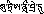
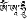

|
自性大圆满支分决定三戒论释
云丹嘉措尊者 著
殊胜上师足下敬礼皈依，祈求赐予加持！
法界空中智慧日，放射妙法大光芒，
照耀圣众之金山，遣除众生界痴暗。
同时开启佛教莲，为欲解脱善缘蜂，
赐予三学精华蜜，佛陀日轮前敬礼。
心荒野中出离水，利他菩提心苗芽，
四灌顶果之方法，善说三戒无谬传。
我虽无有撰注疏，细致分析之智慧，
为满修解脱友愿，简明扼要著略释。
具有权巧方便大慈大悲我等本师释迦牟尼佛早在无量劫以前就已现前圆满正等正觉果位，之后幻化如来身相现示无量刹土，从未间断任运自成应机化众，其事业不可思议。又于此娑婆刹土所化众前再次现示成佛，尔后演说了八万四千法蕴，佛陀所说的一切法门完全可包括在四藏之中，而撰著诠解此等佛法密意之论典的印藏诸位大智者成就者们也不乏其数。其中本论的作者即是至尊文殊菩萨现为国王形相的赤松德赞的转世智慧卓越、成就颇高的大班智达班玛旺嘉多吉札巴嘉村花桑波吉祥贤。尊者彻见了一切修行法门均可包括在三戒之中后著写了这部不可多得的稀有善说。
全论分三：初义、论义、末义。
甲一（初义）分三：一、宣说论名；二、于殊胜对境前礼赞；三、立誓。
乙一、宣说论名：
上根者仅仅依靠论名就可以通达全论的所有意义，中根者可笼统地了解论义，下根者也可依之而明确断定经函，为此而宣说论名自性大圆满支分决定三戒论。意思是说，心的自性本来任运自成圆满具足三身的一切功德，此乃诸法之实相，能无误直接抉择此理的即是一切道之究竟阿底约嘎，而阿讷约嘎以下显密的所有道只能间接地作为证悟大圆满的支分。这一切修法的精华就是三戒，三戒的意义则通过三正量远离一切增损而抉择，故为决定。作者以纯洁清净之心为令众生获得解脱而宣说经教的意义，而且能起到对治烦恼怨敌、救离恶趣的作用，故称为论。《明疏论》中云：“对治一切烦恼敌，救护众生离恶趣，具治救德故为论，他教无有此二者。”因此，在造论之初首先宣说了论题。
接下来，说明顶礼之必要，如怙主龙树菩萨曾亲言：“作者于本师，赞叹非无果，于本师论典，生起诚信故。”通过礼赞可圆满自己的资粮，使造论善始善终，同时令诸后学了知论典的殊胜之处，从而恭敬而修学。
乙二、于殊胜对境前敬礼：
那莫革日巍！
所谓的“那莫”即是顶礼之义。对谁顶礼呢？于上师前礼拜。所谓的“革日”有沉重之义，传授三戒的大恩上师们身负功德的重担并是利害的严厉对境，因此作者在诸位上师前恭敬作礼。如果有人心存这种疑问：除了密宗以外小乘与菩萨乘中有上师的字眼吗？当然有。如《沙弥五十颂》中云：“于师住处门，手当轻缓扣。”又《菩萨戒二十颂》中亦云：“持戒具智力，上师前受戒。”
搅拌具德二资之大海，智悲皓月密法妙甘露，
雪域诸成就者胜顶饰，莲生金刚众生师前礼。
尤其作者感念多生累世中慈悲摄受自己并赐予授记的恩德而礼赞莲师。在这里是以婆罗门教中搅拌大海而出现月亮的典故通过形象化修饰法来说明的，搅拌福慧功德圆满的二资大海，从中升起无碍彻知诸法、无缘大悲即智悲双运皎洁的圆月，于此皓月中显示能令所化众生趋入无上密道与果位之事业而遍及各方洒下正法甘露。如是在具足智悲力功德、所化雪域为主、一切智者成就者之顶饰南赡部洲的大密咒师海生金刚众生上师前恭敬作礼。所谓的海生指莲师是在无垢澄清大海中不依父因母缘而以顿生的方式诞生，具有不被二取妄念所毁的胜义实相智慧，智慧身远离生死老衰，故为金刚。由于根据所化众生各自的缘份而行利乐事业，因此称为众生上师。作者在其前以清净心毕恭毕敬顶礼，这种作礼是世俗的顶礼。而了达无有顶礼者与顶礼对境即是现见胜义见解的顶礼方式。
乙三、立誓：
为了使造论不半途而废并劝勉诸位后学者而立下誓言。
擅长洗众心垢之仙人，手持智慧蓝宝石妙瓶，
赐予三戒善说甘露水，求学众士当聚于此处。
作者再一次以形象化修饰法将自己喻为精通洗涤众生内心二障垢染、被世间人共称为有功德的一位仙人，他手持着了知一切经论及注疏的智慧蓝宝石妙瓶，瓶内有能清净未证以及邪见等众过患、净除轮回一切痛苦的无垢善说三戒论这一去病除障的甘露水，现今赐予，希望想要受持能得殊胜解脱果位的正道三戒的诸位具缘之士云集此处，通过闻思等方便加以抉择，从而品尝到其中深义的美味。与此同时，详细阐明此论的必要等四法，三戒为内容（即所说）；通过词句而通达三戒内容进而趋入解脱道为必要；三戒修学圆满、达到究竟后成就菩提为必要之必要；此三者相辅相成，缘起而生，即是关联。
甲二（论义）分五品：一、总说三戒基之次第；二、分说别解脱戒之次第；三、大乘菩萨戒；四、密宗三昧耶戒；五、三戒圆融。
第一品 总说
乙一（总说三戒基之次第）分五：一、认识殊胜解脱究竟大菩提果之净基；二、略说获得佛果唯一道；三、宣说阶梯乘之分摄；四、别解脱与菩萨戒是密乘戒之支分；五、下三品之总述。
丙一、认识殊胜解脱究竟大菩提果之净基：
大圆满智之总相，净身金刚持佛果。
所谓的净基实际上就是如来藏，所有论典中均称之为种姓。对此，各宗派的观点也迥然不同。有部宗将不贪执有情与有情资具的知足心所承许为圣者种姓（即如来藏）；经部宗则认为如来藏是将来可产生无漏智慧心种子的能力；唯识宗认为如来藏是无始以来存在于心相续中具有能生无漏法之能力的法性得绳。这些宗派普遍认为如来藏是有为法，因此都属有实宗。中观派大多数观点均是一致的，它们认为如来藏是有垢真如，但是认识的方法却各不相同。
此处，依照大乘不共的观点而言，心性本来清净无为法之明空智慧无有迁变而存在即是如来藏。《等持王经》中云：“清净澄光明，不乱无为法，称为如来藏，本住之法性。”关于如来藏，《宝性论》中云：“佛身外现故，与真如无二，具种故众生，恒具如来藏。”此论中依靠三种理由宣说了一切众生均具有如来藏，其后又以十种道理抉择如来藏的意义，并且通过九种比喻详细说明了如来藏被垢染遮障之理。在金刚乘中如来藏则被共称为基续自性任运自成之坛城，也可以说是不变大乐与具殊胜空性无二无别之心性。尤其是阿底约嘎中认为，心之法性觉、空、明之本体中身智一切法犹如日轮与阳光般无离无合，圆满具足，因此称为大圆满。此处所说的智慧中已包括了基住三智、持相五智、入境二智等基果的一切智慧，除此之外再别无其他，而轮回之诸法也是无而显现、暂时性的，实际上除法性外无所言语，周遍轮涅，故而称为智慧之总相。如是净基的法性光相与所净的轮回法之垢共存，通过能净的正道可净化所净的垢染。因此，从究竟果乘来说，依靠三戒中的精华密乘道可以完全清净如来藏上的客尘，最终如实现前本基，达到五身五智于觉性中无离无合的境界，故称为金刚持。其中五身，现前通达诸法无相、自性清净之离戏智慧分即是法身；由法身的妙力中出现无边清净显现分即是报身；从报身中根据清净、不清净所化众生各自信解随机显现分为化身；三身现分毫不混杂分即是现前菩提身；三身无二无别分为不变金刚身。五智：如实通达法界为法界性智；明知分不灭为大圆镜智；证悟诸法等性为平等性智；互不混杂同时了知万法为妙观察智；以无缘大悲无碍洞悉利众事业为成所作智。这一切均是大断、大证、大心三大之自性，《现观庄严论》中云：“胜诸有情心，及断智为三，当知此三大，自觉所为事。”所以说，凡是想寻求无上菩提者都应当了知圆满究竟之果即是唯一的佛陀，而佛果必须唯一通过下文中所说的无上密宗道来获得。
丙二、略说获得佛果唯一道：
深广法门虽无量，未依大密能成熟，
及能解脱殊胜道，不得正觉佛所说。
为什么说必须要通过密乘道来获得佛果呢？因为如实开显法性之甚深、尽所宣说有法之广大的法门虽然不可胜数、无边无际，但未如理依靠大密金刚乘能成熟之灌顶与能解脱之生圆次第的殊胜道，而以下八乘的道均无法获得佛果。为什么呢？由于束缚于轮回中的因就是极其细微的精、血、风所生的三现迁移习气，而在其余八乘中并未宣说净除此习气障碍的方便直接之道。具足无碍彻见万法之智慧、独一无二的真实语者圆满佛陀在经中这样说道：“虽施头与手足等，心境尚未清净故，不得菩提之果位。”关于依靠无上密宗方得佛果的道理，《密藏续》中云：“六世间界十方中，过去以及现在生，一切如来之坛城，修此自圆五身也。”然而，并不是说以下八乘都无有必要，因为这八乘不仅仅是暂时获得自果，而且还是趋至无上密宗道的必经之梯。
丙三、宣说阶梯乘之分摄：
乃至心未灭尽前，乘之数量无边际，
引入一道之阶梯，虽得各果尚有增，
亦仅离各乘所断，未入一乘怎得果？
乃至所化众生相续不断的粗细心与心所尚未灭尽于法界之前，能调伏的对治法也是不可思议，乘的种类也是不计其数，故为无边际。当心相续灭尽无余时，既无有众生也不存在乘。《楞伽经》中云：“乃至有心前，乘边无穷尽，一旦心灭尽，无乘无众生。”如是在这些种类各异的诸乘之中所有的下乘都只是登上诸佛唯一道密宗金刚乘中无上内续顶乘的阶梯而已。为什么这样说呢？虽然依靠此等乘可以获得各自相应之果，但仍旧有要上进的功德，所以即使获得自果，可是人天乘只不过出离了恶趣，声闻、缘觉乘也只不过超出了轮回，菩萨乘与事行三续只是解脱了二边。总而之言，他们仅仅远离了各自乘的所断而已，实际上还没有趋入究竟一乘无上密宗道，如此又怎么能获得最终的大菩提果呢？不会获得的。
此依大圆满自宗，声闻缘觉菩萨乘，
称为法相因三乘，事行瑜伽外三续，
无上父续大瑜伽，随类瑜伽即母续，
明点瑜伽无二续，称内三续九乘摄。
虽然概括这些乘的道理有许多，但本论中按照不共前译宁玛派自宗大圆满的观点而言，可以分为九乘。即因三乘、外三乘、内三乘。其中因三乘包括声闻乘、缘觉乘与菩萨乘。自己从善知识处听闻佛法，并将所闻之义传授他人故称声闻；最后有者不依靠他者独立自主便能现前超胜三有轮回之果，故而称缘觉；为成就圆满菩提，利他心不怯懦、勇往直前，故称菩萨。诠示修持此三乘可获得相应之果的途径，是故称为法相，并且此三乘只是获得自果的直接因、获得究竟大菩提果的间接因，并非是果转道用，为此称为因三乘。
外三乘分事续、行续、瑜伽续，事续主要宣说外在的事宜，故称为事续；行续见行平等受持，因此称为行续；瑜伽续主要宣讲内在修行，故而称为瑜伽续。此三乘与因乘的方式相似并且从他处寻觅悉地，因而称为外三续。
内三乘包括大瑜伽（玛哈约嘎）、随类瑜伽（阿讷约嘎）、明点瑜伽（阿底约嘎）。与外续相比，尽管有许多超胜之处，但归纳而言，因见修行不同故称为无上续部。如果详加分析，则主要讲述方便生起次第为父续，称为大瑜伽；主要宣说智慧圆满次第的为母续，共称随类瑜伽；主要宣讲双运光明次第的为无二续，也叫明点瑜伽。此三乘证悟轮涅为净等，并且不从他处寻求悉地，所以称为内三续。
如是乘的所有分类均可包括在此九乘次第中。如《集密意续》中云：“决定胜义乘，决定有三种，集聚招引乘，苦行明觉乘，随转方便乘。”此中所说的三乘每一乘又各自分三，决定共有九乘。
如此九乘次第下面稍广加以说明。总的来说，乘也并不决定有九种，声闻缘觉乘所宣说的暂时相似之解脱果位以及能获得此暂时果位的相似道均可包括在大乘中，因而并非是大乘以外的他乘；菩萨乘与外三续部对于究竟菩提果位与能获得的正道，只是统笼地讲述了，而并未圆满阐明，因此可包括在无上密乘之中，别无他乘；内三续中的下二续（玛哈、阿讷）可包括在明点瑜伽（阿底约嘎）中，此外无有他乘。所以说，究竟阿底约嘎唯一乘才决定是大菩提的直接因。这与《大海续》所说的“各自佛法大海续，此说以此为此说，诸义此中均圆满。”意义相同。
如果按照各自的法义加以分析，则因相三乘中第一声闻乘，入门：护持得而未失七种别解脱戒中的任意一种；见解：虽然已了达了五蕴所摄的一切法人我为空性，却认为两种细微无分法我为实有；修持，观修九等至之寂止与四谛十六行相的胜观；行为：行持十二头陀行等；果位，预流、一来、无来、阿罗汉四种每一个都包括向与果两种共有八果。
第二缘觉乘，入门：与声闻乘相同；见解：在证悟人无我的基础上，又证悟了所取无自性，因此证悟了一个半的无我；修持：观修十二缘起生灭而断定十二空性；行为：与声闻乘相同；果位：利根者得麟角喻独觉果位，钝根者获得鹦鹉喻独觉果位。
第三菩萨乘，有唯识宗与中观宗两类。入门：受愿行菩萨戒。见解：唯识宗既证悟了所取无自性也证悟了能取之心识为空性，然而却承认自明心识本体不空，虽然他们自认为已经证悟了二无我，但实际上若以中观衡量，还未证悟细微的法无我；中观宗彻底证悟了诸法二我为空性。修持：唯识与中观宗均修持不共三十七道品。行为：行持六度。果位：暂时获得十地，究竟获得第十一普光地。由于此三乘能集聚于佛刹，并且是招引所化众生趋入解脱之道，故称为集聚招引乘。
外三续中第一事续，入门：依靠宝瓶水及五佛冠灌顶来成熟。见解：证悟法性清净天尊。所谓的法性清净天尊是指自之心性明空离戏智慧，之后如果观修世俗现分完全为清净天尊之自性，则最终将见到彼等世俗法成为清净天尊。修持：观修四真如，一、自尊真如，在自己为真如的见解中安住。二、本尊真如：一般事续中不将自己观想为誓言尊者，只是在前方观想智慧尊者；殊胜事续，空性、文字、声、色、手印、标志六尊。三、念诵真如：按照事续六尊的方式观修，即将自己观为誓言尊者，于面前迎请智慧尊者，将自己与智慧尊者视为主仆而成就悉地。在修念诵真如时应当具足三专注。其一专注本基：于自前明观天尊；其二专注内心：于天尊心间观想月轮；其三专注声音：于月轮上观想发声咒串，心专注于此而闭气念诵。四、禅定真如：将自己观为本尊，再于心间观想火焰中央日轮上有咒串，此为火住，是成就四种事业之根本，从中咒串发出自声，此为声住，是成就寂止的根本，观察咒声并于寂止无念中安住，此乃声际解脱，是显现胜观之因。行为：主要行持沐浴、清洁等外在事宜。果位：获得三部金刚持果位。
第二行续，入门：通过觉性五灌顶来成熟相续。见解：与瑜伽续相同。修持：修有相与无相瑜伽。如《大日如来续》中云：“文字结合字，基中成为基，极收意识中，念诵十万遍。”其中第一个文字是指观想胜义菩提心空性与彼之现分世俗菩提心月轮，第二个文字是在前者的基础上观想所诵咒语的自声，第一个基是指自己观为誓言尊者，第二个基是指自前观想智慧尊者，之后以兄弟、朋友的方式成就悉地，这是有相瑜伽。观察蕴等诸法而了达无生空性为趋入，现前无念本体为安住，从中对一切未证悟的众生生起大悲心即是起座，以趋入、安住、起座三者而观胜义菩提心，这是无相瑜伽。行为：与事续相同。果位：通过如是修行获得四部金刚持果位。
第三瑜伽续，入门：五觉性灌顶加上阿�^黎灌顶，通过获得此六灌顶来成熟相续。见解：以证悟胜义中诸法无相的加持而将世俗法观为金刚法界本尊。修持：修有相与无相瑜伽。如《嘎波续》中云：“修无念月语金刚，散摄而明现天尊。”即观修基空性、月垫、语文字、意标志、完整的天尊身相，通过如此五现前正觉的方式观想本尊。彼续又云：“等持加持灌顶供。”意思是说，观想眷属天尊、以自部作加持、受自己所属部的灌顶、顶礼供养赞颂，此为四幻化。意为誓言手印、语为法手印、身为大手印手印、事业为事业手印，以此四手印印持后迎请智慧尊者融入，依靠智慧尊者与誓言尊者无二无别的方式念诵，最后祈送智慧尊者，通过此等形式修持为有相瑜伽。于见解中安住为无相瑜伽。行为：沐浴清洁等仅仅作为助缘。果位：于五部密严刹中成佛。此三乘依靠外在的苦行而觉悟内在的意义故称为苦行明觉乘。
内三续中第一大瑜伽，入门：以外十利益灌顶、内五力量灌顶、密三甚深灌顶共十八种灌顶来成熟相续。见解：七胜义无本体的本性中显现妙力，于三垫天尊坛城中自性任运自成，此二者只是反体不同，自性无有差别，也就是抉择真谛无别大法身。修持：生圆次第中主要宣说的是生起次第，主要修持的也是净除卵生与胎生习气的生起次第，这一切修法都是以三等持为核心，本体具足清净、圆满、成熟，以闭气四钉印持而修。大瑜伽中的父续修持风的圆满次第；母续修明点圆满次第；无二续修胜义光明圆满次第。行为：行持有戏、无戏与极无戏三种行为。果位：究竟四持明所摄的五道而获得双运金刚持果位。
第二随类瑜伽，入门：以外十续灌顶、内十一大灌顶、十三修行灌顶、密二缘灌顶，共三十六殊胜灌顶来成熟相续。见解：法界无生离戏普贤佛母坛城、有境自然智慧自性任运自成普贤佛父坛城、二者本体无别大乐佛子根本菩提心坛城，即通过随寻、伺的方式来抉择此三坛城。修持：随义而安住于无分别念的境界中，随句仅以持诵咒语而明观妙力显现的天尊坛城，此为解脱道。方便道则依靠上下门而生起俱生智慧。行为：了知一切心境均为大乐智慧的游舞，从而无有取舍地行持。果位：究竟五道本体的五瑜伽与十地，次第修持随法性真如的五道而净除十地的十种所净，显现自地的一切功德。
一、如是资粮道意乐心瑜伽包括第一不定迁变地与第二能依根本地，此瑜伽净除相续的粗、细业习而次第成就五眼六通、细微神变等共同悉地，现见佛化身等显现资粮道的所有功德。
二、加行道辨大种瑜伽包括第三净除粗障地、第四恒时修学地以及第五所依福德地，此瑜伽清净粗、中、细现行因习气，仅以风心成就天尊身，并显现昼夜不间断证悟一切如幻等加行道的所有功德。以会供行为摧毁精、尘、风的粗乐、远离五怖畏、灭尽有漏而获得见道赐大安慰瑜伽。
三、赐大安慰瑜伽包括第六殊胜地，清净众生的障碍、现量见到法性自相，从而成就空乐智慧光明天尊身，一千二百功德获得自在，前往报身五部刹土听闻佛法等显现见道的一切功德。从见道光明中出定而现证修道，获得大授记瑜伽。
四、获大授记瑜伽包括第七所缘生果地，此瑜伽清净同时存在的障碍后成就证悟法性之智慧以及清净天尊身，显现不间断的双运身。
五、究竟道时获得大妙力道圆满瑜伽，此瑜伽包括第八安住不变地、第九周遍法性地以及第十圆满相融地，依次清净粗、中、细的随眠烦恼障碍。如是修道的四地，按照共同乘而言，则为修道九地所摄，修道的功德从见道的一千二百功德的千倍直至等同千万俱胝那由他不可言语刹土极细微尘数之间次第增上，显现四幻化、十自在等所有功德。如此四学道究竟后获得果灌顶末际所依精、尘、风三者的细微之因已断绝，从而使能依微细心识也得以清净，最终现前与二十五果法无二无别、任运自成的大乐身。
上述的五瑜伽与十地的定义虽然在经部、根本续以及窍诀中未曾见过有明确的宣说，但一般而言，五瑜伽中的第一意乐心瑜伽是指在资粮道时，光明与本尊身二者仅仅是由意乐引发的信解之对境，因此称为意乐心瑜伽。第二辨大种瑜伽：获得加行道时，有漏法虽然存在，但不会再度退转，因种姓已确定故而称为辨大种瑜伽。第三赐大安慰瑜伽：见道时远离五怖畏等，现量见到法性超离一切世间法，因而称为赐大安慰瑜伽。第四获大授记瑜伽：修道时，以时处等固定的方式获得大授记，因此称为获大授记瑜伽。第五大妙力圆满瑜伽：究竟道时，学道双运功德的妙力都已究竟圆满，所以称为大妙力圆满瑜伽。
地也有十种：由于资粮道时有漏与退转都有，因而称为第一不定迁变地；第一瑜伽阶段的一切现证是生起能依加行道等的根本，故称第二能依根本地；加行道时净除障碍见道义光明之现行因的一切习气，因而称为第三净除粗障地；昼夜不间断以如幻的方式修学双运之因，所以称为第四恒时修学地；依靠近因所积的福德而获得无漏智慧，故而称为第五福德所依地；见道时现量见到义光明，依此可使无漏功德与日俱增，更为殊胜，故称为第六趋至殊胜地；修道时，观想并修习有学道的双运之义而成就无学果位的双运身，为此称为第七所缘生果地；究竟道时，恒时安住于法界智慧无二无别的密意中，无有迁变，由此称为第八安住不变地；法性义光明与有法圣尊身的显现二者无离无合之法性手印周遍一切，因此称为第九周遍法性地；妙力显现的庄严色身均于无生法界中圆满究竟，圆融一味，为此称第十圆满相融地。从这一切地大多数名称都不固定的方面来说，它们都是有学地，各自的暂时障碍清净获得上地功德，因而按照暂时安立的各自定义来看，那一地的补特伽罗也不一定具足所有的条件。最后一地虽说是无学地，但只是名称而已，就像阿罗汉向虽然名为阿罗汉实际上并非是真正的阿罗汉一样。
第三明点瑜伽，入门：着重强调获得有戏、无戏、极无戏、最无戏四灌顶。见解：断定诸法于觉性本体中原本就已成佛，不需要依靠地道而再次修成。修持：懈怠者无勤而解脱以本来清净自然安住来护持境界；精进者有勤而解脱即依靠顿超六要而开启如来藏之密藏门，从而现量见到如来藏光明。行为：一切显现均现为法性游舞，因此远离破立贪执而安住。果位：究竟四相而趋至任运圆满普如来无别地或无上智慧地。此三乘不需要依靠对治刻意断除一切烦恼，具有将觉性智慧转为道用的方便，因而称为随转方便乘。
丙四（别解脱与菩萨戒是密乘戒之分支）分三：一、成立三种姓趋入密宗道；二、以意乐差别略说趋入方式之分类；三、明确此处所抉择之义。
丁一、成立三种姓趋入密宗道：
五十万续之教证，成立声闻与缘觉，
以及菩萨分别有，趋入金刚持道者。
如是九种次第前六者三种姓的所化众生趋入无上密宗的方式一般说来，一切众生的界性或种姓有许多分类，但归纳而言，分为下、中、上三种。下根指声闻种姓，中根指缘觉种姓，上根指菩萨种姓。这三种根机各自都有趋入无上金刚乘持明道中者。关于这一点，以《五十万真如成智续》的教证明显可成立。此续中云：“不同石头之种类，熔化成铁铜与银，依靠真实点金剂，悉皆转变为金子，如是以心之差别，三类种姓之戒律，倘若入此大坛城，则称之为金刚持。”意思是说，以上、中、下等石头来比喻未趋入宗派的三类种姓，铁、铜、银三者是趋入三种姓各道并已得果阶段的比喻，这三种物质依靠点金剂可变成金子是比喻趋入无上密宗金刚乘者毫不例外均成为持明者。
丁二、以意乐差别略说趋入方式之分类：
意乐差别入密宗，法门虽多不广说。
接下来，宣说以各自意乐的差别而趋入内续无上密宗道之理：如颂云：“基种姓一道种四，大密无上不退转。”从基础趋入，即未入各自道者最初趋入，一边修学人天、声缘、菩萨与哲雅等外三续四道一边趋入，此等道自己的果位究竟后趋入无上密乘，诸如此类。宣说趋入方式的法门虽然为数不少，可是，此处由于会遮障本义，因此不作广述。
丁三、明确此处所抉择之义：
于此上中下根中，曾经修行已究竟，
具有缘份上根者，得灌顶顿生三戒，
证悟解脱即同时，犹如恩札布德王。
此处，一切乘道之要点包括在三戒之中，受持三戒的方式因根机差别而有上、中、下三种，其中最上根者趋入密宗的方式，往昔二资修学已达究竟的具缘者，即生之中未以共同道净化相续，仅仅依靠获得灌顶便顿时生起三戒。因为无上密乘戒以大平等智慧已经摄持断除一切害他之事的别解脱戒与成办一切利他之事的菩萨戒，就像证悟灌顶义智慧与相续解脱同时的邬金国王恩札布德一样。国王向佛陀请求不断欲妙而得成佛的方便法，佛为他显示坛城灌顶时，他立即获证双运身果位。
中依三戒各仪轨，次第获得如龙树。
中根者，依靠戒律中的羯磨仪轨而得受七种别解脱戒中的任意一种；以二大法轨其中任何一种仪轨受菩萨戒；通过密宗内外续仪轨而受密乘戒。也就是说，依靠三戒各自仪轨次第获得三戒，如怙主龙树的传记中所说的一样。
二观察续说下根，劣缘难化次第知，
长净十戒四宗派，事行瑜伽趋无上。
我们应当认识到，前世与今生未曾积累二资的劣缘下根者，极难调化，他们需要一步步引导入道。首先，为他们宣说轮回的过患与解脱的功德，接下来传授长净八关斋戒、居士戒、沙弥十戒直至比丘戒。其后让他们修习四宗派中第一有部与经部宗所抉择的无我道理，随后发菩提心，以唯识与中观的见解修心。修心完毕，先获得各自灌顶，再次第了达主要宣说清洁威仪与念诵等身语事宜的事续、平等宣说身语事宜与心之等持的行续、主要宣讲心之等持的瑜伽续此三续中的见、修、行所摄的一切修法，并且通达无碍。之后依靠方便智慧无二大乐瑜伽所宣说的殊胜方便无上内续的灌顶来成熟相续，再循序渐进地学修生起次第、圆满次第、双运续部。关于下根者趋入密乘的方式，《喜金刚二观察续后戒律品》中有明确的宣说。此续中云：“最初传长净，后授十戒律，于彼讲有部，经部亦复然，其后瑜伽行，再后说中观，密次第皆知，后传喜金刚。”与之相同，《普巴嗔怒续》中亦云：“初授别解脱，传彼声闻法，复授菩萨戒，讲诸中观法，最后果大乘，灌顶传果续。”必须明确此处所说三种根机的意义。
此讲中根之方式，橛续时轮金刚言，
具比丘戒沙弥戒，居士次第为密宗，
上等中等与下等，然具智慧为主要。
此论按照中根者的方式来宣讲，得受灌顶时，小乘中的比丘、沙弥、居士在金刚乘中依次是上等、中等、下等者。关于此点，《金刚橛续》、《时轮金刚》中异口同声地说：“三者比丘为最胜，中等即是诸沙弥，彼中在家位最低。”不仅仅是密乘中，受菩萨戒的身份也是出家人胜过在家人。《经观庄严论》中云：“一切出家众，具无量功德，胜过勤持戒，诸在家菩萨。”这些是就一般情况而言的。在特殊情况下，具有智慧即相续中具足得地等殊胜功德者为主。《时轮金刚》中云：“除得地外在家人，不能作为国王师。”又《毗奈耶经》中云：“戒饰作严饰，调柔持净戒，断惩诸鬼魔，即比丘沙门。”认清如是所说的三戒。
前译普集续中说，自利利他大利他，
别解菩萨密乘戒，智者共称若分持，
声闻菩萨持明称，如是共同下二戒，
为无上密之分支，依如海续此宣说。
总的来说，三戒的术语在别解脱戒时安立为三学；菩萨戒时立为严禁恶行戒、摄善法戒、饶益有情戒；密乘中安立为身语意三誓言等各不相同。但是此处按照前译宁玛派续部的根本《普集续》中所说：“仅为自利欲获得寂乐果位为别解脱戒，为他利而欲成就圆满正等正觉菩提为菩萨戒，为广大饶益他众而欲迅速成就双运果位为密乘戒。”如是三戒根据“自利利他大利他”来分，自利为别解脱戒，利他为菩萨戒，大利他为密乘戒。依照经藏、律藏与密藏中所说的各自教义，以等起、仪轨、时间、所断以及补特伽罗的不同分别加以受持三戒，则前者为声闻、中者为菩萨，后者为持明者，这一点虽是智者们共同的说法，然而从发心的角度来说是不一定的。《分析三戒论》中云：“意乐以发心所摄持，仪轨依据声闻宗，八种姓别解脱，均成为菩萨别解脱戒。”这其中已间接说明，如此必须承认具足密乘戒者若受别解脱戒，则成了不共密宗之别解脱戒。如是因乘上下的共同戒为别解脱戒，菩萨乘与密乘的共同戒为菩萨戒，二下戒在此处说为无上密乘灌顶的分支。具足别解脱戒与菩萨戒者在受密乘戒时，别解脱戒成为密宗的严禁恶行戒，菩萨戒成了毗卢遮那佛的誓言。
由此可见，无上密宗总的与特殊的誓言中，总的誓言具足了别解脱戒、菩萨戒以及密宗外续的所有誓言。不仅如此，而且以前未曾受过别解脱戒与菩萨戒的金刚持（密咒师）在获得灌顶时也会具有别解脱与菩萨戒。如颂云：“别解脱戒菩萨戒，集于持明内戒中，无余皆为我所摄。”因为在灌顶之前要念诵此等承诺句。这样一来，具足大平等誓言的持明者的相续中自然也包括了下面的一切戒律。《密藏续》中云：“无上胜誓言，无余而摄集，律藏之戒律，所有无量戒。”《阿木漏续》中云：“为比丘菩萨，瑜伽大瑜伽。”《戒轮续》中云：“别解脱菩萨，持明之比丘。”如理依照诸如此类浩如烟海的续部中所说之义而在此论中作了阐述。
丙五、下三品之总述：
三戒各有总缘起，初未得戒得受法，
中得不失护持法，末失恢复方法四。
三戒总的道理宣说完毕后，接下来为了了解分别所摄之义而总述：概括来说，三戒每一戒都各有以本体分类的方式作谋篇布局之缘起；初未得戒者通过仪轨等受戒的方法；中间宣说守护所得戒的分类与不失毁而护持的方法；最后宣说以四门而犯戒重新恢复的方法，共四种。
第一品三戒总说基次第终
第二品 别解脱戒
乙二（分说别解脱戒之次第）分四：一、缘起；二、未得戒者得受之方法；三、得受者不失护持之方法；四、失而恢复之方法。
五浊恶世众生的导师、具足善巧方便、大慈大悲的佛陀色身虽然已趣入寂灭法界，但在持戒僧众中却现示分析开遮的戒律相，因此说能代表本师与佛法的就是戒律。
丙一（缘起）分三：一、真实缘起；二、所受戒之本体；三、以分类方式概括。
丁一、真实缘起：
缘起即于鹿野苑，本师佛为五比丘，
传律为主四谛法，迦叶等尊作结集。
圣撰大毗婆沙等，功德释迦光弘扬。
按照声闻乘共同的观点来说，我等本师释迦佛在三大阿僧�o劫之前，于大能仁释迦牟尼前发心，在资粮道圆满二资粮后于南赡部洲人寿二万岁时迦叶佛出世期间，成为婆罗门无上童子。自后世转为兜率天圣者白顶天子以来，一直以正法令众天人相续成熟。到了人寿百岁时，以种姓、洲、父、母、时间此五观照明见后为诸天人宣说了净除死堕的法门。其后以六牙白象的形相从兜率天降下。
当时正逢地羊年箕宿月（六月）十五日，他由正在受斋戒的摩耶夫人的右侧入胎，将母胎加持成无量殿，为数多人天眷属开示净除四生的法门。
铁猴年氐宿月（四月）初八，母亲摩耶夫人前往蓝毗尼林，当她手持树枝时，便在无有任何苦痛中从右胁顺利生下了身披法衣的佛陀。佛陀诞生于世即刻向四方各迈七步，伴随着天人在空中赞叹以及诸多稀奇的瑞相口中朗朗地说：“天上天下，唯我独尊”。
佛陀曾在众敬师等上师前学习文字、投抛、技艺等，一切学问均是卓越超群。迎娶释迦族的女子萨措玛、札怎玛、热达吉以及六万夫人，享受安乐。
二十九岁时经净居天劝请而出宫目睹生老、病、死四大瀑流与沙门，以此为缘，生起出离心，在四周戒备森严的情况下乘着由四大天王撑起的坐骑行于空中，来到清净塔前，自己削发为僧。之后在知幻力的儿子让破与让雪的儿子胜行二者前听受了世间禅定，又与�S陈如等五人在尼连河畔入定于虚空等持中，苦行六年。后经众天人劝请而出定，在前往金刚座的途中，蒙婆罗门女乐吉玛供养五百头母黄牛的醍醐，使得身体彻底变成金色，接受了卖草人具祥供养的吉祥草，于是以大士夫的步伐向菩提树前走去。
在木马年四月十五的那一天，在金刚座上铺草安坐，并立下这样坚定的誓愿：“乃至未得无漏果，期间不解跏趺座，此垫我身纵干枯，聚合皮骨纵分散，未得数劫难得果，身于此垫不动摇。”
初夜时分，魔王口出各种欺骗之词，七魔女以贪欲的伎俩百般诱惑，但终究未能得逞。这时，他们又派出千万上亿的魔军，佛陀依靠慈悲的等持将它们一一调伏。黎明时现前了灭尽、无生之智慧，获证正等正觉菩提。当时，大地震动，光芒万丈，天众赞叹不止。
共同大乘认为，佛陀在异生凡夫阶段圆满一大阿僧�o劫资粮，圣者十地圆满历经两大阿僧�o劫究竟二资粮，于十地相续末际在此成佛。声闻宗的观点，《俱舍论》中云：“本师独觉与菩萨，等持结地均归一。”又如云：“虽非圣者然而于，父母病人说法者，最后有者之菩萨，供养功德无有量。”意思是说，世尊是在资粮道中于一座垫上现前五地而成佛，之后于七七四十九日未说法。当时，梵天帝释请转法轮，佛应允。一时间，这一喜讯传遍了人间天界，直至色究竟天之间。
虽然佛次第转了三次法轮，但此处宣说第一转法轮戒律藏的缘起具足五圆满。本师圆满：无等大能仁佛陀。处所圆满：于鹿野苑野兽得不畏施树林。这里是许多独觉趣入无余涅��、舍利子颗颗坠地、梵施国王为野兽发放无畏施的圣地。时圆满：从六月初四开始；法圆满：主要传讲的是戒律学处的内容，其中律中律的佛制与自性罪只是概括性地提及，对律藏的经部等持与梵净行瑜伽次第、律藏中论藏的分类作了详细广说等，以对治烦恼之次第修法的四谛法门为主。眷属圆满：五比丘与八万天子。佛为此等眷属传法后，五比丘获得了阿罗汉果位，八万天子现见真谛。一般而言，四种律典（释迦牟尼佛所说小乘律藏四部：律分别、律本事、律杂事和律上分）所摄的律藏是释尊从成佛以来直到涅��之间宣说的一切戒学道理。因此律藏并不一定完全是指第一转法轮的律藏。但从主要开示轮回所舍之法相与脱离轮回之正道的角度而安立为律藏。中转法轮与末转法轮将在下文中阐述，故于此不繁述。
佛在八十一岁铁龙年四月初八接近涅��时，将佛法与四众眷属一同交付与迦叶尊者，而在拘尸那城萨拉树下融入寂灭法界。
佛涅��后教法是如何结集的呢？佛涅��后总共有三次结集。其中第一次结集：当时，与佛陀一同趋入涅��的有八万一千阿罗汉，与舍利子一起圆寂的有八万阿罗汉，目犍连一道圆寂的有七万阿罗汉。诸天人不禁冷嘲热讽地说：现在有境界的比丘都已涅��，正法也成了火灭之烟而已，诸如此类。为了遣除这种讽刺之语，佛涅��后的第二年，在摩揭陀国王舍城的七叶行窟内，未生怨王作施主，供养资具，迦叶等五百罗汉集聚一堂，由阿难结集经藏、优婆离结集律藏、大迦叶结集论藏。
第二次结集：佛涅��后一百一十年时，当时，广严城的诸比丘大肆宣扬可以不作犯戒处理的十种非事：一、作非法事，口呼“负负”，即可听许；二、作犯僧残，得人随喜，即可听许；三、病中饮酒，状如水蛭吮吸，即可听许；四、土为共用，不伤生命，两手耕种，即可听许；五、调盐变味，非时而食，即可听许；六、用斋之后，行程逾越半俱卢舍，再次用餐，即可听许；七、用斋之后，食物未作余食法者，两指拾食，即可听许；八、搀和定时及不定时食品，非时食用，即可听许；九、卧具补某，不必如来一卡，即可听许；十、沙弥头上，顶戴小龛，内置钵盂，花�N为饰，若得设进金银，便自接触，即可听许。为了制止此十非事，在毗舍离城婆利迦精舍，阿育王作施主，耶舍等七百罗汉摈除十种非事，完整地诵一遍三藏，也作了相顺长净与吉祥长净。
第三次结集：由于大天比丘等鼓吹“答复他不知，怀疑皆观察，能养活自己，此乃佛教法。”五非事，以此等为缘，僧众内部出现争论，又由于佛陀未开许律藏立成文字，长久以来，别解脱诵经的方式也各不相同，致使分成十八部。佛涅��近四百年时，在克什米尔花积精舍，腻契波王作为施主，密藏等五百阿罗汉、六万一千凡夫大尊者以及五百菩萨结集，将四分五裂的十八部均立为佛教，并将律藏立成文字，以前未曾立文字的经藏与论藏也都立成文字。之后通过撰著解释三藏密意的论典等方式弘扬佛法的情况：在宾陀山名优寺圣者密藏（优婆俱多）以及欲遍等五百阿罗汉集体著写了《大毗婆沙论》，“等”字还包括圣者们撰著诠解密意的诸多论典，尤其是，获证发光地的阿�^黎功德光撰著了《根本律》与《羯磨论》，阿�^黎释迦光造了《毗奈耶三百颂》与注释等，通过这些论著将律藏加以弘扬光大，直至今日仍旧主要依靠两位阿�^黎的著作一脉相传。
前译传承静命师，尔后释迦西日弘。
别解脱戒的传承是怎样的呢？前译派别解脱戒的传承：圆满的佛陀、舍利子等代代相传，后来传到大堪布静命论师、瓦绕那、藏绕色、友给瓦炯内、玛释迦莫内众近圆戒比丘，再向下传。在朗达玛国王毁灭佛教之时，玛、友、藏三位尊者将律藏驮在一匹骡子背上，前往丹德山。当时贡巴绕色大师出家，卫藏的十人受近圆戒，其后，传给乐美赤诚西绕，直至现在。这是人们共称的东律。
后译派的西律传承：由三护论师传下，此传承以前虽然有，但未听说现在仍存在。
中律克什米尔的传承：龙树传下，后来由克什米尔的班智达释迦西日传给文殊菩萨的化身萨迦班智达等近圆戒比丘，依次弘扬。关于律藏的言传当在其他典籍中了知。以上讲述了别解脱的传承。
丁二、所受戒之本体：
本体出离意乐引，断除一切害他事，
身语所生之缘故，承许其为有色法，
许断心续与种子，自部上下各观点。
别解脱戒的本体是以出离心的意乐所引发、断除一切害他之事的严禁恶行戒、欲界所摄的一种戒律，因为是出离心所生而遣除了外道的戒律；因断害他而遣除了中间律仪；因为欲界所摄而遣除了禅定与无漏的戒律。有部宗认为别解脱戒是身语所生的，因此于有表色与无表色二者的本体中产生，住于无表色中。《俱舍论》中云：“所谓三种无表色，即戒恶戒与中戒，戒有所谓别解脱。”又《分析三戒论》中云：“声闻戒律无表色。”经部宗认为别解脱戒是相续变化的一种特法。唯识宗认为别解脱戒是断除犯戒之心相续及其种子。他们的理由是，如果单单是心，那就无有相续，如果仅仅是习气，那么毁坏之因出现时也会跟随。中观宗认为别解脱戒是断除之相应心。《入行论》中云：“获断恶之心，说为戒度圆。”如是内道佛教中上下各派根据各自心的差别而出现了高低的观点。
丁三、以分类方式概括：
分类八关斋戒者，男女居士在家方。
男女沙弥近事女，比丘与尼出家方，
即是八种别解脱，归纳则许四戒体。
如果以戒律本体分类，则一般而言，依靠能成立各自戒律的因圆满而获得的是出离心的律仪，尽管这一点均相同，但分别来说，根据自己不同的方面所断的差别，于一日中立誓断除八种所断为斋戒，也叫时戒。如果是居士受斋戒，也称为长净。同样，承诺有生之年断除一至五之间的所断，为男女居士戒，对此戒律中虽然只说了近圆居士，但《俱舍论》中也宣说了受持三皈依等许多分类。此三种戒是在家方面的戒律。承诺有生之年断除十种所断即是沙弥与沙弥尼。在此基础上，在两年期间立誓断除十二种所断为近事女戒。承诺有生之年断七及其从属（声闻别解脱戒者，谓断七及其从属，即身之三不善、语之四不善，以及所属一切所断身语之戒律），即是比丘与比丘尼的戒律。此五种是出家方面的戒律。综上所述，别解脱戒共有八种，如果归纳而言，则有男女比丘、男女沙弥、近事女以及男女居士，男女只是名称不同而己，本体无有不同，实际上只有三种戒体，加上斋戒，共包括在四种戒律中，这是《俱舍论》的观点。此论中云：“所谓八种别解脱，实际戒体唯有四，除名称外无变故，彼等异体不相违。”
丙二（未得戒者得受之方法）分二：一、旧仪轨；二、现行仪轨。
丁一、旧仪轨：
初未得戒得受法：受法分二旧仪轨：
自然证智传信圆，承认本师许八难，
善来四白问答等，受者心净圣者师。
上述的这些戒律除了个别的以外，几乎都不是自然获得的，而需要观待表示而得。最初未受戒者得戒之方法，有无勤作圆满的旧仪轨与有勤作圆满的新仪轨两种受法。
其中旧仪轨：最初本师成佛之前、成佛之时、成佛后不久以及涅��之前受近圆戒的仪轨称为旧仪轨。此仪轨有十种分类：佛与独觉由证尽智及无生智，证大菩提，从而有二种获得近圆；五比丘生起见道，由内证智而得近圆。此三者是在自相续中自然生起胜义比丘戒而得近圆戒的。供施女因未获父母允许，由佛遣使比丘尼邬巴往告音讯，依僧传信而得近圆；大迦叶等由承认您是我的导师、我是您的声闻而得近圆；舍利子等由佛说“善来”持梵行而得近圆；僧伽会众，中土十人、边地五人，具行白四羯磨而得近圆；佛问善施：“何为唯一善法？”彼答“解脱”又问“解脱需何法？”答“信心”，彼以问答令心喜而得近圆；众生主母由许修学八难断法而得近圆。八难断法：《律词品》中云：“亲从比丘受近圆，半月比丘处受教，于比丘处许夏住，僧尼二众作解制，犯此于二众迁悦，不言比丘犯戒戒，不得轻侮诸比丘；顶礼恭敬新比丘。”意思是说，从比丘僧团处得受近圆戒，每半个月再从比丘处听受教言，在具足比丘处立誓安居，在僧尼二众前解除夏安居，如果违越了难断法，就要在僧尼二众前履行迁悦，不能谈论比丘破戒，不能对比丘轻视、侮辱，对新比丘也要恭敬礼拜。本颂中的“等”字是指六十善群比丘由许三皈依而得近圆。有些人说居士只是名称上的近圆戒。除了白四羯磨与传信以外的五种是由本师加持而得的近圆戒。八种是假立的，传信是现行仪轨，但旧仪轨中能如是出现，说明仅仅是安立而已，并不是完全固定的。旧仪轨的法相是白四羯磨。由于以前的所化众生业力、烦恼异熟三障轻微，智慧、相续与根机成熟，内心清净，能传近圆戒的上师也绝对是圣者，因为具备这些特点，故而十分容易得戒。
丁二、现行仪轨：
现行轨离五择定，石女等生之障碍，
国王不允等住障，不能驱乌等胜障，
以及发为黄色等，庄严障碍皆无有。
继旧仪轨之后制定的白四羯磨仪轨及其从属，即是现行仪轨。其中的斋戒，如《俱舍论》中云：“居于低位重复说，不佩装饰明晨前，具足斋戒之分支，清晨于他前受戒。”受戒者坐于较传戒师低的位置重复传戒师所说的话而得戒。关于受戒者的身份，有部宗认为七种别解脱种姓，经部宗认为旁生的身份也能生起戒体。对境：有部与经部均承认依从次受比丘戒者乃至具居士戒、斋戒以上者前受戒。特殊情况下，承诺每月十五、初八守戒的人，后来每到那时也需要受，但以前一次性受戒也可以。按照有部宗的观点，饭后受也能生起戒体。经部则认为在佛像等所依前受戒也能生起戒体。
终身戒是指观待各自学处的违缘，比丘需要真正远离五择定，沙弥也需要相似远离五择定。
五择定：诸如认为在顺缘具足的此地能守戒而于他处不能守戒，此为境择定；诸如认为仅在此年此月等期限内才能守戒，此后不能守戒，此为时择定；诸如认为在战争期间以外的其他时期能守戒，此为时期择定；诸如认为不会害怨敌以外的他众，此为众生择定；诸如认为除个别粗的学处以外所有细微的学处不能护持，此乃分支择定。必须远离此五择定。
此外，对石女与犯五无间罪等人虽传戒，但他们不能生起戒体，这是生之障碍；由于未得到国王与父母的允许，虽得戒，但因无有自由，故而戒体不能持久，这是住存之障碍；未到驱乌之年，或因病苦缠绕等，虽受戒，但不能守学处，不能学到殊胜功德，这是殊胜之障碍；黄发等色有缺陷者、断手等形有缺陷者以及屠夫等种姓有缺陷者，虽能学戒，但由于成为他众不信仰佛法之因，故是庄严之障碍。
无有此等障碍，具足五圆满顺缘，境圆满：所在地须有三宝及亲教师、轨范师；相续圆满：自己需要未侧身僧会，未破律仪，外貌须已剃净须发；资具圆满：备足资具；意乐圆满：意乐须具因位等起；仪轨圆满：仪轨须具足加行、正行、后行。
具出离心善缘士，具通善说如海戒，
一百零一种羯磨，上师前渐受近圆，
前未曾受圆满戒，亦于经中有明说。
不是仅仅为了救护怖畏以及实现善愿，而是具有希求获得三解脱中任何一种的出离心、无有违缘、具足顺缘的善缘之士，在具有智慧功德、精通三藏尤其是善说的四种律典所摄的如海律藏之义，并具足以一百零一种羯磨各自仪轨半句也不错地背诵的方式交待清楚的能力，具备戒律清净的功德，包括忏戒加持以上连细微的罪行也未染污，有如是功德的亲教师参加并具足十三增添法的僧众前按次序圆满受居士、沙弥、比丘戒。前两种戒未受直接受近圆比丘戒也能生起戒体，但传戒者犯一个恶作，这一点在经部中有说明。《毗奈耶经》中云：“未出家之在家人若受近圆戒，可否传授？优婆离，可以传授。”《报恩经》中亦云：“阿那律亦白佛言：‘设若在家人未受五戒，若顿时受十戒，能得戒否？’佛告阿那律：‘同时可得居士、沙弥二戒。设若未受五戒，亦未受十戒，顿时受近圆戒，亦于同时得三戒体。’”这是得后戒前戒顺便可得之义。
得戒界限则承许，三念诵之最后次。
如是受戒者的相续中得到所受戒律之界限：居士、沙弥戒念诵三遍皈依诵、自诵、他诵中的自诵圆满之际得戒，比丘戒念诵本体诵、所作诵、作者诵，所作诵刚刚圆满即承许为得戒之界限。
丙三（得戒者不失护持之方法）分二：一、所护之戒条；二、生起戒体之所依。
丁一（所护之戒条）分五：一、略说护持法与皈依戒；二、斋戒；三、居士戒；四、沙弥戒；五、比丘戒。
戊一、略说护持法与皈依戒：
中得不失护戒法，学处不共三皈依，
不寻皈他断害众，不交外道各恭敬。
只是得到了戒体还不够，中间为了不失坏而必须要守护已得之戒。因为不守戒过患无穷，守戒功德无量。《教比丘经》中云：“有者戒律为安乐，有者戒律乃痛苦，具有戒律则安乐，破坏戒律则痛苦。”
护持之方法：了知止行的学处后必须如理取舍。首先宣说遮止方面各自的戒条。
皈依戒：皈依三宝之人不共的三戒，第一皈依本师佛陀外不得寻求其他世间天神等作为皈依处；第二必须断绝损害众生之心；第三不得交往外道或与之相似的友人。关于此三所遮，《涅��经》中云：“何人皈依佛，彼为真居士，何时莫皈依，其他诸天神；皈依正法者，远离损害心；皈依僧众者，莫交外道徒。”作为皈依三宝者，仅仅是残缺不全的佛像、泥塔小像，一字一句的法所依以及僧众的形相乃至对黄色补钉以上都分别应当作佛、法、僧宝想，生起恭敬心。这些是应行的学处。
不为命奖舍三宝，何等要事不寻他，
不断令自他皈依，顶礼所去之方佛。
阿底峡尊许五种，即是共同之学处。
此外，为了生命、奖赏国政等也不能舍弃三宝；即便如何重大的事情，也不能认为三宝不能救护而去另寻其他世间的办法；恒时忆念三宝功德，从不间断；了知功德而令自他虔诚皈依三宝；无论去往何方，都要对那方的佛陀与佛像等作礼。此五种均是共同的学处，这是阿底峡尊者的观点。
戊二、斋戒：
四根本戒四支分，戒酒不放逸分支，
高床歌�N过午食，禁行分支乃斋戒，
此八分支非终身，亦非功德所依故，
别解脱戒唯七种，此八有生之年护，
居士虽非有部说，世亲许为上座宗。
关于所护的斋戒，如《俱舍论》中云：“次第四为戒律支，一不放逸三禁行。”断除非梵行等四根本戒及其同分是使戒律稳固的四种分支。《念住经》中云：“谓此不能损害我，具智慧者不依酒，醉时清凉异熟大，依酒堕入地狱中。”了知过患后戒酒，这是增上不放逸之分支。高广大床、歌舞花�N等、非时过午进餐，断除此三者是清净禁行之分支，护持此八种戒者即是八戒居士。由于此八种支分并不是终身戒，所以不属于一切上戒功德的所依，真正成为上面功德所依的别解脱戒，决定只有具相的七种。《道炬论》中云：“七种别解脱，恒具其他戒，菩萨之戒律，具缘具非他。”假设承诺有生之年一直守护此八支分，旃札够玛上师曾经也是受持此戒律，因而被共称八戒居士。尽管有部宗的戒律中并未如是宣说，但世亲论师认为这是上座部的观点。他曾经是这样说的：所谓的居士在上座部的窍诀传承中听说过，但未见过如来有明说。然而大乘的契经中有宣说，如《宝积经》中如是记载：“大悲王子以此方式受此戒。”
戊三、居士戒：
断尽杀盗淫妄酒，即是居士之戒律。
随意承诺依数量，一戒二戒多圆戒，
戒除一二三五上，梵行居士断非梵。
智者许此八戒士，非在家亦非出家。
终生三戒中第一居士戒：杀生即断绝命根，不予取即偷盗，妄语即说上人法，邪淫即以贪欲作不净行，此四种是四根本罪。其中杀生的对境必须是人，如若不具足这一点，只能算是根本罪的范畴，并不能构成真正的根本罪，因此不能算是真正破戒。此处未说是非梵行，只是说邪淫，因为在家人容易守护。《俱舍论》中云：“邪淫极受谴责故，易守不作得戒故。”断除此等的分支饮酒，如若不断，则无法守护其他学处。这五条根本学处是居士戒。自己随自己的意愿而承诺，依照守护的数量诸如仅戒杀为一戒居士；在此基础上断不予取为二戒居士；在此二者基础上诸如断除妄语为多戒居士；在此三者基础上断除邪淫与饮酒为圆戒居士。此等依次断除一个、二个、三个、五个所断。有部宗承许说：仅仅承诺守居士戒而可随意守一戒等。经部宗认为随意承诺一戒等如果就承认为居士戒，那么就成圆戒居士了。这样一来，由于没有守护其余的戒律就会造成破戒的过失。这以上所宣说的是在家学处。
在五根本戒的基础上断除非梵行，即是梵行居士。这一点通过“戒律庄严修行人”等教证可以说明，这是经部所承认的。关于梵行居士与八戒居士，《宣说幻化经》中也有阐述，此经中云：“纵然诸善逝赞叹，出家具有多功德，然为悲悯诸有情，利众生我执国政，有生之年持梵行，亦守八关斋戒也。”智者们认为，这两种居士已断绝了在家人的不净行，因而不是在家人，又由于未持出家相，所以也不是出家人。
余六不善同分断，具居士戒持明者，
除出家相与仪轨，余均实行佛所说。
十不善业中除去身三不善与妄语，余下的语三、意三共六种不善业以及四根本罪的同分杀旁生等一切所断虽然未彻底戒除，但因具有悔改之心而称为需还净之学处。不仅如此，就算是具有居士戒的密宗持明者，也是除了披袈裟、持钵盂等出家相以及羯磨仪轨专门制定的的戒律外其余所有的戒律都必须同出家人一样，这是佛在《妙臂经》中所说的。此经云：“如来彼说别解脱，一切清净之戒律，在家咒师除形相，仪轨余者均当行。”既然如此，那么出家咒师就更不必说了。
戊四（沙弥戒）分二：一、真说沙弥戒；二、旁述正学女之学处。
己一、真说沙弥戒：
为遣怯懦略说十，断除杀盗淫妄酒，
舞等�N等高广床，过午进餐触金银。
属于出家方面的后两种学处中的第一种沙弥戒，如果能断除杀人或胎儿、盗窃价值足够的财物、依靠三门任何一处而作不净行以及说上人法妄语此四条，则为守戒。如果不能守护，则称为破根本戒，不覆不藏可以恢复，如若又覆又藏，则如比丘一样无有恢复的机会。《戒律三百颂》中云：“杀人等四戒，沙弥若失毁，如比丘沙弥，亦无生戒机。”饮酒、放荡不羁随心所欲进行唱歌、跳舞等娱乐活动，除说法等特殊情况外住价值昂贵的大床或者价格虽然低廉但超过一尺的高床，自己所在地过了中午进餐，仅仅接触倒也可以，但以贪爱之心接受金银而收藏，以上行为要一律断除。
所谓的支分六戒是守护根本戒的方便，戒酒是不放逸的分支，其余五种是禁行的分支，如哲则之子听到学处繁多而生怯懦之心，退失受戒之心，为了避免这种情况，佛概括性地宣说了沙弥十戒。
开许无罪十三条，持余法衣持双钵，
触宝触火离法衣，再食攀过高人树，
不予取食与伐树，青草上撒不净物，
未许损种食蓄物，此外取舍同比丘。
沙弥十戒如果以包括所属的方式来分，则有四根本戒中的杀生、杀生同分杀旁生、有含生的草抛至水中、使用有含生的水三种杀生；属于妄语的有十二种，即无因诽谤、借故诽谤、破和合僧、随顺破和合僧、厌烦家室、明知故妄、诽谤私情、诽谤执事、谤为少食而说法、谤僧、故犯学处以及为取超分淆用鬻盖；饮酒、歌舞、乐器三种，装饰�N等、涂香、涂脂粉，大床、高床，非时食，取金银，合计三十，加上即将要宣说的三种失毁，即是三十三违犯。按照《教理宝藏论》中的观点，三杀生、妄语中除去为取超分淆用鬻盖余下的十一种此十四种如前一样，在此基础上，属于不予取的建房、建大房、珍宝作针筒三种，属于非梵行范畴的与被僧众开除之人同寝。属于四根本罪的不持长净、安居、解制，以及不依止皈依师，总之属于四根本罪的共有二十二种。比丘的一切所断中除了个别的单单佛制戒可以不受，其余的一切戒条沙弥都必须守护。
接下来宣说这一道理，持余法衣、持双钵、离法衣、掘地、触宝、触火、再食、攀过人高树，伐树、不予取食、青草上撒秽物、食蓄物以及未许损种，此等即是对沙弥开许的无罪十三条，这是《毗婆沙论》中所说的。在此基础上，藏地诸位律师又加上相同的六种，如云：“置月积蓄离静处，未说悔欲未圆寝。”如此承认共有开许无罪十九条。除此之外，一切取舍都与比丘相同。沙弥的所有堕罪均可包括在唯一的恶作中。四根本罪是失毁戒律之因，因而是他胜相同之恶作，此外的一切违犯需要如理忏悔，因此是所忏恶作，除此两者外比丘的一切所断必须以观想守护，这些是所守恶作。
持对衣料置一月，离对静处可离钵，
蓄对积蓄亦开许，失弃俗相取僧相，
轻侮堪布三失毁，断此沙弥之学处。
按照大智者布敦仁波切说《请问品》克什米尔祖师所说的真实无罪于此引用。即三种对应，比丘不可持余法衣，而沙弥衣料可放置过月；比丘在无恐怖情况下不可离法衣，沙弥即便在远离怖畏的静处也可离法衣；比丘不可享用储蓄之物，沙弥为维生积蓄也开许，因而安立为无罪，这与前述的六种开许中前三种是同一个意思。沙弥受中戒时所承诺的三种所断：失毁断明显穿著白衣等在家相，失毁持法衣等出家相，以轻侮心不祈祷堪布此三种失毁。假设有人问：此三种失毁与近事男的戒条有何差别呢？按《俱舍论》中所说，近事男犯此三失毁，则犯戒，而沙弥只要忏悔即可，有此差别。如理守护如是所说的一切所断，即是具足沙弥戒的学处。
己二、旁述正学女之学处：
得沙弥上正学女，独行游泳触男身，
同住撮婚掩伴过，此为根本之六戒。
取金掘地剃阴毛，食不予食与蓄食，
刈割青草均断除，即是随顺之六法。
在获得沙弥尼戒的基础上，独身路行、入水游泳、接触男身、与男同住、撮合婚姻以及掩女伴过为正学女根本六戒。执取金等宝物、剃除阴毛、掘土、刈割青草、未受食而食、食蓄食此等为正学女所应断的随顺六法。
戊五（比丘戒）分二：一、守护方法；二、所护戒条。
己一、守护方法：
受近圆戒后十年中自己尚未得到稳重与智慧二功德之前，必须要依止具有法相的堪布或依止师听闻其宣说无误取舍道理的教言。除特殊情况外一切事情都要请示上师，不可自作主张依止他人。以喜爱修学的精进认真闻思律藏，细致入微地实行取舍，具足不放逸、不忘失学处的正念与观察自相续是否出现罪业的正知，通过对治自相续而守护学处，这一点至关重要，因此务必要精勤努力。
己二（所护戒条）分三：一、所断；二、所修；三、推断同类。
庚一（所断）分二：一、真实所断；二、旁述。
辛一、真实所断：
比丘二百五十三，戒律根本四他胜。
比丘戒可分为他胜、僧残、堕罪、向彼悔、恶作五堕罪，共有二百五十三条。一般而言，比丘的一切所断学处均可包括在五堕罪的范围内，所有粗堕皆可摄于他胜或僧残其一之中，一切加行恶作都属于各自的堕罪，十七事中所讲的所有恶作也可包括在恶作堕罪中。因此，如果是恶作，不一定是别解脱中所总结的（一百一十二条定数）恶作。
第一、他胜罪：持戒比丘无论犯四他胜中任何一种，一刹那隐瞒，所有清净戒律也全部毁坏无余，由于没有根本堕罪的违品对治力来摧毁，因而称为四他胜。
基支堪能男根入，成熟女人之密处，
意乐无惭畏贪心，加行之时互摩擦，
究竟获得乐感受，彼者失毁梵净行。
一、不净行：她基之支分，身体已达到一半以上，完好无损并能享受的口、肛门或者阴道三处任何处；自基之支分，无病堪能的男根。意乐支：无有观待自方的惭与观待他方的畏，想感受乐触的贪心。加行支：相互摩擦。究竟支：通过三门交触，身体感受快乐，心里执为我所，此四支分如果圆满，则彼人已失毁梵净行。萨嘎拉尊者云：“男根入三门，则犯他胜罪，外触则相应，粗堕或僧残。”
盗基即是他人财，意乐为自得生存，
境时价值已足量，加行之时行盗取，
究竟自盗令他窃，抑或争论而获得。
二、不予取：基：不属于自己而是另外人所属的财物以及烹调好的饮食，并不是尸林中那样低劣的物品。意乐：明明知道或者怀疑是他人的财物，为了自己维生而想盗窃之心，观待当地当时能盗所盗二者分析留存财物与分配财物的差别，价值具足。加行：一时间盗取。关于价值量，《沙弥五十颂》中云：“盗取五玛夏，或四分之一，嘎夏巴货币，据己有破戒。”所谓的嘎夏巴，人们共称是莲花王时期所造的一种金币，相应于八十个海贝的价值。《根本律》中说中等嘎夏巴的量是五个玛夏嘎。为此它的量并不完全是固定的，但一般共称是一两银子的价值量。究竟：无论是自己盗取或让他人窃取，或以争论的方式使财物离开主人而据为己有，生起得心即已犯盗戒。不仅如此，以咒诛、压伏、勾招、不还押金、借后不还而盗或者故意丢失装饰品而取物，不交车、船费等，总应当详细分析戒条之分支而了知。
杀生之基识他人，意乐杀心知所杀，
加行杀始终未退，究竟断绝彼命根。
令杀随喜赞叹等，以此为缘亦复然。
三、杀生，基：无误地认识自相续不同有感受等的他人或胎儿。意乐：非以殴打之心而是以杀心杀害，确定所杀的是某某人或者有合理怀疑的想法。加行：以密咒或兵器等杀，自始至终未有退失。究竟：在对方未死之前采取行动，无论所杀众生当时死亡或他时命根灭绝，均犯根本戒。《戒律三百颂》中云：“具有自他学处者，知是他人知是人，杀心无误而杀害，除未死梦毁戒律。”或者让他人杀，即便随喜赞叹杀人等，只要具有杀心，并且对方已死，就犯根本戒。而且，许多比丘共同协商杀人，所有比丘均犯他胜罪。《俱舍论》中云：“军兵等为同一事，一切人均如作者。”
妄基知言解意人，意乐转想生说心，
加行神通等功德，虽无说有上人法，
究竟他懂彼妄语，则已失毁根本戒。
四、妄语，基：所说的对境是除了自己以外的他相续、能知言解意、精神正常、非石女与两性，具此五种名相的人。意乐：为了改变对方想法而生起要说欺人之谈的心。加行：超越欲界的一禅至佛果之前的神通等世间出世间的功德明明知道自己本来没有反而谎称为有，说上人法妄语。萨嘎拉尊者云：“于此五障碍，得诸人之法，尽彼许上法。”究竟：虽然自己所说的谎言未能转变对方的心意，但当听者已明白妄语之义，比丘已经失毁了自己的戒律。这里所说的妄语必定具足是语言、是自己所说的语言、是与自己有关的语言、正确、明了、当面而说此六种法相，并且所说之人在无有增上慢的情况下自己说或者由他人来说，比丘在接受别人所说话语的过程中，我们如果详细分析，以观待果、座垫（坐在花垫上等）以及本体的方式可以了知也有犯妄语戒的。若有人想：此等加行与正行支分如果未具足，那是否犯根本戒呢？加行之加行仅仅想做并从座垫上站起等，只是恶作，为了此事而前往等为加行粗堕，正行时虽未真实生起堕罪，但与之相类似，诸如没有杀心而以必致人于死地的利刃击中人，是加行粗堕。正行虽已究竟，但四支中任何一支不具足，诸如以杀心杀非人，是正行粗堕。剩余的所有堕罪均应依此类推。这些在犯单堕等其他罪业时均成了恶作。仅是在心里思维，即是所守恶作；身语中表现出来，则是所忏恶作。
犯此四何比丘败，故佛说为四他胜。
此四种罪业各自四种支分都已具全，无论犯任何一戒，那位比丘就已败于罪业的足下，因而遍知佛陀说叫四他胜。《别解脱经》中云：“诸比丘无论犯彼等中任何一堕罪，自始至终均成他胜。不可与诸比丘同住，不得享用僧财，当摈除。”
共称十三僧残者，于非行处出精液，
以贪触女身部位，明说淫语贪女赞，
撮合男女相互遇，为自过量大小屋，
无故诽谤假故谤，破僧随顺破僧违，
污家摈除而诽谤，现堕时劝恶性拒。
第二、僧残罪：因为要恢复此堕罪必须依靠僧众，并且清净的戒律只剩余少许，数目共有十三种，为此共称为十三僧残罪。
一、出精僧残：除口腔、肛门、阴道处，以想出精的意乐心将自己的男根接触自之手指或他者身体部位而出精，享受快感时，即犯此僧残。
二、触女人：以贪欲心想触摸可依的女人，如果触其身毛，则称为粗堕。直接抚摸其肌肉等身体部位，体验乐受时，即犯此僧残。
三、贪鄙语：直截了当地对知言解意的女人明说当时当地共称的淫秽语，当对方懂得其义时，即已犯此僧残。
四、赞供养：为了与女人作不净行以淫欲心说：对像我这样的持戒比丘最好的供养就是不净行。对方已知其义或接受对境所说的语言时，比丘即犯此僧残。
五、作媒嫁：自己通过三次捎信的方式撮合，使自己以外本不相好的男女接触，相互行淫欲之事时，即犯此僧残。
以上五种为贪欲有情所犯的五种堕罪。
六、小屋僧残：比丘未经僧团开许，便在多生物、有诤、有灾等三种不净之地，私自或令他人营造房舍，度量超越长十八肘、宽十肘半所成之罪。盖屋顶时，即犯此僧残。
七、大屋僧残：使用不如法的清净地基、材料，营造可容纳四比丘以上的大房舍，用墙围绕，盖屋顶时，即犯此僧残。
这两种是贪执外资具所犯的堕罪。
八、无根谤：既未见到也未听到又无怀疑的根据而对其他比丘以四他胜任何一种的方式明说诽谤之词，他人懂得其义即犯此僧残。
九、假故谤：假借稍有根据而以旁敲侧击的方式妄加诽谤其他比丘犯四他胜中任意一种。他人明白其义时，即犯此僧残。
这两种是因损恼而犯的僧残。
十、破僧：在一个界限内本人不包括于其中的持戒比丘，对数目均已足量的双方僧众，以非法见进行挑拨离间。为此，僧众虽以婉谏、启白、一量、二量、三量五遮加以制止，但该比丘仍不作罢，前四种末尾时均犯一粗堕，如果到第五羯磨完毕时仍不舍弃，则犯此僧残。以下三种僧残也当依此类推而了知。在此分析破僧与五无间罪中的破和合僧的差别：破和合僧所分开的是僧众，挑拨者一定要是比丘，最终结果僧众必须分开。此处的僧残，即使僧众未能分开，但以五遮制止，末尾仍旧没有舍弃行为，就足已够构成僧残，挑拨者不一定是比丘，比丘尼也会出现。
十一、随顺破僧：对于破僧的比丘进行相助，僧众以五遮制止，末尾仍不放弃，则犯此僧残。
十二、比丘因与女人一起嬉乐等违犯学处的恶行而使在家人生厌恶，起邪见，因此被僧众开除。于是此比丘便以四非理的诬蔑之词妄加诽谤僧众，僧众以五遮加以制止，末尾仍不放弃，即犯此僧残。
十三、恶性拒谏：自己犯了堕罪时，别人说其过失，僧众按照戒律劝其还净时，该比丘心怀不悦地说：“你们无论是好心还是恶意，都不要说什么。”僧众以五遮制止，到了末尾仍不放弃，即犯此僧残。
以上四种是因违谏而犯的僧残。《别解脱经》中所说的“有遮静处坐”讲了二不定，比丘在无有人陪同的情况下在有遮掩的静处与女人坐在一起，根据行淫与否的差别，这位比丘犯他胜、僧残、单堕三者其一，或者僧残与单堕二者以及最终将作何事均不一定。因此，仅仅同女人坐在一起就犯单堕，它的结果包括在他胜与僧残中，因而未单独宣说。
第三、堕罪分为舍堕罪与单堕罪两种。
其一舍堕罪，无论谁人出现堕罪，都必须要舍弃犯罪之物来还净。如若未经还净，其果报将是堕入恶趣，数量共有三十种，分为三类。
第一类衣等十种：
宣说三十舍堕罪：自余衣持过十日，
离开法衣过一夜，衣料积蓄过一月，
使比丘尼浣法衣，以及从彼受衣料，
于非亲属在家人，索要法衣之布料，
若赠取超上下装，思供养己办衣价，
提醒衣质价值量，嘱托衣价珍宝取。
一、持余衣：未张开羯耻那衣的补特伽罗自己占有执为我所的多余衣物，大小达到能覆盖三轮量（量满可掩两膝至脐之三轮的量），如果有可加持的三法衣或没有三衣也无有作法衣的念头，量及一肘的布未作加持或者虽已作加持，但与杂染相联，无论以自力或杂染力持用超过十日，在第十一日黎明则犯此舍堕。杂染有四类，即衣杂染、钵杂染、药杂染、堕杂染。后三种下文中有宣说，在此讲述衣杂染，衣杂染又有十日衣杂染与月蓄衣杂染两种。其中十日衣杂染：依前所说这样的衣服未经加持而成为能杂染，与之同时或他时后来得到的任何衣物均成为所杂染，如果未经杂染以前也未作加持，则杂染以后，成了所杂染的衣物虽作了加持，但若超过十日，也以能杂染的自力与所杂染未过十日但以杂染力而产生堕罪。月蓄衣杂染：月蓄衣的定义下文即将宣说。杂染的方式一般来说除了日期以外与十日衣杂染相同，但就特殊而言，有四类，（一）类别已转未杂染：以前得到的月蓄衣后来因圆满获得法衣而转变为十日衣，类别已转，（如果在十日之内）当日获得则不会出现杂染。（二）类别已转已杂染：若在后来时日中获得，类别已转变，已出现杂染。（三）类别未转已杂染：如果是前后得到的月蓄衣，前面的未作加持，类别虽然未转变，但也出现杂染。（四）类别未转未杂染：获得月蓄衣后三十日内保存，如果未得到其他衣物，则类别也不会转变，又不会出现杂染，因为无有所杂染之故。
二、离衣：未得到离祖衣的开许并且未张开羯耻那衣的比丘除了在具有怖畏的寺院以外离开作了加持的三衣其中之一，越过放置法衣的附近过一夜，到次日黎明时犯此舍堕。
三、月蓄衣：未张开羯耻那衣并且无有三衣中任何一种的比丘拟定作法衣并且尺寸已达到一肘的量，长度不能覆盖三轮，又未作加持或虽经加持但与杂染相联，从而以自力或杂染力储蓄满一月，到第三十一天黎明时犯此舍堕。
四、使浣法衣：比丘让非七代之内亲属的比丘尼洗涤自己旧的三衣或敷具任何一种，对方正在洗时，比丘犯此舍堕。
五、受衣：自己本来已有三衣的比丘向非亲属关系的比丘尼化缘能覆盖三轮量以上的衣服或衣料，取受时犯此舍堕。
六、乞衣：有三衣的比丘向非亲属的在家人化缘能覆盖三轮量的衣服或衣料，得到手中时犯此舍堕。
七、过量受施衣：无有三衣的比丘向非亲戚的在家人化缘衣服，结果施主赠送许多。如果接受上衣下装一套以上，则犯此舍堕。
八、办衣价：非亲属的在家人想供养比丘法衣或衣料，这位比丘提前到其前提醒说要供养这种质量、这么多价值的，当得到手中时即已犯此舍堕。
九、乞各办衣价：当比丘听说男女信徒分别供养自己许多衣物或一件时，为了观察其是否供养而提醒，获得时即犯此舍堕。
十、嘱托：比丘委托执事用施主所供养购买法衣、比丘不能接受的金银等珍宝代买，后来执事未按时交付法衣，比丘亲自向执事索要三次。如果对方仍未交付，三次缄默而要，无有罪过，如果过多索要，获得法衣时，即犯此舍堕。
第二类：
丝棉制作成敷具，罕处黑羊毛具铺，
制作混合之敷具，六年未过作新具，
有应量具亦重制，担黑羊毛三由旬，
令尼掰开涤羊毛，触宝纳质与买卖。
一、作棉敷具：比丘用丝棉等价值昂贵之物制成敷具，即犯此舍堕。
二、作黑羊毛敷具：在黑羊毛罕见的任何地方以黑羊毛制成敷具，铺设时即犯此舍堕。
三、作混合敷具：戒律中说下身羊毛一份、上身羊毛一份、黑羊毛两份混合而做敷具可以。如果比丘自己或令人用超量的黑羊毛做敷具，用此三者正在做时犯此舍堕。
四、六年二敷具：比丘本来有敷具，并且未过六年，也未经开许，自己或让他人重新做敷具，已完工时即犯此舍堕。
五、一卡敷具：比丘本来有具量的敷具，但如果在缝制新敷具时，不从旧敷具上剪下如来一卡即常人一肘半的量补到其上而享用，则犯此舍堕。
六、路途担羊毛：比丘出自贪心而在一日内背负自己拥有的黑羊毛等重担，如果有沙弥等同伴，则从开始出发即犯此舍堕，如若无有同伴，则在三由旬内开许，从过三由旬起逾越一闻距的边缘而行，则犯此舍堕。
七、令掰涤羊毛：比丘让非亲属的比丘尼掰开羊毛并洗涤，对方如是而做，则比丘犯此舍堕。
八、触宝：在未经开许、无有浪费等外缘的情况下，比丘以贪爱之心接触或让人接触金银等珍宝，据为己有。开许情况：让施主观想为宝物主人；让执事承诺他自己是宝物的主人；经过加持。
九、纳质：比丘以贪财之心向非亲属的在家俗人贷金银等物，以牟取利润，当量达一肘的衣物利润得到手中时，即犯此舍堕。
十、买卖：比丘为求得利润，除珍宝以外的粮食、衣服等其他物品如果过多，则从非亲属的在家人手中购买来，如果过少，则卖给他们，当得到利润时，即犯此舍堕。
第三类：
未加持钵过十日，持有双钵无工钱，
令纺织成纺织物，予比丘衣复夺回，
说施时前归己有，畏寺离衣过七日，
雨衣解制过半月，僧众回向之财物，
据为自己所拥有，药过七日而积蓄。
一、持钵：比丘自己的应量钵盂未作加持或者虽作过加持但已杂染，持用超过十日，到第十一日黎明则犯此舍堕。杂染方式除名词不同外与十日衣杂染相同。
二、求余钵：比丘明明有质量、形色均可、量可容纳九捧以上、上端留有一拇指空隙可使用的钵盂，还向非亲属的在家人化缘其他钵盂，如果获得，则持有了两个钵，得到手中时，则犯此舍堕，后来得到的钵如果未经加持超过十日，也犯前一舍堕。
三、织作衣：比丘自己或派人让非亲属的纺织工缝纫衣服，不付工钱，当法衣到手时，即犯此舍堕。
四、给织酬：非亲属的在家人让人缝纫供养自己的衣服，如果未经施主允许比丘擅自令尺寸缝大些，得到法衣时，即犯此舍堕。
五、夺回已给物：曾经赠送给与自己见解相同的其他比丘衣服、钵盂等资具，尔后又夺取回来，当这些物品离开对方时，即犯此舍堕。
六、过期蓄衣：供养安居僧众的过期蓄衣在分别施予时，应当是解制后的第二天分发。如果在安居期间归为己有，未解制时分别分发，解制后的第二天未分发，则前后共有三种堕罪。依照《毗奈耶经》中所说：“五过期蓄衣，施患为患者，亡人为亡人，以及启程者。”对于此中所说的五类人，在离安居结束还差十日分配，无有罪过。但安居期间说法所得财物以及为病人作经忏所得财物不包括在此内。
七、出寺离衣：比丘住在寺院，如果具有怖畏，则经过加持的三衣六天内离开也无有罪过，当解除怖畏后到第七天黎明时犯此舍堕。
八、求雨浴衣：自己承诺早安居或晚安居的比丘在安居一月之前或解制半月之后寻求以及持用雨衣，则犯此舍堕。
九、回向转余：比丘将在家人准备供养僧众或其他比丘的衣服及钵盂等财物转为自己，执为我所，则犯此舍堕。
十、积蓄：有利于风湿病的药物超过了加持的七日后仍旧储存，则犯最后一条舍堕。在此七日药只是代表而己，实际上，加持未失的四种药无论是哪一种超过施予的时限，如果仍旧持用，则犯舍堕。施予时限是指过午、下午、日落、黄昏、夜晚最后时刻。《毗奈耶经》中未说时药需要加持，而尽寿药作加持后乃至有生之年持用也不犯积蓄舍堕。但更药、七日药以及尽寿药如果在病愈之前作了加持，那么依靠自力或杂染力超过各自之时后若还持用，则犯舍堕。
药杂染：能杂染的药经过加持，所杂染的药与各自同时或不同时后来获得，而被杂染，最终能杂染超过了自时，所杂染虽然未过自时，但如果超越了前者能杂染的加持界限，则依靠自力或杂染力其一而产生堕罪。
堕杂染：无论犯了三十舍堕中的任何一种，在未作还净之前，无论获得任何资具都会在前一舍堕还净时成为其因之物，不仅仅是它，就算是后面得到的所有资具也因前者的杂染而必须舍弃。因为《根本律》中说：“若有舍堕，则归为己有之资具亦需舍弃。”此等舍堕在还净时，夺回已给物与求余钵二种物品必须从根本上舍弃，其他舍堕中的物品只舍弃一夜即可。
其二单堕：如果犯这些堕罪，则将堕落到恶趣中，忏悔时不必先舍离其物，因而称为单堕。数量共有九十整。《根本律》中云：“明知与种子，未差与辗转，水俗家故犯，同行与说法。”正如这里的总结偈所说，单堕有九个十条。
第一类明知十条：
所谓单堕九十整：明知妄说比丘过，
以离间语分开友，挑起宿怨合亦分，
为女说法及说罪，与未近圆者同诵，
实说已得上人法，徇情以及轻学处。
一、故妄语：他胜妄语；无故诽谤、假借诽谤的僧残妄语；明知而将非法说为法，将法说为非法的粗堕妄语；别人已犯堕罪却知情不说的恶作妄语；明知故妄、谤私情、谤执事、谤为少食而说法、谤僧、故犯学处单堕内的六种妄语。除了这十种妄语外明明知道而故意说慌，听者明白其义时，即犯此单堕。
二、毁訾语：并非出于饶益之心而说当地当时所传闻之比丘的过失，当对方懂得其义时，即犯此单堕。
三、离间语：以离间之词挑拨友好比丘之间的关系，当对方理解其义时，即犯此单堕。
四、更发举：两个比丘发生争执，僧众已通过如法的方式予以平息，自己也参预了平息事件，结果又重新挑起已息之争，并且是以挑拨的心态而说破坏关系的言词，当对方明白其义时，即犯此单堕。
五、为女人说法：持戒比丘在无有人陪同的情况下对想听法的女人传讲其不懂的法五六句以上即犯此单堕。
六、与未近圆者同诵：以放逸散漫的心态与未受近圆戒者一起用各种音调诵经，则犯此单堕。
七、说罪：对于犯了他胜或僧残的比丘，未经僧众差遣，擅自说他不是比丘、不懂得学处、犯了罪之类的话，当听者理解其义时，即犯此单堕。
八、说实得上人法：获得了上人法功德的比丘在无有特殊必要的情况下对未受近圆戒者如实讲述已获得了这些功德，当对境懂得其义时，即犯此单堕。
九、徇情：当有比丘给予为僧众做事的执事比丘除食品外的少许资具时，其他比丘忍受不了，诽谤说那位比丘将僧众的财物徇私情给了某人，当对方明白其义时，即犯此单堕。
十、轻呵：诸如在作长净期间念诵《别解脱经》时，说些“念这么细微的学处有什么用呢”一类的轻视之词，他人懂得其义时，即犯此单堕。
第二类种子等十条：
损坏种子与嫌毁，违恼言教犯堕罪，
答非所问佯未闻，不收座垫损敷具，
驱逐比丘恼压制，以座穿漏有虫水，
引入草中重造房，此等明知故犯罪。
一、损种子：青稞等种子以及能生长出苗芽的任何一法，在无有毁坏、开许、被草捆缚等外缘的情况下通过炒青稞等方式损坏种子，自己或令人除掉草木等植物，毁坏时，草与青稞等种子损坏每一粒或一颗即犯一次此单堕。从树上摘下核桃等成熟的果实等为恶作。开许的方式：用火接触、以刀或指甲或鹦鹉嘴等损伤，诸如此类。除时药以外的其他三种药下午受用时也要洒凉水方可使用。
二、嫌毁：对于如法已做或正在做僧众之事的比丘直接说：“竟然给我如此下劣的食物，或者旁敲侧击地说：有些人这般做事，对方也明白了其义，以此僧众作启白羯磨将执事员列入恶人行列中时，说者即犯此单堕。
三、违恼言教：自己犯了堕罪，其他比丘为了让他回改而良言相劝，当如法问其犯罪过程时，他假装未闻，缄默不言，答非所问，如果对境已明白其义，将其列入恶人行列中时，即犯此单堕。
四、损坏敷具：自己享用僧众的大小座垫等，之后自己未收回，也没有委托他人收回，随便扔在无有屋顶遮蔽的地方，以致于造成损坏，或者虽未损坏，但离其附近超过四十九寻，则犯此单堕。
五、草敷具：使用僧众在有含生产生的经堂所铺的草等座垫，其后自己未收回，也未差遣他人收回，扔在那里，致使破损，或者虽未损坏，但越过其附近而去则犯此单堕。
六、驱逐：以嗔恨之心自己或令人将其他比丘从经堂中摈除，当对方出去时，即犯此单堕。
七、压制：以损恼的心态对先进入经堂的其他比丘进行压迫，以身语制服时，则犯此单堕。
八、穿漏：坐在有尖锐脚的橙子沉重地压在经堂柔软的顶上，致使经堂穿破，则犯此单堕。
九、浇虫水：明明知道是有含生的水与草木等，却将这样的水引到草等土地上，或将草等抛入水中，无论是自己做还是令人做，有多少生灵死亡，就将犯多少此单堕。
十、重造房：在地基不稳固或者未挖水沟等有危险外缘的情况下，自己或差遣别人建造能容纳四威仪以上的房舍，在一日内用泥垒墙两层或三层以上，明知故犯，则犯此单堕。
第三类未被差遣十条：
此下均于比丘尼，未差说法差至暮，
为食说法做尼衣，施予法衣及同行，
同船顺行或逆行，静处同坐与忽立，
使作食物彼享用，此等单堕当舍弃。
所谓的此下是说以下十条是依靠比丘尼而犯的单堕。
一、未被差遣教诫比丘尼：未被差遣作为比丘尼的上师或虽被差遣但不具足法相的比丘为比丘尼讲法，当对方明了其义时，犯此单堕。
二、虽被差遣但教诫至日暮时：虽然被差遣作为比丘尼的上师，但在有畏怖的地方到日落之后仍旧传法，对境了解其义时，即犯此单堕。
三、为饮食故教诫：本来是称职并被差遣作比丘尼的上师不是为得利养而讲经说法，但其他比丘以嫉妒心谤说他为了少许饮食而说法，当对境理解其义时，诽谤者即犯此单堕。
四、作衣：比丘为非亲属的比丘尼做衣服，当完工时即犯此单堕。
五、与衣：仅仅为了人情而将自己具量的法衣送与非亲属的比丘尼，当对方得到手中时，比丘犯此单堕。
六、与同行：与非亲属的比丘尼一起去作客等为同一目的一路同行，每过一闻距即犯一单堕，过半闻距犯恶作。
七、与同船：如前一样与比丘尼一起上船，如果船直接而行不犯单堕，如果顺流而行或逆水行舟，则如前一样每过一闻距犯一次单堕。
八、同坐：持戒比丘在无有陪同的情况下与非亲属的女人在有遮掩的静处仅间隔一寻距离而坐，即犯此单堕。
九、忽立：在静处与女人尤其是比丘尼，如前一样两人仅间隔一寻距离而立，则犯此单堕。
十、使作食：在施主面前称说非亲属的比丘尼有与自己无关的功德而让他们烹调饮食，当比丘尼享用时食时，比丘犯此单堕。
第四类辗转食等十条：
辗转食于外道处，宿过夜食与受钵，
食用之后复进餐，为令犯罪劝更食，
未许界内另聚食，非时食与食蓄食，
未与而食咽四药，化缘美味佳肴食。
一、辗转食：在无有一次性化缘不能维持生活而患病、为僧众的事业、佛塔之事、饥荒时节以及去往半由旬地方的情况下，也未张开羯耻那衣的比丘，又没有从非亲属的在家人手中获得一肘以上的法衣，一日在其他家中已用过时食，但又向第二家、第三家等化缘，再三进食，即犯此单堕。
二、宿食：在外道所住的地方非亲属的俗家中，在施主未加挽留的情况下留住超过一夜，第二天用餐时，即犯此单堕。
三、受钵：非亲属的在家人并非是随意而供养，比丘化缘超过一大钵或两中钵、三小钵即四斗半量的时食，带往他处食用时即犯此单堕。
四、更食：在非饥荒无病的情况下，本已吃过时食，心中也不想再吃，并且口中也如是说，之后在未作任何加持，又进餐，即犯此单堕。加持方式：在未离座位的比丘前蹲坐手持已舍之食，祈求加持。比丘接受吃两或三口或献新，无论如何，再交给其本人手中。授受之食尚未吃完而站立起来后又继续进餐，从开始站起时，也犯此单堕。
五、劝更食：对于其他比丘已舍弃的食物，本来未作加持，但以恶心为了使其犯堕罪，而妄说已经作了加持，当对方明白他所说之义而食用，则说妄语的比丘犯此单堕。
六、别众食：在非为患病之时，于一个界限内，以制造不和的心态在僧团外聚合三个比丘以上一起享用应食，则犯此单堕。
七、非时食：在无有生病等外缘的情况下，并非是应时，而在本洲过午至次日黎明期间用餐，咽了多少口食物，就犯多少此单堕，即便是病人在食用时也必须念时。
八、食蓄食：在无有患者等外缘也不是像有两个咽喉反刍的情况下，四药中的任何一种作加持后超过了自时而成为蓄食，未失毁而食用则犯此单堕。此处的积蓄有四种意思，（一）没有浪费等外缘，任何食物在未作授予仪轨之前，比丘擅自接触；（二）比丘在自己的真实界限或其附近内将生食煮熟；（三）在界限内使如是物品过夜。（四）无论在界限内还是界限外比丘将这样的食物煮熟，在不是有利于疾病或饥荒之时食用，则犯恶作。
九、未与而食：自己在无有断食与利于疾病等外缘的情况下，明明知道未作授受，除了水与牙木以外的四药任何一种吞下一口以上则犯此单堕。授受：不是在受者的旁边或后面，而是在无有他物隔开的前面，供养者双手捧着，受者也是双手张开承接。如是授受毁坏之因，《毗奈耶经》中云：“夺滚与接触，回向非比丘，变性生改变，舍弃坏授受。”
十、乞佳肴：在无有利于疾病等外缘的情况下，在当时当地共称为美味佳肴的奶等饮食，非亲属的在家人不是随便而供养的，但毫不知足一味地索要，则犯此单堕。
第五类水等十条：
享用有含生之水，强坐食家遮静立，
授裸体者往观军，军中过宿与整军，
殴打比丘与拟打，覆藏粗重之罪业。
一、饮用有虫水：为自利而使用有含生的水沐浴、洗衣服、阻挡、转移、饮用以及将有生灵的草木烧火等，有多少含生死亡就犯多少此单堕。因而用油灯必须要作灯罩，用水必须要用悬挂滤水器、有嘴滤水器、三角滤水器、底有滤器之瓶以及明滤任意一种认真加以过滤。
二、强坐食家：进入夫妻就寝的室内或者附近地方坐或卧，当他们发现比丘在那里时，比丘即犯此单堕。
三、强立食家：在有遮掩的静处站立，当在家男女发现时，即犯此单堕。
四、授食裸体者：在非为病人、亲属、也不是为了行善的目的，将自他二者均可食用的应时饮食亲手施给裸体外道男女教徒，当对方获得时，即犯此单堕。
五、往观军：在无有国王邀请等外缘及必要的情况下，比丘离开自处而去观看军队，当见到时，即犯此单堕。
六、军中过夜：在无有外缘与必要的情况下，于军营地过一或两夜以上，即犯此单堕。
七、整军：即便在有外缘和必要的情况下需要于军中留住时，如果自己随便接触盔甲兵刃，指挥排兵部阵，则犯此单堕。
八、打比丘：以嗔恨心自己或令人殴打其他比丘，如果击中，则打多少次，就犯多少这一单堕。
九、拟打：以嗔心准备殴打其他比丘而作打姿，当对方明白其义时，即犯此单堕。
十、覆藏粗重罪：在有发露对境的具相者中，对其他比丘所犯的僧残或他胜罪明明知道或怀疑，但在无有特殊必要的情况下却隐瞒不露，若过一夜则犯此单堕。如果隐藏他胜、僧残以外的其他堕罪，则犯恶作。
第六在家等十条：
阻止施与比丘食，触令触火与悔欲，
与未近圆过两宿，与持恶见者畅谈，
与持恶见僧同宿，身著未染坏色衣，
触宝兵器与乐器，非暑随意作沐浴。
一、阻与食：当在家人供养其他比丘食物时，该比丘以恶心说些阻止供斋的话语使施主不供养，当对方懂得其义时，即犯此单堕。
二、触火：以散乱的的心态接触或令人接触火，则犯此单堕。为了修法念时则无堕罪。
三、悔欲：僧众为比丘作羯磨，当初他赞同，并已得到羯磨体。后来又出尔反尔，并说些翻悔的话，当对方明白其义时，则犯此单堕。羯磨体未成立之前翻悔，只是不成羯磨体，不犯此单堕。
四、宿过两夜：在无有任何外缘和必要的情况下与未受近圆戒者同宿一处，住宿超过两夜，过第三夜，到第四天黎明时，犯此单堕。虽在同一室内，但中间如果间隔八肘半距离，则不犯此单堕。
五、不舍恶见：对于口口声声说饮酒与过午食等无有罪过的持恶见者，僧众以五遮加以制止，到末尾仍不舍弃，则犯此单堕。
六、随被驱摒者：与被僧众摒除的比丘一起畅所欲言等同流合污，过一夜则犯此单堕。
七、与被逐沙弥同宿：与不舍恶见、被僧众开除的沙弥同宿等行为相同，过夜则犯此单堕。
八、受用未染坏色衣：除了滤水器以外，未以如法三色（律经中所制允许比丘服用的三种染色颜色：青如蓝靛、赤如土红和紫红如木槿树皮）染色一肘以上白色衣服暴露在外穿著，则犯此单堕，如果身著黑色、花色以及八正色（不宜作为染着出家人衣服之八大正色：黄丹的桔黄色、天青的深蓝色、胭脂的紫红色、银朱的失红色、红花的紫黄色、西草的大红色、甘草的黄黑色和红芙蓉的深黄色），则犯恶作。
九、触宝：在非为浪费、施主想积福德而供养、说法等特殊必要的时候，对于自己未拥有的宝珠、珍珠等宝物以及宝剑、宝矛等兵器、大鼓等乐器，以散乱心自己或差遣他人接触，则犯此单堕。
十、洗浴：在非为炎热的夏季三月也不是利于疾病等开许之时，以前已沐浴过，尚未过半月之前，随意而沐浴，当半身没于水中时，即犯此单堕。
第七类故犯十条：
杀害旁生令比丘，已做之事生悔心，
击枥戏水女同宿，令比丘畏藏彼物，
前施无准复取用，无根谤与女同行。
一、杀旁生：以杀心自己杀或令人杀属于旁生类的众生，有多少死亡，即犯多少此单堕。
二、故恼：为了使已受比丘戒的其他比丘伤心而说“你未得到戒体”或者“你已破戒”诸如此类令生后悔的话语，当对方明白其义时，即犯此单堕。
三、击枥：为了使其他比丘身体发痒，而揉搓夜窝等处，即犯此单堕。
四、戏水：在已没过身体一半的水中玩耍或令人游戏，则犯此单堕。
五、与女人同宿：在无有陪同的情况下，与女人同宿一处过夜，则犯此单堕。
六、使惧：想使其他比丘畏惧而显示或令人显示各种各样不悦意的恐怖相，当对方懂得其义时，即犯此单堕。
七、藏物：以盗取之心而非以饶益心隐藏或令人隐藏比丘等五种出家人任何一者的法衣与钵盂等生活资具，当隐藏起来时，即犯此单堕。
八、辄自著用：以盗窃之心在没有对方开许把握的情况下将曾经自己已给予其他比丘的法衣重取回来，任意享用，即犯此单堕。
九、无根谤：在无有见、闻、怀疑根据的情况下，诽谤其他比丘犯了十三僧残中的任何一种，当听者明白其义时，即犯此单堕。
十、与女同行：在无有陪同者的情况下与非亲属的女人同路而行，每行一闻距，犯一次单堕，行半闻距犯恶作。
第八类与众贼同行等十条：
与贼同行盗亦同，未满二十授近圆，
掘地作客超四月，舍弃所学与窃听，
无罪不告而离去，不敬饮酒暮入城。
一、与贼同行：与土匪、盗贼、偷税的商人等一起行路也与前一样，每过一闻距，犯一次此单堕。
二、未满二十岁授近圆：传戒比丘明明知道或心存怀疑而为算上闰月也不足二十岁的人传授近圆戒，当三量的第一量圆满，第二量开始时，堪布犯此单堕，阿�^黎与僧人犯恶作。
三、掘地：世间共称的坚硬之地，在无有特殊必要的情况下，自挖或令挖四指以上，则犯此单堕。
四、离众远居：超越施主邀请时间的期限留住，或者施主无有语言的限定，超过四月而住并用餐，则犯此单堕。
五、舍弃所学：其他比丘良言劝告自己学习学处时，诸如说“你不懂什么，在没有询问其他智者之前，我不学”以轻蔑心说此类之语，当对方理解时，即犯此单堕。
六、窃听：与自己有争执的比丘与其他两位比丘以上进行商议时，并非是想平息争论而是为了扩大争端来偷听，当自己明白彼等所说之义时，即犯此单堕。
七、不告而去：自己可以补充数目，首先入于长净等如法羯磨的行列中，在启白仪轨尚未作之前，便悔欲而去，或者在其余比丘无有过失的情况下不辞而别，离开附近地方而去，则犯此单堕；听到启白后离去犯恶作；自己不能填补数目则不犯罪过。
八、不恭敬：真实的佛陀、比丘僧众与僧众的代表管家三者其一如法吩咐时，不受教诲，不相恭敬，违背而行，则犯此单堕。
九、饮酒：饮用或想享用酒糟而酿成的粮食酒、葡萄酒、莨菪酒等能迷醉的酒类，当咽到咽喉中时，即犯此单堕。假设通过熬开使其酒味与能力丧失，为了对疾病有利而含在口中或涂在身上，则无罪过。
十、日暮入聚落：在自洲过午以后至第二天黎明之间的非时，无有外缘与必要，也未告诉附近的同伴，而入于俗人所在的城中，当离开自己的门槛与附近时，即犯此单堕。
第九类说法等十条：
请僧下午过三户，夜宿国王王妃宫，
于诵经等言方知，贵重宝物作针筒，
制作床脚超过量，恶心棉花沾染床，
敷具以及覆疮衣，雨衣法衣超越量。
一、比丘游聚落：比丘在上午口头迎请所有僧众到有食物的施主家中，他本人未嘱咐施主供斋，自己却挨家挨户游荡，致使僧众的斋饭受到影响，下午仍旧一家一家地闲逛，如果超过三四家以上，使僧众行持佛法受到损害，则犯此单堕。
二、居住王宫：在无有国王为行法而邀请等特殊必要的情况下，在日暮至次日黎明间到国王与王妃游戏的王宫、有王妃的宫殿内去，当到达王宫的门槛或附近时即犯此单堕。或者白天去后晚上在那里住宿也犯此单堕。
三、轻毁学处：自己已听过《别解脱经》两次以上，并且明明知道其中有这一内容，但为了显出了知也无所谓的态度，而在长净之际，僧众诵《别解脱经》时故弄玄虚地说：“这里有这个内容啊，我现在才知道。”说此类轻视戒律中学处的话语，当对方理解其义时，即犯此单堕。对于契经等如此，则犯恶作。
四、制作针筒：比丘自己或令人用珍贵罕见的象牙等作针筒，作成时，即犯此单堕。
五、改造床高过量：比丘制作或令人制作床脚高过一肘的床，完工时，即犯此单堕。
六：使沾染棉花：比丘以恶心使棉花沾染在僧人的大小床垫上，则犯此单堕。
七、制作敷具过量：一般来说，比丘的敷具长三肘，宽两肘六指，超过此能量的一半即犯此单堕。
八、覆疮衣过量：比丘覆疮衣的尺寸为长六肘、宽三肘，超过此能量的一半，即犯此单堕。
九、雨衣过量：比丘雨衣的尺寸为长九肘、宽三肘十八指，超过此能量的一半，即犯此单堕。
忏悔此等单堕时，将针筒毁坏，棉花收拾干净，床脚锯掉，过量的衣料剪去，忏悔对境的上师问：“你毁坏了吗？收拾干净了吗？锯掉了吗？剪去了吗？”如果未如是忏悔，则犯恶作。
十、法衣过量：本来不具有佛陀的身量，而自做或令做佛陀的法衣量或超过他的量，完工时，即犯此单堕。佛陀的法衣量：长为佛陀自己的五肘即普通人的十五肘，宽为佛陀的三肘普通人的九肘。
第四向彼悔：由于要以悲哀的形相分别忏悔，因而称为向彼悔。此类罪依靠出家、在家而犯各有两种，共有四种。
向彼悔罪有四种，于城化缘尼食享，
俗家尼派未遮食，羯磨戒施主受食，
森林畏处未察贼，化缘而食此四类。
一、受比丘尼所乞之食者：非亲属的比丘怪为自己准备的应时之食，比丘在城中或其附近或大路上化缘，当享用她的食物时，即犯此向彼悔。
二、于白衣家其他比丘尼特授予食者：在迎请僧众的施主家中，比丘尼安排，不让按次序供僧，而顾及情面地说“供养这位、供养那位”。当时一位比丘也未加制止，如此凡享用食物的所有比丘均犯此向彼悔。
三、从僧众已与学家羯磨之施主家受食者：因有某种必要，僧众心愿相同以启白羯磨规定不能到某某施主家去化缘。若有属于此戒律范畴内的比丘向那位施主化缘些许叶子之类的应时斋饭享用，则犯此向彼悔。
四、于有恐怖处未观察有无盗贼而受食者：在离城区一闻距的危险之处，受僧众差遣的比丘心想：保护僧众与施主免遭损害有什么用呢？于是未看守森林等，而向其他人家化缘应时之食享用，则犯此向彼悔。
第五、恶作罪：由于罪业细微，因而称为恶作。数量如总结偈中所说共有一百一十二种，分为九类。
裙不齐圆过高下，裙边上翻如象鼻，
如香囊与蛇头状，上衣不圆高低十。
第一类十著衣聚：僧裙上下边不齐不圆、僧裙高过膝盖而穿著、僧裙过于向下以致触及髁骨、裙角过长如同象鼻、脐上裙边翻下如多罗叶形、于腰绦中作成豆团形、腰带上伸出如蛇头形，此七种是穿著僧裙所犯的恶作。上衣不圆不整、穿著过高、穿著过低，此三种是由穿著上衣所犯的恶作。
未护眼散衣不整，远视缠头与撩衣，
披单至肩手拊肩，抱项跳行与跨行，
蹲行举踵以趾行，摇身掉臂手叉腰，
摇头比肩携手行，不为行走二十聚。
第二类二十行走聚：未以正知正念防护身语、未整齐著衣、大声喧哗、左顾右盼、远视过一轭木、以衣缠头、撩裙露形、抄衣至双肩、两手拊肩行、两手抱项后行、跳跃而行、大步跨行、下蹲而行、举踵以趾行、两手叉腰行、摇身行、掉臂行、摇头行、比肩行和携手行。断除此等，如法行走。
未请未察纵身猛，伸足交足与翘膝，
敛足舒足露形坐，断此坐姿之九聚。
第三类九坐聚：施主未请坐而坐、未观察有无含生而坐、放身猛坐、交足而坐、翘膝而坐、过敛足而坐、舒足而坐、露形而坐。断除此等，如法端坐。
未如法受过满钵，菜饭等量未次第，
食尚未至即伸钵，以饭覆羹未观钵，
于他器上伸钵受，此等即八受食聚。
第四类八受食聚：未如法而受、过满钵受、菜饭相等受、未次第受、未用意观钵而受、食未至即伸钵、为欲多得故以饭覆羹、于食上伸钵。断除此等，如法受食。
大小食团相违食，未如量食先张口，
口中含食而言语，则则食与加加食，
呼呼食与瀑瀑食，伸舌分米毁过食，
填颊弹舌啮半食，舐手刮钵振手食，
振钵食作塔形食，食时断此二十一。
第五类二十一进食聚：未如法而食、极大食团、极小食团、未如量食、食未至口先张口待食、含食语、食酸食发则则声、食甜食发加加声、食冷食发呼呼声、食烫食发瀑瀑声、舒舌食、散食即一粒一粒地拾来食、毁訾食、填颊食如猴包、弹舌作声食、啮半食、舐手食、刮钵食、振手食、振钵食与作伙食佛塔形而食。断除此等，如法进食。
轻慢观钵污手触，水器未问溅污水，
残食置于钵中弃，险岸陡坡露地置，
层级四处置钵盂，险岸陡坡层级洗，
站立逆流钵取水，断此用钵十四聚。
第六类十四受用钵聚：以轻慢心观比其他比丘之钵、以污手提净水瓶、以污水溅他比丘、未问舍主在衣舍内弃洗钵水、以残食置钵中而弃、地上无替垫而安放钵、险岸边安放钵、层级处安放钵、陡坡处安放钵、于险岸边洗钵、于陡坡处洗钵、于层级处洗钵、立洗钵、以钵逆流取水。断除此等，如法用钵。
二十六种说法聚：听者立卧己低坐，
前行自行道边缘，覆头手抄披单者，
拊肩抱项戴顶髻，戴帽冠�N缠头者，
乘象马与轿车者，著履拄杖持盖者，
持兵器剑弓箭者，披甲者前不说法。
第七类二十六说法聚：比丘对非病人听者说法时，人坐己立、人卧己坐、人在高座好座（己在下座恶座）、人在前行己在后行、人在道中己在道外、未病覆头者、为单抄衣者、为双抄衣者、为拊肩者、为抱后项者、为着顶髻者、为戴帽者、为戴冠者、为戴�N者、为以布等缠头者、为骑象者、为乘马者、为乘轿者、为乘车者、为著屐者、为拄杖者、为持盖者、为持兵器者、为持剑者、为持弓箭者、为披甲者。断除此等，如理说法。
所谓三种奉行聚，不站立解大小便，
水中以及青草上，不弃粪便唾液涕。
第八类三奉行聚：奉行三清洁之事：除病者外，不站立大小便；不弃大小便及涕唾于水中；不弃大小便及涕唾于青草上。断除此等，如法奉行。
最后一种攀登聚，即不攀过一人树。
第九类一攀登聚：除了遇到老虎等灾难外，不许上树过一人高。
辛二、旁述：
尼八他胜廿僧残，舍堕罪有三十三，
单堕一百八十条，向彼悔罪有十一，
恶作一百一十二，共有三百六十四。
比尼丘戒，非梵行等共同四他胜，以淫心抱触男子、以淫心仰卧男子身前、明知故隐同伴尼犯他胜、身语拒绝众所摈除比丘悔过来请宽容四种不同之戒，共有八种他胜罪；作媒嫁等共同七种、加上取轻重等不同十三种，共有二十僧残罪；持钵、离衣、积蓄等共同十九条，持余钵过夜等不同十四条，共有三十三舍堕；故妄等共同七十二条，受近圆戒后未满十二年而作他人上师等不同有一百零八条，共有一百八十单堕；从僧众已与学家羯磨之施主家受食者共同一条，化缘乳品、酸奶、酥油、油饼等不同十条，共有十一条向彼悔；除施主未请坐而坐与不净物洒于青草上以外与比丘相同的恶作有一百一十条，僧裙露腰、以贪心去往他家不共两条，共有一百一十二恶作。比丘尼戒总共有三百六十四条。但在此藏地，无有比丘尼戒的传承，因此仅略而言之。
庚二、同品应守学处：
应守学处圆修法，长净安居与解制，
衣事皮革舍宅事，药等事于别论知。
通过完全净除过患之方式增上三学的方法有十七事，其中增长对治学处、净除罪业的长净事有十一种必要。无论是早安居还是晚安居都有三个月，在此期间不说他过、不分财物，此为安居事。安居结束时解开此等规定，为解制事。为胜过在家人与外道并忆念戒律，免遭严寒酷热而依靠如理的方式等穿著不堕两边的衣装为衣事。宣说它的特殊情况为皮革事。如何使用僧众宅舍等，为舍宅事。宣说为利于不同疾病的四药用法，为药事。等字所包括的其他事在颂词中未说，详细内容当从其他论典中了知。
在此，简略说明上述的总义。如《毗奈耶经》中云：“出家事与长净事，安居解制皮革事，药衣张羯耶那衣，�S赏弥事羯磨事，红黄时非时所摄，以及行履别住事，中止长净舍宅事，诤论止息僧诤事。”共讲了十七事。
一、出家事：要宣说一切出家的学处就必须先讲得戒的补特伽罗如何得戒，这一点前面已讲过，在此不赘述。
如是能守护所得到的学处之事有八种，圆修学处有三事，即长净、安居、解制。
二、长净：为了净除以前所积累的罪障、清净心与智慧而作的寂止长净。方法：首先对治贪心修不净观：如云：“浮肿虫啖想、红青黑肿想、啖食焚焦想、离散坏烂想。”对治嗔心修慈心，对治痴心修缘起法，对治分别念，如云：“修数呼吸法、随行安住法、转变分别念、真实许六种。”这时宣说了忆念呼吸的修法。经中云：“心安住、能恒住、能数住、趋近住、能调伏、能寂灭、最灭尽，能一缘、能入定。”以九种住心方便息灭欲界心以后修四禅四无色正行的寂止以及正念住等三十七道品。
为了后世而在即生中禁防烦恼、清净戒律作顺法长净。方法：忏悔罪业、不再就犯、加持直到教诫不放逸等。如果有未参加者，则作取同欲等前行法即是加行，之后僧众同心诵《别解脱经》为正行。
定时长净：按照历算，鬼宿月（藏历十二月）、翼宿月（二月）、氐宿月（四月）、箕宿月（六月）、璧宿月（八月十六至九月十五）、昴宿月（九月十六至十月十五）等月份下弦十四日所作的为十四日长净，一年中有六次十四日长净。十五日长净在上述月的上弦有六次、其他六月的上弦下弦各有六次。一年总共有十八次十五日长净。
不定时长净有三种：在开光等吉祥之时所举行的长净叫吉祥长净；为了制止已出现传染病等灾害或者为了避免灾难出现而作的长净称为息灾长净；为和解僧众分裂而作的长净，称为和合长净。
在特殊情况下，如果比丘只有三位以下，那么一直要等待，或者到举行长净之处去，或者以长净作加持，如果只有自己一人，那就念诵三偈半的长净偈。
三、安居：如云：“避免讥讽断害生，断身命害修破损，增闻法等琐事鲜，解制张羯耻那衣。”安居有此中所说的八种功德。安居方法有两种，如萨嘎拉所说：“牛宿月（藏历六月十五至七月十五之间）初一，前安居为主。室宿月（七月十五到八月十五）初一，共称晚安居。”无论是早安居还是晚安居，在半月之前就开始复修、清扫经堂等，为远预备；无论承诺早安居还是晚安居，那一月已满，于十五日作长净仪式，赐予舍宅等直到承诺，令大家知晓，为近预备。正行从下弦月初一开始，清晨在比丘前念诵三遍安居偈而承诺。如果无有特殊的对境，自己立誓也可以。在安居期间，有六种要守护的誓言，如云：“立誓不离自地点，精勤闻法不挑拨，复修破损长安住，远离舍堕于此二。”应当认真护持安居戒。
四、解制：固定时间在七日等之前，让附近地方知道即将解制等为远预备；如果是早安居，则在娄宿月（藏历九月），如果是晚安居，则在昴宿月（藏历九月十六至十月十五）十五日上午僧众聚集后作忏悔、三常念直到沙弥忏罪之间依照长净仪轨而举行。如果有不能参加者，那么就要到僧众前取同欲、取解制而宣说，加持同罪，请大家专注解制，这是近预备。正行时为僧众发草，念诵三遍解制偈，并作财物解制。对于解制，以对境、物质、处所、时间、仪轨、作者的六种特殊情况也要了知。
非时解制：在安居过了一个半月的二十日，因某种外缘而可以作解制；在战争等出现的情况下，僧众全部需要分别，僧众聚集而作解制；比丘由于某种外缘而要离开，也可作解制。
安住缘五事即药事、衣事、张羯耶那衣事、皮革事与舍宅事。
五、药事：远离邪命而得到的不堕两边的四药。时药：主要是遣除饥饿疾病而对比丘开许的药。一般来说，是指过午不允许享用的五啖食、五嚼食，如萨嘎拉尊者云：“肉粥面粉饭，油饼五啖食，根茎花与果，叶子五嚼食。”
更药：主要为遣除干渴疾病而开许的药。比丘在一日内加持后可享用此药，诸如饮浆八原料，如云：“芭蕉果梅子，林檎菩提子，鸡血李葡萄，樱桃子酸枣。”此外，还有人们共称的酿造粉汁（毗奈耶经中所说听许比丘饮用之葡萄酒酒尾子）、粮酒粉汁（开许比丘饮用之青稞酒梢子）、酸奶汁、酸乳精、黄酒这些具有渗水、滤过、极淡、照见面影和清澈如芦羹五相饮料。此药与其余三药配合也有三类。
七日药：是主要为遣除风湿病而开许的一种药，比丘在七日内加持后可以服用。如总结偈中云：“生酥与融酥，菜油及糖沫，糖沫块凝脂。”
尽寿药：是主要为遣除身体疾病而开许的一种药，比丘乃至有生之年作过加持后可以使用。如云：“根茎与叶子，花果之药等。”此等药在界限内，也要造一座用来煮熟、过夜等的净室。新建、已建的旧房、在一界限内不能用作经堂有此三种可作为净室的。这些净室的条件及加持的方式，如总结偈中云：“自之附近为己有、非二共同不相联，具有屋顶共六相，抬拾建造顿现四。”
六、衣事：非为邪命、符合戒律而得来的衣物，通常是指经如法三色染色的衣服。有活、需和盈三种资具。（一）维生资具衣：为了比丘维持身体而开许的如法合度衣服，比丘可以用自己的名字作加持，有祖衣、上衣、下衣、裙、副裙、掩腋衣、副掩腋衣、试面巾、护脓衣、护疮疥衣、剃发衣、敷具、雨衣，共有十三种。暂时为避免离衣舍堕，可以持有诸如三法衣其一的布料与在家衣装一肘以上的量。
（二）必需资具衣：在未形成维生资具任何一种形状的一肘以上衣物，用自他二者的名字作加持后可持用。丝绸衣物等作为财物想，帽等作为衣服想。
（三）盈长资具衣：用别人的名字作加持或者观想后可以持用、除维生与必需资具以外剩余的衣服。
对于这三种衣，断除贪执而将身体作伤口想、衣服作包扎伤口之物想而享用。实在不能继续使用时，为了增上施主的福德等也应当贴在佛塔的破裂处。
七、张羯耶那衣事：是裁剪法衣之事，因将其作成平板一样，以此得名。实际上，比丘意念观想自己法衣上的加持转移到从安居财物中所得的三法衣上，张开者被差遣等为加行。承诺早晚安居的比丘们在室宿月十六日清晨聚集一堂，被差遣者诵三遍偈文让僧众知晓为正行。僧众说随喜，被差遣者宣说护持誓言为后行。转移加持：被差遣者在界限以外黎明时，属于其中的所有僧众在不属于界限等处而作的为自然离加持，昴宿月十五日或者因外缘提前而作的是勤作离加持。
八、皮革事：在中土，为了保护僧众经堂等而仅开许皮鞋，除经堂以外的家中如果无有其他垫子，则可坐皮垫。在边地，为了防寒而开许使用皮鞋、皮垫，在特别严寒的地带，可以随意享用。
九、宅舍事：如《根本律》中云：“当造经堂，于其一面中间造净室，其前为门框，四方形也。”建造经堂后，要在门上绘画金刚手菩萨、轮回五分图。作礼的方式，在家人向出家人顶礼，所有出家人按照戒腊而礼拜，僧俗都要敬礼佛陀。使用经堂与寺院的舍宅等一切资具的方式：萨嘎拉尊者云：“无学道者主人享，有学道者授受享，具有禅定能力者，得开许享无过失。剩余懈怠所毁者，以还债式而享用，任何时于破戒者，皆遮享用经堂等。”尤其是对破戒者的遮止方式：《心钉》中云：“破戒者地迈一步，享一口食一碗水，享用僧众之财物，说为邪命堕地狱。”应当以此等方式进行取舍。
失而还净事：分为犯罪还净与争论还净两种，其中犯罪还净有四种，即红黄事、行履别住事、时非时所摄事、中止教诫长净解制事。
十、（犯罪还净之一）红黄事，因为佛是为红黄地方的诸多比丘制定的，因而共称为红黄事。它又分不愿忏悔者与愿意忏悔者两种。对不愿发露忏悔者进行呵责、惩罚的方式有五种：威慑治罚：对于斗殴者以役使的惩罚，并严厉警告说：如果再不放弃，就要将其摈除僧团。呵责治罚：对于违犯僧残罪者令作迁悦等事，如果仍旧屡教不改，则通过轻的对治方式呵斥说，去其他地方居住。暂摈治罚：为了避免他人生邪见，而摈除令在家人生厌恶心者。疏远治罚：对于轻侮在家人者，僧众不与之友好，令其悔改。永摈治罚：受到此治罚的有七种人，本来已经犯了堕罪却说没犯，则为强说不见自曾犯罪者；明明众所周知此人已犯僧残等罪，不肯回改者；口口声声地说饮酒无有罪过等怀有恶见者；躬行斗殴之事不加回改者；暂时身语装模作样如理如法者；紧持斗殴之事不放者；与比丘尼淫荡杂处者以及依教评论仍旧不息诤论者。此七种人从僧团中摈除，如果重新祈求宽恕，则予以相合宽恕的长净，使其恢复如初。
愿意忏悔者之红黄事：还净方式与下三事中所讲的意思相同。
十一（犯罪还净之二）行履别住事：要想使真正犯的僧残罪与覆藏罪得以清净，就必须在半月等期间奉行迁悦等，因此共称为行履别住事。这样的僧人当然算不上是殊胜的修行人，犯僧残覆藏多少日，就要迁移多少日。正在进行迁移期间，如果再犯同类的第二个僧残，则重新迁移；倘若犯第三个僧残，则再重迁移；如若又犯第四个，那么就必须作呵责治罚。愉悦：是为了使真正犯的僧残罪得以清净，比丘在六天、比丘尼在半个月中令僧众愉悦，比丘尼违犯难断法也通过这种方式还净。无论如何被予以愉悦之事后要在这些天内恭敬承侍僧众。如果期间又犯第二僧残，则重新愉悦；犯第三个僧残，再重愉悦；如果犯第四个僧残，则作呵责治罚，这一切均与前相同。此等之行下如总结偈中所说，在进行迁悦的过程中，履行迁悦者要断除五尊胜行（《毗奈耶经》中说，比丘受治罚者，行履迁悦期间，所当戒除五种尊胜行：承受清净比丘所受事奉、伴随清净比丘同寮敷座、诘问清净比丘堕罪、治罚惩处清净比丘和清净比丘同行），接受五微贱行（《毗奈耶经》中所说比丘受治罚者所须行履五种低贱之事：晨间须较常僧早起，开启殿堂门户；逢讲经时须作扇凉扇等应作之事；僧众集会时须击犍椎、敷设坐具、焚置熏香；午后须用适宜之水洗净诸比丘足；一切时处皆须一心向善，自居僧伽末座），解除迁悦：比丘二十人、比丘尼四十人聚集，先痛斥其恶行，再赞叹其改邪归正的行为，于是又成为恭敬处。
十二（犯罪还净之三）时非时所摄事：宣说覆藏与未覆藏的差别以及简明扼要地说明清净堕罪的时间与所有堕罪的本体，故共称为补特伽罗时非时所摄事。此事分六：覆藏：认识或怀疑与自相续相联的僧残堕罪，明明有发露忏悔的对境，却覆藏过夜；未知：对于造罪未造罪、造了什么罪、是否为故意造罪等一无所知；再行：正在进行迁悦还没有结束时还俗等，如果后来又受比丘戒，则再继续前面的迁悦；不记：不记得覆藏的时间以及堕罪的量；五事：迁移、再迁移、愉悦、再愉悦以及解除迁悦；多数：不记得覆藏犯罪时间与堕罪的量，如果大致记得，忏悔要超过它的量，时间也要较其记得的时间长，比如（记得覆藏三个月，）要以四个月等为准而忏悔。
十三（犯罪还净之四）中止教诫长净解制事：依靠许多罪过而必须作中止教诫、长净、解制，故而称为中止教诫长净解制事。此事是针对有因如法与无因非法而发生事件的僧人。
诤论还净事有净论本事、�S赏弥本事与止息僧团诤论三种。
十四、诤论本事：对于僧众出现的大多数诤论以如法的形式予以平息，因而共称为诤论本事。诤论本事的所息诤事有四种，关于有为法常、无常等为言诤；在中止教诫长净解制中，中止者与被中止者的诤论为罪诤；如果评论堕罪，对方不承认，所说与能说之间发生的诤论为犯诤；因为前三种诤论而不能如法作长净等羯磨，为事诤。此四种为所息。能息者如果死去或者还俗或者相续中生起了殊胜智慧与悲心等，则自然息灭诤论。除此之外的能息有灭诤七法，即八现灭诤、回忆施教、清醒施教、多数灭诤、探索罪体、布草灭诤与承诺灭诤。其中的现量灭诤也有八种，即立敌现前灭诤、直道现前灭诤、僧伽现前灭诤、明白现前灭诤、明明现前灭诤、有上座僧伽现前灭诤、三藏法师现前灭诤、威力上座现前灭诤。如果依靠前面的灭法未能止息诤论，则使用后面的灭法加以平息。对于言诤，运用八现灭诤法与为僧众发筹码方式的多数灭诤法予以平息。对于罪诤，如果有犯罪的经过，则以八现灭诤法止息；若没有犯罪经过无有根据、有其他根据以及已经还净三者则用八现灭诤法与回忆施教法平息；精神病患者出现的诤论，通过清醒施教法止息，用此三种灭诤法。对于犯诤，如果犯罪者不认识自己所犯罪的本体，则让其探寻罪业的本体，通过探寻罪体而息灭；对于明白罪体者，在除了犯罪者与制裁者以外未有扩大的情况下，以承诺灭诤平息；如果犯罪牵涉的是少数人，则以八现灭诤；如果牵涉到所有僧众，则以布草灭诤，僧众同心加以止息，有此四法。对于事诤，通过僧众共同开许直接息灭以及间接采用灭诤七法。
十五、�S赏弥本事：�S赏弥地方与广严城的僧众发生不和，在一个界限内各作羯磨，因而共称�S赏弥本事。僧众关系破裂，通过相互断除言过失、作治罚、违谏、入列（使僧人入于劣者行列）等令僧众分裂的因，不离沙门四法，向僧众忏悔，予以宽恕与顺法长净此二对治加以和解。
十六、止息僧众诤论事：法相：按照《俱舍论》中所说，不是在本师佛陀前而是在凡夫僧团中，接受佛和正法以外的其他本师与教法，并取筹码，以此破坏僧团，时间不长，除南赡部洲外无有。所分裂的双方都是四个人以上，分裂者只有一人。《俱舍论》中云：“初末二大尊者前，佛已涅��未结界，于上此等六时中，破法轮僧不出现。”除了本师在世、佛法未出现过患、佛差遣二大尊者、划界限时以外其他时间不会出现破法轮僧。还净方式：《毗奈耶经》中说要由二大尊者作调解。分裂之过患，在未和解之前那一尊佛陀刹土中所有众生相续中不会生起任何五道功德。
十七、羯磨事：能得之僧人守戒的方法、还净周遍一切，为羯磨事。作羯磨的僧众数量四至四十之间，有十一类，参加羯磨的人数具足，并且具有增添法（十三）、远离两种违品，羯磨师总的来说要具足增添法、了知仪轨，特殊情况仅仅了知仪轨也可。对境：大小界限等有的对境不属于有情，属于有情的覆钵口等是对在家人作的羯磨、安居期间外出予以开许等对沙弥所作的羯磨，施予羯磨、差遣羯磨、治罚羯磨、违谏羯磨、入列羯磨是对比丘所作的羯磨。这一切都是法、非法、和合、不和的羯磨，法与和合是所修，非法与不和为所断。这所有的羯磨若分类，则有一百零一种。（此等名称于此未译，请参阅羯磨律典）
庚三、推断同类：
佛说本未开与遮，若近开许离遮止，
当行此等近遮止，远离开许均断除。
如是对前述的所有取舍道理明确之后，略说如何修学佛未直接开遮的学处，对于佛陀最初未明显开许遮止的学处：如果与佛开许接近、远离遮止，便可奉行。例如，佛说沙弥要作解制，由此可知沙弥也需要作长净。毫无疑问，这样作非但不会成为罪业反而会获得功德。如果接近佛遮止而远离开许，必须要彻底断除。譬如，佛遮止用棉花作垫子，既然如此，那么更多的座垫显现也不允许。这是《毗奈耶杂事经》中所说的。此经中云：“世尊近涅��时，告诸比丘：诸比丘，我已为汝等宣说广戒，而未归纳。然略说亦当谛听。诸比丘，我从始至终既未开许亦未遮止之学处，设若近于开许、远离遮止，则为开许，当持受；设若近于遮止远离开许，则为遮止，故皆莫行。”
丁二、生起戒体之所依：
生戒所依除外道，造无间罪北俱洲，
黄门两性五黄门，三变性者幻化外，
生于三洲之男女，承许为戒之所依。
生起如是别解脱戒的所依身体：业障深重、外道或入于外道造五无间罪等以及异熟障严重的北俱卢洲地方的众生是失毁种姓者，如云：“无有性别者，称彼为黄门。”二性同时生与两性者、半月变性者、拥抱堪能者、嫉妒者、失毁性别者为五类黄门、三次变性等失根者、非人幻化人相以及非人众生等是失众生者。如《俱舍论》中云：“北俱卢洲二黄门，两性除外一切人，可具恶戒恶亦尔。”这些是生起戒体的违缘。除此之外，生于东南西三洲的所有男女均承许为生起、存在别解脱戒的所依。《分析三戒论》中云：“三洲男女外，他众不得戒。”
丙四（失而恢复之方法）分四：一、宣说舍戒之界限；二、宣说有无堕罪之理；三、还净方法；四、守戒之功德。
丁一、宣说舍戒之界限：
末说失戒恢复理，舍戒之因还戒死，
两性同生三次变，无因果见断根重。
如是堪为得戒身份者在如理守护所得戒律的过程中，如果因烦恼深重等而失毁，最终若忏悔，大多数也有恢复的方便法。如《毗奈耶经》中云：“二者将得以清净，不成烦恼，此二者无有漏增长。云何二者？不犯堕罪与犯堕罪后如理还净者。”这里已宣说了失戒恢复的道理。
从根本上舍戒之四因：如果在知言解义者面前心里一边想口中一边说将戒还给三宝、因三藏、授戒堪布阿�^黎、依止师、同修道友而还戒，则舍戒。因为相续中已生起了相违真实受戒的想法。此外，口中言说持梵净行很困难等，虽然不是真正的还戒，但已显示出还戒的因，故而与舍戒无有差别。《毗奈耶经》中说：“未还戒未失戒。”同样，如果死亡，则由于舍离了身体，故已舍戒。若是两性同时产生以及三次变性者，则已失去了生戒所依，因而舍戒。如果生起无有因果的邪见，则已断绝了善根，也就无有戒体所依的根本，因此舍戒。其实，这些均是舍戒之因，但由于生起邪见说为舍大小乘一切戒律的因，故罪过尤为严重。这些是总的舍戒因。
未满二十受后知，则舍比丘之戒律，
若应许作非梵行，则舍正学女戒律，
过夜则已舍斋戒，此等各自不共同。
再者，自以为已经到了二十岁而受近圆戒，后来方知未满二十，如果加上住胎与闰月仍不足二十岁，则舍比丘戒。答应作非梵行，由于违越学处，故舍正学女戒。如果过了夜晚最后一刹那，则已过了受戒的时间，因而舍斋戒。这三种不仅仅以总的舍戒因舍戒，而且以各自分别不共的舍戒因也舍戒。
如若违犯根本戒，及正法灭亦舍戒。
克什米尔有部师，许若具戒犯他胜，
则如具财亦欠债，有谓破一均失毁。
接下来宣说是否为舍根本戒之因等道理：经部宗认为，如果覆藏根本罪，那么相续中已经无惭无愧，这是大的失毁，因而会舍戒。红衣部论师则认为，如果教法隐没，也就无有学处的界限，所以也会舍戒。无著兄弟对此有不同的观点，他们说：（仅仅教法隐没，并不会舍戒，）由于证法未隐灭，以前有的戒体不会舍，只是因为无有能授的仪轨而不会有新生的戒体而已。克什米尔的有部宗诸位论师承许说：虽然犯了覆藏根本罪，但不会舍戒，因为失一方面就舍了一切是不应理的。如是具戒与犯根本戒二者都具足，就像有些人既有财产又欠债一样。还有一些律师认为，他胜不是舍戒之因，因为仅仅犯了四根本罪中的一条，还是具足戒体。可是，观待失戒而言，则所有的戒已失去了其作用。如《根本律广释》中云：“犯他胜罪之比丘虽有戒律，然其戒已无作用，因不得与梵行道友共住、不得享受用，真实受戒是为得解脱，彼已远离解脱，故与无戒相同。”因此，失毁戒体与未得戒体二者如果犯堕罪，只是恶作。
丁二、宣说有无堕罪之理：
初学失常苦逼者，无能力守无罪业。
是否犯了真正五堕罪之界限，初业者由于未与佛制罪联系在一起，故不会犯真正堕罪，如贤施一样。精神失常与被痛苦折磨者由于不能处于正常心态中，以致于无法如理守护所有粗细的取舍界限，也就不会有真正的堕罪，就像疯子杀人与梦中造罪一样。
丁三（还净方法）分二：一、认识覆藏罪；二、真正还净。
戊一、认识覆藏罪：
所谓覆藏密不言，覆他胜今不恢复。
下面宣说有无覆藏的真正堕罪可否还净的界限：所谓的覆藏，想保密罪业的心理即是覆藏之心，以此引发语言不告诉他人，身体也加以隐瞒，即是覆藏罪，它是有表色，所覆藏罪之本体是无表色。除了具有辨别是否犯堕罪能力的比丘等以外不会犯真正的堕罪。对于他胜罪，如果一刹那生起覆藏之心，也已成了覆藏罪。而僧残罪由于需要作迁移，所以过一夜才成为覆藏罪。未还戒者如果一次犯了覆藏他胜罪，则即生之中不可能恢复真正的堕罪。如云：“造预造罪污在家，于此三种破戒者，断诤击打犍槌后，如腐芭蕉当摈除。”然而，破戒者自己以悔前戒后之心忏悔，则会有清净异熟罪业不堕恶趣的机会，因此应当精勤忏罪。如果未作忏悔，则今生来世的过患不仅要自己承受，甚至他人与之同宿一夜，也要在十四俱胝四万年中转生地狱。假设破戒者是三藏法师，那么虽然不能与僧众共享受用，但是僧众以赐予其住处与受用等摄受，如果他祈求宽恕时，僧众未接受，那么从此以后，计算所得财物的价值量，若已足量，则僧众犯他胜。
戊二、真实还净：
若无覆藏说真实，于僧前忏视戒净，
复受戒律僧残等，观待轻重次第净。
此外可以恢复的还净方法，犯四他胜任何一种，如果一刹那覆藏心也没有，则不覆不藏讲说所犯之罪，在具法相的僧众前忏悔，僧众问：“你将罪业视为罪业吗？”忏悔者不是故妄而是真心诚信所犯之罪而说：“视为罪业。”又问：“你今后能禁戒不犯吗？”他心里有纵遇命难也不再造这样罪业的想法而回答：“能戒。”应当如是忏悔。祈白是前行。正行时，僧众以四白羯磨授学惩罚羯磨，令其在有生之年中履行五微贱行，断除五尊胜行而留住，从而可清净罪业，这是佛经中的直接意思。如是忏悔后重受比丘戒而授学惩罚羯磨，这显然是唯识宗以上的观点。
十三僧残未过夜的所有覆藏罪如果是违谏，则在界限内的所有比丘前，其他罪在一人前发露忏悔。犯过夜的覆藏罪的人不是殊胜的人，覆藏多少日，就要迁移多少日，迁移与正行愉悦的所有方式在前面总义中已宣说过。殊胜的人犯僧残罪还净的方式，如云：“具惭、持戒、持经、持论、具智慧者于一人前忏悔，可清净僧残罪。”
“等”字所包括的其他所有堕罪则观待轻重忏悔而次第清净的方式：他胜粗堕重罪在六位比丘前，轻罪在五位比丘前，僧残粗堕重罪在四位比丘前，轻罪在一位比丘前忏悔，得以清净。舍堕等后面的罪堕以及沙弥犯罪忏悔的方法在前面各自的戒条中都已概括宣说了。
一般来说，随时随地出现堕罪时，应当精勤发露忏悔，做到死亡时无有罪业至关重要。假设死时有能回忆起未忏悔的罪业，虽然当时身语不能如理发露忏悔，但心里忆念忏悔戒、犯也能清净。《根本律》中云：“最终若有气无力（未具足他缘），则观想与作相同（心里观想忏悔与真实身语忏悔相同）。”这些是能还净的道理。
不能还净作加持的方式：需要作惩罚的僧人因未作惩治、无有忏悔对境以及有犯诤等外缘而未能忏悔，在未到僧众行列中之前作加持总集所有共同的堕罪而以启白羯磨作加持，如此在忏悔时也是必不可少的要诀。
总之四力无不摄，前造悔忏如服毒，
诚心后悔厌患力，如毒依药精进行，
善法对治现行力，如不服毒后戒罪，
稳固定解返回力，如依药以猛厉信，
皈依发心忏罪等，即所依力行四力。
总而言之，没有不包括在四对治力中的忏悔。《宣说四法经》中云：“弥勒，菩萨若具四法，则所造所积罪业皆可压制。何为四法？厌患对治力、现行对治力、返回对治力、所依对治力也。”对以前造的罪业作忏悔的方式：就像有人在不知不觉中服了毒，重疾萦身、呕吐不止时追悔莫及一样，不是口头上而是深深生起后悔心为厌患对治力。就像对治中毒要依靠药物一样，为了清净罪业，三门励力行持善法为现行对治力。如同今后不再服毒一样，忏悔以前所造如毒般的堕罪后心想不再造这样的罪业，禁止恶行，对若忏悔则清净的功德、不忏悔今生来世过患无穷的道理生起稳固定解为返回对治力。如同服毒者要依止施药的医生一样，以猛厉的信心皈依三宝、发殊胜菩提心、念诵《三聚经》等忏罪经典而忏悔，为所依对治力。倘若如理依靠此四力，则产生后世苦果的堕罪都能得以清净，因此精进忏悔意义重大。然而，如果未依靠此宗的方法以及前面所说的方式忏悔，则无法清净真正的堕罪，所以将二者结合起来十分重要。
然若犯一严重罪，得地延迟如目护。
虽说通过这样如理如法忏悔，罪业能得以清净，但是犯了一次严重罪业，纵然如理进行对治，也如根本罪无覆藏而还净却不能清净其本体而较他人难以获得阿罗汉果，以此为例，获得上地解脱功德会拖延很长时间。为此，对于所有细微的学处都必须比心脏与眼珠还要精心护持。《毗奈耶经》中云：“何人若于悲佛教，以轻视心稍违越，彼将为苦所束缚，如砍竹林毁芒林，此罪遭受大国王，严厉惩罚不可比，非理若违佛教言，转旁生如翳树龙。”
失戒的过患：如《毗奈耶经》中云：“失戒不得微妙法，已得迅速而忘失，地道证悟皆不生。”倘若破戒，心里想不告诉他人，就不会受到别人的羞辱耻笑等，则如《本生传》中云：“未被见中造罪业，犹如服毒不安乐，天尊以及瑜伽士，以清净眼定现见。”上方天界中的诸位天人也会到处宣扬，使破戒者臭名远扬四面八方，遭受天等众生百般耻笑，在圣者前也感到羞愧难当，在僧众集会中也是惶恐不安，对于施主的供养十分胆怯，善法方面的诸天神也不予庇护，并会使黑法方面的魔众有机可乘，现世中种种不幸降临头上，后世以违越他胜、僧残、舍堕单堕、向彼悔及恶作次第堕入烧热地狱直至复合地狱之间。因此，必须要谨小慎微。
丁四、守戒之功德：
功德为病国王惩，暂遣违缘救畏戒，
为后世受善愿戒，得人天乐非解脱。
若具出离之戒律，获得圣果如难陀。
如果未失毁戒律，如理护持，则其功德无量。如果为了即生中免遭疾病折磨与国王的惩罚而受戒，虽然能遣除暂时的违缘，但只能算是救畏戒；如若因害怕恶趣的痛苦仅为了获得善趣而受戒，则称为善愿戒，自己虽如愿以偿获得人天乐果，但由于未被出离心所摄，而不是获得解脱的方便。因此，以欲求出离轮回获得三解脱之一的意乐所摄而受八种别解脱戒，之后未有失毁，严谨守护，那么就能够获得阿罗汉等三解脱的果位，例如难陀最初遵照世尊吩咐不由自主地受了戒，后来佛陀依靠神变将他带到天界，现示诸天子天女给他看。结果他希望后世与他们共享快乐而精勤守护学处，因而他以前的戒律也就成了善愿戒。其后，世尊又显示地狱的痛苦给他看，难陀因而生起了出离心，从此之后，他所受的戒真正成了别解脱戒，最终现前阿罗汉果位。
三皈等德后殊胜，乃为前后共同道，
大乘所化与彼同，故为诸德之根本。
不仅如此，守戒而且也有暂时的功德，成为梵行智者们交口称赞处，具足圣者七财，死而无憾，后世也会因为守护戒律未犯他胜等五罪而转生到他化自在天、化乐天等欲界五天处，最终依靠无垢戒律成就一缘等持，依靠一缘等持生起无分别智慧，从而根除三有，获得解脱。萨嘎拉尊者曾说：“倍受赞叹财圆满，转生天界无量殿，获得等持及解脱，此戒律果极广大。”《教比丘经》中云：“严谨护戒人，彼具端严貌，守持清净戒，自信戒学处，此人一日中，积福不可量，成就正觉果。”
这些戒律是一切上上功德之所依等功德：持受三皈依的居士到圆戒居士，如是等字所包括的沙弥与比丘戒，后后功德更为殊胜，并且前前戒是趋向后后戒的共同之道，因此，别解脱戒也就成了菩萨戒的所依，别解脱与菩萨戒又成为密宗戒的所依。对于上两戒的所化众生，也须要具备下戒，别解脱戒内下下戒与上上戒所依能依的关系也与之相同。所以说，具备出离心的戒律是生起教法、证法一切功德的根本，也是增上所生功德的所依。《亲友书》中云：“戒如动静之大地，诸德根本佛所说。”在往昔佛教兴盛之时长期守护清净圆满戒律也不如于佛法濒临隐没的现在仅守一天的学处功德大。如《三摩地王经》中云：“于恒河沙俱胝劫，具清净心以饮食，幢幡以及油灯�N，侍那由他俱胝佛，谁于正法极衰败，佛教即将灭尽时，一日中受一学处，福德远远胜前者。”
第二品别解脱戒次第释终
第三品 菩萨戒
宣说别解脱戒之后，接下来要讲菩萨学处的界限。不仅是世间增上生的所有功德，就是一切声闻、缘觉的寂灭功德也唯一来自于佛的传法。佛陀是依靠在行菩萨道时于三大阿僧�o劫中积累二资而获得正觉果位的，菩萨也是由发菩提心而生，因此菩提心宝是三宝的源泉。如阿�^月称论师也亲口说：“声闻中佛能王生，诸佛则由菩萨生，大悲心与无二慧，菩提心乃佛子因。”宣说这样内容的大乘三藏为一切佛子无误地开示了如何修学的意义，并且作为持戒的根本而住于真正三宝的本体中。
乙三（菩萨戒）分四；一、缘起；二、未得戒者得受之方法；三、已得戒者不失护持之方法；三、失而恢复之方法。
丙一（缘起）分三：一、真实缘起；二、本体；三、分类。
丁一、真实缘起：
贤劫众生导师佛，于鹰鹫山等圣地，
为诸大乘种姓者，宣说无边广三藏。
文殊结集龙树释，寂天弘扬深见派，
弥勒菩萨作结集，无著世亲作诠示，
阿底峡弘广行派，莲师自宗同龙猛。
本师释迦佛在不可思议阿僧�o劫前就已成佛，佛号根顶如来，然而为了引导此娑婆世界的众生从三有到达寂灭城而再次以十二相等方式于此贤劫中示现成就菩提。如《宝性论》中云：“以大悲心知世间，照见一切世间界，于法身中不动摇，以异化身之自性。”又云：“于不清净诸刹土，乃至世间示现住。”世尊以千佛等的形相应世而利益有情，未来乃至世间存在期间一直以不可思议的幻化任运自成饶益众生，而今在此具诤之时以殊胜化身形相所演说的所有法门仅是在众生心前显现而己，实际上自相根本不存在。《功德庄严王经》中云：“我未说何法，众生前遍现。”
尤其是佛陀以具足五圆满的方式宣说了极为广大的大乘三藏。本师圆满：第四导师大能仁释迦牟尼佛；处圆满：鹰鹫山等地；眷属圆满：总的大乘种姓者，分别的四众眷属以及天龙等共不共住地无量菩萨；法圆满：宣说定学为主的第二转无相法轮，其中经之律阐述菩萨学处的界限；经之经宣讲深广等持；经之论开显地道、总持、等持的详细分类。宣说慧学为主尤其是抉择如来藏的第三转广分别法轮，其中论之律阐明以方便调伏烦恼；论之经宣讲趋入深义之方法；论之论广述蕴界处的详细分类等。也就是说，佛陀根据时间与所化众生的根机不同而次第或同时传讲了句义博大精深、不可估量的三藏。《功德庄严王经》中云：“次第现求者，彼前如是说，同时趋入者，传讲圆满法，满足诸心愿，佛语之特点。”
关于三转法轮了义不了义的观点，一轮法转为不了义这是各宗各派一致承认的。对于二转与三转法轮各宗观点多有分歧。此处承许中转法轮一半了义、一半不了义，末转法轮为了义。《解深密意经》中云：“初二转法轮其上仍有，亦有妨害，乃不了义，成诤论之源。”最后佛转了稀奇殊胜的法轮。彼经中又云：“此转法轮无上，无有妨害，乃了义，不成诤论之处”《涅��经》与《总持王请问经》中以乳药与净宝的比喻等说明以次第的方式净化补特伽罗。
对于佛所说的三藏，诸随学者通过结集与注疏等方式加以弘扬的情况：共同结集如前。不共结集：在王舍城南方布玛萨瓦山，一百万佛子聚集一堂，由弥勒、文殊、金刚手菩萨结集三藏。
如果依照二大车轨而言，则所有甚深经部由至尊文殊菩萨结集，后来文殊菩萨亲自摄受的大乘阿�^黎龙树菩萨撰著了解释中转法轮密意的《中观六论》以及诠示末转法轮密意的《赞颂集》等。对于龙树菩萨的宗轨，月称、圣天、清辨论师等也通过著写大量解释密意的论典来诠解。发心（菩萨戒）法轨等寂天与则达热论师等广泛弘传，这是甚深见派。
广博的一切经部由补处弥勒菩萨结集，之后他撰著了解释密意的《慈氏五论》，并传给圣者无著，无著菩萨著写了《瑜伽师地五论》，世亲论师造了《八品论》（《经观庄严论释》、《辩法法性论释》、《辩中边论释》、《注疏道理》、《作业品》、《五蕴品》、《二十颂品》、《三十颂品》）等。由他们兄弟二人加以诠解并弘扬光大，这一源流菩萨戒的法轨由阿底峡尊者在此藏地弘扬开来，一脉相传，这是广大行派。
追随莲花生大师的前译派自宗所有密乘续部中所说的得受菩萨戒的方法以及大多数支分学处都与龙猛菩萨相同，见解则随两大宗轨。共称广大行派的开创者圣者无著等的见解虽然决定是中观见，但在宗派与所化众生前解释为唯识，这也是毫不相违的。
丁二、所得戒之本体：
本体慈悲润相续，以及为利他众生，
欲求获得菩提故，断除三门罪之心。
若问：菩提心的本体是什么呢？以对无量众生悦意的慈心与不忍他们痛苦的悲心滋润相续，唯一为了利益他众以智慧缘圆满菩提而想获得佛果之心引发，也就是以智慧方便双运的愿行心所摄六度本体的特殊发心，断除利他之障碍以及自己圆满菩提之违缘三门罪业的相续心。《现观庄严论》中云：“发心为利他，欲求圆菩提。”解脱部与狮子贤论师认为菩萨戒的本体是心王，也就是意识。而无著兄弟则认为是心所，无著菩萨在《菩萨地论》中云：“菩萨殊胜愿即是发心。”这证明他承认菩萨戒的本体是欲乐（心所之一）。世亲论师在《经观庄严论释》中说：“缘二利之思乃发心。”很显然，世亲论师认为菩萨戒的本体是思。全知大法王无垢光尊者认为，发心时心所自然产生，因而发心既是心王也是心所。
丁三（分类）分二：一、分类；二、归纳。
戊一（分类）分二：一、分一至六类；二、地界之分类；
己一、分一至六类：
分类龙树无著二，每一一至六各二，
一类空性大悲藏，二资胜义世俗二，
三类戒定慧三学，资粮加行信解行，
不净七地胜意乐，三清净地异熟心，
大悲断除一切障，即是佛地发心四，
观待五道五发心，对应六度分六类。
关于菩提心的分类，共称有龙树菩萨与圣者无著两大派。他们每一派均有一到六种分类，观待分基以愿行菩提心而分各有两类。
一类，以证悟空性的智慧对未证悟者生起纯净的悲心的方便智慧双运藏菩提心。
二类：观待福慧二资粮的学处而分为粗大名相所生世俗发心与由细微法尔所得之胜义发心，如《涅��经》中云：“世俗胜义分，二种菩提心。”
三类：依照能清净的戒学、能安住的定学与能解脱的慧学即三学或者禁戒恶行戒、摄持善法戒与饶益有情戒而分三类。
四类：资粮道加行道以对离边空性生起胜解而行的方式缘他利为胜解行发心；不清净七地证悟自他等性，因而是殊胜意乐发心；三清净地无勤获得无分别智慧自然成办他利故为异熟发心；具有无缘大悲、远离二障及其一切习气即是佛地之发心。
五类：新入道初业者的发心即资粮道初发心；加行道圆修之发心；见道现见法性义之发心；修道解脱一切俱生障碍之发心；无学道如实现前无为法智慧最终任运自成饶益有情，它不是一切住地菩萨真如的行境，因而为不可思议之发心。《般若二万颂》中云：“初业之发心，圆修之发心，见法之发心，解脱之发心，不可思发心。”
六类：观待六度的反体而有六种发心。
己二、地界之分类：
地金月火等廿二，以地界分十地间。
此外，若以对应比喻、助伴、同法三种方式而分，则有如地、金、月、火等二十二发心。如《现观庄严论》中云：“如地金月火，藏宝源大海，金刚山药友，如意宝日歌，王库及大路，车乘与泉水，雅声河流云，分二十二种。”按照次第，一、如地之发心：与以希求菩提的欲乐心之助伴相应的心如大地，成为产生一切善法之根本故；二、如金之发心：乃至菩提果之间意乐无有改变，故如金子；三、如月之发心：意乐更加殊胜，善法与日俱增，故如明月；四、如火之发心：真实行持六度，从而焚烧障碍干薪，故如烈火；五、如藏之发心：满足一切众生愿望无穷无尽，是故布施如宝藏；六、如宝源之发心：能生功德宝，故戒律如宝源；七、如大海之发心：心不被不幸所扰，安忍如大海；八、如金刚之发心：不因魔缘退转，因此精进如金刚；九、如山之发心：不为有相所动摇，故禅定如高山；十、如药之发心：息灭二障之疾，智慧如妙药；十一、如友之发心：不毁善根，成办他利，具有善巧，故方便如友；十二、似如意宝之发心：满自他愿，故愿似如意宝；十三、如日之发心：能成熟所化相续的善妙庄稼，故力如日轮；十四、如歌之发心：开示所化众生希求之法，故智慧如歌声；十五、如王之发心：无碍成办他利，故神通如国王；十六、如库之发心：福慧无尽，故二资如王库；十七、如大路之发心：三时一切圣者之遗迹，故菩提品如大路；十八、如车乘之发心：趋入断除二边之道，故止观如妙乘；十九、如泉水之发心：不忘失句义为他众宣说，故总持辩才如泉水；二十、如雅声之发心：为想解脱的所化众生传播妙法，故法宴如雅声；二十一、如河流之发心：无勤实现所愿并自然流入遍知大海，一道如河流；二十二、如云之发心：于法界中不动之同时成熟所化众生心相续的庄稼，故法身如云。共有以上二十二种发心。
此等发心若以地界分析，则欲等三者为三资粮道发心；实地行持为加行道发心；十度为见修道所摄之十地的发心；神通到总持辩才之间的五种为三清净地发心；法宴等三发心为佛地发心的说法实际上是指大乘阿罗汉向即十地的加行、正行、后行的发心。如是就最初的资粮道至十地末际而安立了二十二发心。
戊二、归纳：
全摄愿行二发心，彼亦愿心思利众，
行心则为实行持，犹如欲行与正行。
如是七种分类所说的一切发心归纳而言，则均可包括在愿行二心之中，即为利他而欲求圆满菩提果的意乐，为此而实地行持六度。其中愿心犹如士夫想上路，行心好似真实启程。就像正在行进时也不舍欲去之心一样，修学行菩提心六度时也具足愿心。
丙二（未得戒者得受之方法）分二：一、法相；二、受菩萨戒之方法。
丁一、法相：
世俗发心之法相：除开菩萨圣者入定本体的发心，为他利缘圆满菩提的大乘学处之发心。事相：大乘资粮道、加行道者相续中的发心以及菩萨圣者后得本体的发心。分类：如《经观庄严论》中云：“助因根本力，闻力善习中，生稳不稳固，称他说发心。”
丁二（受菩萨戒之方法）分二：一、世俗发心依仪轨之受法；二、胜义发心由修力而得。
戊一、世俗发心依仪轨之受法：
初未得戒得受法，持戒善知识面前，
大乘法器之信徒，七支供已愿行心，
一次性受自他喜，此乃龙树之观点。
最初未得菩萨戒者得戒的方法，这是略说。此种受菩萨的方法是由粗大名相中产生，具体受戒方法：关于传戒的对境，两派一致认为需要一位具足菩萨戒、精通传戒仪轨、不求财物而以慈悲心摄受所化众生的具相善知识。《入行论》中云：“舍命亦不离，善巧大乘义，安住净律仪，珍贵善知识。”《道炬论》中云：“贤师前受戒，通达戒仪轨，己持诸戒律，慈悲能传戒，知此为贤师。”
受戒之补特伽罗：如果依照甚深见派，则具有解言知义法相并想受戒者不一定必须是暇满人身。凡是具有希求圆满菩提的意乐、能真实生起戒体、堪为大乘法器的一切众生均可受戒，因此受戒者是对如浩如烟海的菩萨行及无上大菩提果有虔诚信心的弟子。
受戒的仪轨：加行：依殊胜教言断除厌离轮回、贪执寂灭之心，而对远离二边的菩提心生起喜悦之情，以此三方便而改造自心，再对殊胜对境传戒上师供上曼茶罗，在殊胜所依三宝前皈依，并以殊胜方便七支供积累资粮。正行：依靠苦乐施受法修心，先三次祈祷垂念，再念诵三遍“如昔诸善逝，先发菩提心，复此循序住，菩萨诸学处，如是为利生，我发菩提心，复于诸学处，次第勤修学”如此一次性受愿行菩提心。后行：自己修喜心，令他众也修喜心，受戒者供养酬谢。上师略说学处。
这以上是龙树菩萨的观点。
无著承许受愿心，无需别解脱戒律，
然正受前受七戒，上师询问其违缘，
弟子承诺学处等，以愿行各仪轨受。
无著菩萨的观点：仅仅受愿菩提心，受戒者不必先受别解脱戒，但未受行菩提心戒者真实受戒首先必须要受七种别解脱戒。《道炬论》中云：“别解脱戒律，恒具七种人，菩萨戒有缘，其余不可受。”受戒方式必定依靠仪轨，以前面的三教言改造自心。加行：在殊胜对境前供曼茶罗，诚心祈祷，皈依殊胜所依，以殊胜方便积累资粮。正行：依靠自力苏醒种姓，依靠他力了知圆满菩提的功德等，通过加行力生起三想。先祈祷垂念，再念诵三遍：“我某某今发心……乃至涅��”如此受愿菩提心戒。后行：心生欢喜，上师宣讲学处，弟子供养酬谢。
行菩提心戒受法：加行：受戒者观察意乐，祈求迅速赐戒。上师问其违缘情况，并让他懂得菩萨学处，再问是否愿意受戒。正行：上师说“善男子某某，你是为利一切众生而受戒吗？”三遍。弟子也承诺说：“是为众生而受戒。”以此将得戒体。“等”字包括宣说后行仪轨，叮嘱了知，宣讲功德，要求保密，宣说学处，酬谢供养。所谓的抉择自性也就是略说菩萨戒功德。如是按照愿行菩提心各自不同仪轨而次第受戒。
佛像前可二派同，得戒界限三诵末。
假设未寻找到具有法相的传戒善知识，那么在佛像所依前也可以自己受戒，这一点是两大派系共同承认的。如果自己有观想的能力，虽然没有所依，但在前方的虚空中观想佛菩萨，在彼等前受菩萨戒，这一方式依据《文殊刹土庄严经》所说在《道炬论》中也有宣说。得戒之界限：海云上师说第一诵时得愿菩提心戒，第二诵得行菩提心戒，第三诵使此二戒得以稳固，这也与中观宗的仪轨极为吻合。但在此处宣说两派共同承许的得戒界限，即三诵各自传授仪轨的末尾得戒。
戊二、胜义发心由修力而得：
胜义依轨而得受，此乃密宗之观点，
显宗若有如是说，仅是立宗修力生。
胜义发心不观待仪轨而得戒的方法：认识胜义菩提心的本体。胜义发心的法相：现量证悟无分别法性之智慧的菩萨圣者根本慧定以及佛陀入定出定无二无别之本体的发心。按照名言的观点来分，则显宗说胜义是法界，发心是现证智慧，得戒的方法也必须具备上师、修行、证悟三殊胜。《经观庄严论》中云：“令圆满佛生欢喜，积累福慧二资粮，于法生起无念智，故承许彼为殊胜。”密乘则认为胜义发心的法相是远离二取、安住于本基中的光明智慧。《密集根本续》中云：“自心本无生，空性之自性。”如是发心依靠仪轨而受得到戒体的道理在《幻化网续》、《现前菩提普明续》、《五次第续》等续部中有宣说，由此可知，胜义发心依靠仪轨而受是密宗的观点，因为它为果智慧转道用提供了一个缘起，实际上是以相同于世俗的形式而生起的。假设依据《诸佛菩萨名称经》中所说的“当发胜义殊胜菩提心”而认为显宗对此也有宣说，那只不是立宗罢了，胜义发心的法相正如前面所说，在资粮道加行道中通过反复修止观瑜伽的力量而于见道中才能生起胜义菩提心。
丙三（已得戒者不失护持之方法）分二：一、略说；二、广说。
丁一、略说：
中说得不失护法，即是三种菩萨戒，
严禁恶行摄善法，以及饶益有情戒。
如是所得到的戒律，中间为了不失毁，而必须要护持，原因是如果失毁，那么将有欺惑所有众生等极其严重的过患；若未失毁，则获得菩提等功德颇巨。
守护的方法：需要依止增上缘的大乘善知识，精通所缘缘大乘三藏及其注疏，并且不仅仅停留在字面上，而是实地加以修持。
宣说所护的戒条：概括而言，即是三种菩萨戒，禁戒发心学处的违品三门之一切恶行（严禁恶行戒），自相续摄集以六度所摄的一切善法（摄集善法戒），以四摄利益有情（饶益有情戒），所有菩萨戒完全可包括在这三戒中。这三戒实际上是一本体，仅是以反体不同而分的，譬如一个宝珠可以遣除黑暗、摄集众生之财、利于传染病。
一切菩萨的事业决定是为自他二利，依靠严禁恶行戒与摄集善法戒成熟自相续后以饶益有情戒成熟他相续，因而它们的定数与次第也是如此确定的。如是远离三种戒律的违缘，成办顺缘而加以守护。尤其为了便于记忆也可作成偈文“……以正知念不放逸，断除不善行善法。”
丁二（广说）分三：一、所护戒条；二、能护方法；三、生起菩萨戒体之所依。
戊一（所护戒条）分三：一、严禁恶行戒；二、摄集善法戒；三、饶益有情戒。
己一（严禁恶行戒）分二：一、龙树菩萨之观点；二、圣者无著之观点。
庚一（龙树菩萨之观点）分二：一、宣说根本罪；二、恶作罪参阅他论。
辛一（宣说根本罪）分四：一、国王五定罪；二、大臣五定罪；三、平凡人八定罪；四、彼之摄义。
子一、国王五定罪：
第一掠夺三宝财，舍法惩具破戒者，
令还俗等造无间，邪见国王五定罪。
接下来次第广说以上概述的三种戒条，其中第一严禁恶行戒，依照《虚空藏经》、《大密善巧方便经》，寂天菩萨在《学集论》中对龙树菩萨的观点加以分析：一、以猛烈心强行掠夺或盗窃、令盗三宝的财物，无论价值足量与否；二、口口声声说三乘中任意一乘的教法三藏、证法三学中所包括的一切善法不是佛陀的言教，也不是获得解脱的方便，自己舍弃或令他舍弃；三、以嗔恨心惩罚持学处的具戒比丘或未持学处的破戒比丘，或令他们还俗，抢夺或令人抢夺他们的袈裟等；四、杀父、母、罗汉、破和合僧、恶心出佛身血造五无间罪任何一种；五、说善有善报、恶有恶报的因果不存在，执持邪见。如果以此驱使，直接造不善业，那实在是罪大恶极。这五种罪是势力强大的国王容易就犯的，因而安立为国王五堕罪。
子二、大臣五定罪：
亦毁宅村乡镇城，都市大臣五定罪。
以嗔恨之心毁坏一家一户等的舍宅、四个民族居住的村落，有十八种工巧的城镇，大量商业汇集的城市，像匝巴嘎那样的都市，“亦”字是指前面国王五定罪中除邪见以外的四罪基础上再加此条，诸位大臣为效忠国王而在四面八方直接执行法律，容易就犯这五条，因此称为大臣五定罪。
子三、平凡人八定罪：
于未修者说空性，令其慕求声闻乘，
退佛果发小乘心，舍别解脱学大乘，
声闻乘不断贪等，退彼不得彼之果，
以妒赞自而毁他，为求利养炫耀己，
令惩比丘行贿赂，修者受用施诵者，
使弃寂止之修法，乃平凡人八定罪。
一、对于未曾以诸如有为法皆无常的道理修过自心的初学者或小乘的不定种姓，过早地讲说离边空性，致使对方舍弃菩提心，而慕求声闻道，如此传法者犯堕罪；二、在已趋入大乘道者前故意说“你行持六度也无法获得圆满菩提果”令其退心，之后又继续说：“修持声缘果位吧，必能出离轮回。”使对方发小乘心；三、在无有任何特殊必要的情况下，对正在修学或者虽未出家但想学别解脱戒的声闻种姓者说：“你学这个有什么用吗？”令其舍弃，之后又告诉他说：“发圆满菩提心，读诵大乘经典吧，依靠菩提心的威力能摧毁一切罪过。”使对方学大乘；四、口若悬河地对小乘的学徒说：“依靠声闻乘不能断除贪等烦恼，学大乘吧！”使对方舍弃声闻乘，自己持有修学小乘道无有解脱果位这一观点并在无有特殊必要的情况下，令别人也持此观点；五、为了名闻利养，在嫉妒心的驱使下，自己本无功德却说有而加以褒扬赞叹，对于众人恭敬的其他菩萨，真实或者妄说加以诋毁；六、为获得名闻利养，自己明明未证悟却大颜不惭地说我已经证悟了深法奥义，说上人法妄语来自我炫耀；七、以离间语在诸如王族等有权有势的人与修此法的比丘等诸沙门之间搞分裂，使有权者对沙门予以财物治罚，以此为缘，沙门盗取三宝财物向离间者进行贿赂，离间者自己接受或者送给掌权者，如果这三人是发心菩萨，那么都犯堕罪，否则，离间者自己犯堕罪；八、抢夺禅修者的受用，给予或令人给予讽诵者，如果接受者也属于那一方并且是发心菩萨，则犯根本堕罪，依靠恶劣的法律等手段使其放弃寂止为主的瑜伽修法。这些是普通人容易就犯的八种罪。
子四、彼之摄义：
彼彼易犯而安立，然而一切均可造，
名称十八实十四，舍愿行心根本罪。
对国王大臣与平凡人三种人安立各自的堕罪，其实是从这三种人容易就犯的角度而安立的。一般来说，并不意味着这三种人不能犯所有的戒条。
这所有的堕罪名称上虽然有十八种，但国王与大臣的前四条根本罪没有不同，如此算来，实际上只有十四罪。入了菩萨道以上（一地以上），不可能出现根本罪，因而只有受了菩萨戒的凡夫与夜叉等才会犯。在这些根本罪的基础上，按照《大密善巧方便经》中所说的“善男子，菩萨若以声缘作意而住，则犯菩萨根本重罪。”舍愿菩提心为根本罪。依据《宝积经》中所说舍弃行菩提心不奉行善法为根本罪。这样一来，菩萨戒共有二十条根本罪。
如果以菩萨的根机次第而分，上述的十八种是利根者的戒条。
对中根者以下，《集学论》中宣说了四种罪。此论云：“舍弃菩提心，以无尽贪吝，于乞不布施，不勤令欢喜，于众不安忍，以嗔打有情，烦恼随他转，伪装如法说。”
对于钝根者，唯一安立不舍愿心一条，这一道理按照《教王经》中所说作成偈颂，“所作所为数众多，一切虽然不能行，希求信仰与羡慕，真实圆满之菩提。行住坐卧威仪中，恒时当以忆念修，亦应诚心随喜已，供佛菩萨与缘觉，善根回向诸众生，共同圆满菩提果，不毁自己圆资粮。”假设这样的愿心菩萨戒失毁，则行心菩萨戒也已舍弃了，如此罪过极为严重。《般若摄颂》中云：“虽于俱胝劫中行十善，然发欲求缘觉罗汉心，彼时戒染过患毁戒律，彼发心较他胜犹严重。”
辛二、恶作罪参阅他论：
支分八十恶作等，细故未说阅学集。
恶作等同分的所有罪业，护持根本戒的支分八十条恶作等由于极其细微，故于此论中未加阐述，但《学集论》中有明确宣说，敬请参阅。
庚二（圣者无著之观点）分二：一、宣说根本罪；二、恶作参阅他论。
辛一（宣说根本罪）分二：一、愿菩提心学处；二、行菩提心学处。
子一、愿菩提心学处：
无著观点愿学处，不舍众生念功德，
勤积资修菩提心，取舍黑白愿心戒。
接下来阐述无著菩萨宗派的愿心学处。根本学处不改愿心的方法：任何众生扰乱自心时，心里不禁暗想：我现在就算有能力也不饶益这个众生，也不制止其损害，断除此种舍弃众生的心态，即便他众恩将仇报，也以大悲心摄受不舍愿心。不失愿心的方法：恒时忆念《华严经》中以二百三十比喻而说明的菩提心功德，从而珍重受持。提高心力的方法：以善心为前提，尽心尽力积累二资等。增上的方法：通过修四无量、昼夜六时中发心、修苦乐施受法三种方式恒常行持菩提心。不忘失的方法：取舍四白法与四黑法此八法即是愿心学处。
欺骗应供令生悔，诽谤圣者谄诳行，
即四黑法当断除，相反四白法皆行。
下面讲黑白八法。虚妄欺惑成为应供处的上师堪布阿�^黎等；别人成办本不该后悔的善事等，虽然对方最初无有后悔之心，但令其心生追悔；以嗔心言说圣者的过患，妄加诽谤；在众生面前谄诳行事。此等即是四黑法，应当断除。与之相反，《迦叶请问经》中云：“迦叶，若具四法，则不忘菩提心。云何四法？不明知故妄；于菩萨作本师想；于众生无谄诳而以净心安住；将一切众生安置于大乘。”这其中所说的即是四白法，应当随时随地奉行。
子二、行菩提心学处：
赞自毁他贪名利，吝啬不施财与法，
以嗔恨心损他众，他人忏悔不接受，
愚信伪法而宣说，四根本罪行学处。
成为行菩提心违品的根本罪经部中零散存在，无著菩萨将这些内容归纳于《菩萨地论》中。由于贪图名闻利养，为了获得而赞扬自己，诋毁其他受恭敬者；发心菩萨自己本来有能力，但因吝啬而对痛苦饥饿、无依无靠的乞丐不施少许财物，或者对于想听闻佛法并堪为法器的补特伽罗不赐正法；在猛烈嗔心的驱使下，仅是口出不逊、恶语中伤还不满足，竟然对他人大打出手等进行加害并且别人忏悔也不接受，而是一直耿耿于怀；以愚痴引发谤说大乘三藏不是佛语并舍弃，自他由于愚昧而信解假法，并说为正法。这四种根本罪也是从发心方面而分为四种的，就加行而言则有八种，断除这一切罪行，即是行菩提心学处。
辛二、恶作参阅他论：
细微恶作四十六，当于他论而了知。
此外的细微恶作罪虽有四十六种，但于此未加详说，因而应当参阅其他论典而了知。《菩萨戒二十颂》中云：与摄善法戒相违三十四，与利益有情相违十二戒，其中第一分六类：（相违布施七恶作：）三门不供三宝尊，内心跟随欲望转，于诸长者不恭敬，于提问者不答复，不应他人之宴请，拒绝接受金子等，于求法者不施予。（相违持戒九恶作：）舍弃一切破戒者，为他信仰不修学，利益众生行为少，具有慈心无不善，欣然接受邪命事，不静极为掉举等，内心不思离轮回，不断毁名之六因，虽有烦恼不对治。（相违安忍四恶作：）他人谩骂还骂等，舍弃一切嗔恨者，对方忏悔不接受，内心跟随嗔恚转。（相违精进三恶作：）为求名利摄眷属，于懈怠等不遣除，以贪言说无稽谈。（相违禅定三恶作：）不求等持之实义，不断禅定之障碍，视禅定味为功德。（相违智慧八恶作：）诽谤舍弃声闻乘，本具有而勤于彼，不勤佛教勤外论，勤行外道乐于彼，诋毁舍弃大乘法，赞叹自己诋毁他，于正法义不趋入，诋毁意义依文字。第二与利益有情相违十二戒分三类：（退失利他四恶作：）必要不与他同行，于诸患者不承侍，能遣他苦不遣除，于放逸者不说理。（不饶益他六恶作：）于有恩者不回报，不解他者之忧愁，于求财者不布施，不利自之诸眷属，不相随顺他众心，不说功德与过失。（不惩恶者二恶作：）时机相宜不铲除，不显神变呵责等。
以上这些恶作在其他论中是各以三种方式来讲解的。假设因不恭敬、懈怠、懒惰而出现罪业，则成了染污性罪。倘若因忘失而犯罪，则成非染污性罪。精神紊乱者犯罪则无有过失。与严禁恶行戒相违的堕罪不必单独宣说，原因是作为出家身份，别解脱的四他胜在此也是根本罪，其余的所有堕罪在菩萨戒中都成了支分恶作，虽然不是出家人，但自地的根本罪同品的一切细微罪在菩萨戒中均成恶作。
阿�^黎净贤与阿瓦白雅嘎热虽然已阐明了此二宗轨所说的十八种根本罪与四根本罪二者互不相违的观点，但大阿�^黎寂天菩萨按照《虚空藏经》中所说的十四种，再加上《大密方便经》中所说的“以贪吝心”等四种，总共十八种，《菩萨地论》中所说的四根本罪也包括在这十八种根本罪中，因而它们并不矛盾。
己二（摄集善法戒）分二：一、总义；二、详述。
如理如法修学六波罗蜜多。
辛一（总义）分七：一、法相；二、定义；三、分类；四、定数；五、次序；六、修法；七、功德。
子一、法相：
菩提心学处是具有四种特法之六度所摄的一切行善的相应心。四种特法：一、远离六度各自的违品；二、以三轮体空的智慧摄持；三、具有满足他众意愿的作用；四、成熟三菩提果。如《经观庄严论》中云：“毁布施违品，具有无念智，圆满诸所欲，成熟众生三。”剩余的各度均可依此类推。
子二、定义：
梵语波罗蜜多，其中“波罗”义为彼岸；“蜜多”义为趋至，也就是说，到达胜过世间与声缘一切善法的彼岸，即是波罗蜜多。
子三：分类：
六度每一度都可以分为六种，共有三十六种，即给予他众为布施；不染违品为持戒；忍耐苦行等为安忍；具有喜心行善为精进；一心专注他利为静虑；三轮体空为智慧。《现观庄严论》中云：“由彼等别别，皆摄施等六，故披甲修行，六六如经说。”
子四、定数：
菩萨戒的一切所修均可包括在三学中，观待三学而决定为六度，因为前三度分别以因、本体、所属三方面摄于戒学中，第五静虑度包括在定学中，第六智慧度摄于慧学中，精进是三学的助伴。如《经观庄严论》中云：“观待三学数，佛真说六度，前三属戒学，后二归二种，一者三助缘。”
子五、次序：
从因果、劣胜、粗细而确定六度之顺序。《经观庄严论》云：“依前而生后，存在劣殊故，粗大细致故，说彼等次第。”
子六、修法：
《经观庄严论》云：“无求之布施，不贪世持戒，一切皆忍受，功德源精进，静虑非无色，智慧具方便，于此等六度，智者真实修。”
这一切均应具足六种殊胜而实修。所谓六殊胜，一、所依殊胜：具足菩提心；二、诸法殊胜：行一切事；三、所为殊胜：为利一切有情而奉行；四、方便殊胜：以三轮体空智慧摄持；五、回向殊胜：回向无上菩提。六、清净殊胜：真实对治二障而行。
子七、功德：
六度分别的功德：所缘广大、发心清净、作用广义、果报无尽。彼论又云：“广大与清净，广义与无尽，当知布施等，一切四功德。”
修行之果：《宝�N论》中云：“施受用戒乐，忍光泽进威，禅寂慧解脱。”六度也包括在二资粮中，《经观庄严论》中云：“施戒乃福资，三度属二者，第五亦智慧。”因此，通过积累二资获得二身是究竟之果。《宝�N论》又云：“一切佛色身，从福资粮生，大王佛法身，由智资粮生。”
辛二、详述：
摄善法戒修六度。为除贫困三布施，
以断心持三戒律，当忍怨害苦深法，
擐甲摄善与利他，即行此三之精进，
修世出世之静虑，行深闻思修智慧。
下面对六度分别加以阐述，其中第一布施度，本体：具足四种特法的施舍善心及其种子。定义：梵语达那，义为遣除对方的贫穷，故称布施。分类：有法施、财施与无畏施三种，其中法布施：观察法器而以大悲心应机施教，发放正法喜宴；财施有舍施、大舍施、极大舍施。无畏施：暂时救脱病魔等，究竟救离轮回。在家菩萨主要作财施，出家菩萨主要作法施。
持戒度，本体：具足四种特法的断心并想防护罪业的善心及其种子。定义：梵语谢拉，义为不被损恼所害，获得清凉，故称持戒。分类：如理奉行严禁恶行戒、摄集善法戒、饶益有情戒。
安忍度，本体：具足四特法的清净善心及其种子。定义：梵语坚达，义为忍受痛苦等，故称安忍。分类：有忍耐怨害之安忍、不畏深法之安忍与承受苦行之安忍三种，其中忍耐怨害之安忍：思维嗔恨的过患而对他众的加害心不计较无所谓，心不烦乱，非但不予报复、不怀恨在心，反而还应对其生起悲心；不畏深法之安忍：对空性等甚深法义不生畏惧，对利他不生厌烦；承受苦行之安忍：为了究竟的无上安乐而不对暂时修法苦行等痛苦生厌烦而是欣然接受。
精进度，本体：具足四种特法欢喜的善心及其种子。定义：梵语布雅，义为坚强不屈奉行殊胜道理，故称精进。分类：有擐甲精进、加行精进、利他精进三种。擐甲精进：意乐不被恶魔所害作为因，心想：在未将一切众生安置于圆满菩提之前，绝不舍弃精进；加行精进：历经五道十地而摄集一切善资，心不怯懦，不以稍许修行为满足，不被外缘所退，以恭敬恒时而精进；利他精进：欢喜成办二利之因、行持利益他之事，而倍加勤奋。
静虑度，本体：具足四种特法的一缘专注之善心及其种子。定义：梵语得那，义为心相续不散他处，故称静虑。分类：修持与外道相同的四禅四无色之世间静虑、修持以出世间道获得的三乘各自的出世间等持静虑两种。也可以按照《楞伽经》中所说分三类，即未入道者相续中色界无色界的凡夫行静虑、入资粮加行道者的义分别静虑以及见道以上圣者的缘真如静虑。
智慧度，本体：具足四种特法辨别万法的善心及其种子。定义：梵语札嘉，义为证悟或通达，故称智慧。分类：闻慧、思慧、修慧三种。闻慧：精通佛经注疏的内明以及摄受所化的支分共同四明，《经观庄严论》中云：“若未通五明，圣者不成佛，为伏他摄受，自成遍知勤。”尤其是要想彻底通达经典的所有意义，必须以了义、不了义、秘密、意趣等方式来衡量，但此处为了对诸法的真如实相生起闻所智慧，从而遣除增益，必须要对依靠观察本体的离一异多因、观察因的金刚屑因、观察果的破有无生因、观察因果二者的破四边生因、遣除有无戏论的缘起因此五大因将一切世俗戏论的贪执抉择为无戏的第二转法轮的密意与超离心境的法性胜义光明智慧远离空不空等观察的境界不可思议本体的第三轮法轮以及所有密续中所说的意义，内心生起定解。思慧：对所听闻的意义进行观察研究，融入自心，深思熟虑，分析揣磨，不是只停留在笼统的思维上，而要逐字逐句，对句义的次第、正确、错误深入细致专研，确定无疑。如《智藏集经》中云：“诸位比丘与智者，当如炼金细观察，切莫因是我之言，欣然接受而恭敬。”不仅仅是以信心奉行，而是依靠生信来源的教证、事实力的理证前后互不矛盾来观察而接受。《中观四百论》中云：“何义依教理，善妙明宣说，前后无相违，诸正士尽受。”如果对所要思维的内容已经圆满地思考了，那么接下来就要在相续中生起甚深的修所智慧。总的来说，通过取舍一切了义法而实地修持，尤其是实修胜观妙慧无分别智慧。依靠思所智慧抉择二转、三转法轮与甚深密宗续部中所说的一切密义均不相违，断除所有分别念的戏论而安住，《罗�T罗赞般若经》中云：“无有言思智慧度，无生无灭虚空性，各别自证智行境，顶礼三世诸佛母。”通过如是安住而如云散日出般使内心显现出入定觉性不成识别性自明赤裸安住的离思智慧即心性光明。依靠反反复复修习之力而对未证悟自住智慧的一切有情自然而然生起大悲心，这是一条规律，这样的空性大悲双运是所有大乘显密道的正行中不可或缺的无误要诀。也就是说，以最初发心、正行无缘、后行回向三殊胜摄持而行，即是三智慧。
己三、饶益有情戒：
饶益有情戒四摄，初以布施摄所化，
以爱语引令起信，九乘次第传利行，
为能引导彼等众，自己亦行即同事。
以六度成熟自相续后不杂自私自利之心而以四摄随机利益所化众生。布施：首先以财施摄受未被集聚的所化眷属。如《莲聚经》中云：“以布施招手。”爱语：对于所摄受的眷属，以爱语加以指引，传授妙法，令他们对修行生起希求心与欢喜心。彼经云：“以爱语迎接”。利行：对于具有希求心的弟子，应当像用稀稠食物次第喂养小孩一样，仅仅依靠一法不能成熟不同根机的众生，因此对下下、下中、下上三种根机者以声闻、缘觉、菩萨三乘，对三种中根者以事、行、瑜伽三乘，对三种上根者以生起次第、圆满次第、大圆满即以次第九乘加以引领，称为利行。如彼经云：“以利行安抚”。同事：如是为了引导所接引的所化众生实修此等法义，自己必须同样奉行彼等之义，自己如果未加行持，则如麻风病者说大鹏修法一样，别人无法诚信。彼经云：“以同事劝谏。”
四摄的定数为四的理由：为暂时利益而布施，为成为究竟利益之因受持正法，深入意义、诚信彼义而需要后三摄，也可以说堪为法器，对此信解、实地修持、究竟奉行，为此数目确定四种。《经观庄严论》中云：“依初堪法器，依二信解法，依三修持法，依四奉行法。”间接也说明了四摄的次序。此外，尽管《菩萨地论》中宣说了十二种饶益有情戒的道理，但我认为这也仅是就前面所说的四十六种恶作个别的反体而安立的，实际上无有不同，故于此未述。
戊二（能护之方法）分四：一、以四正断之精进而护持；二、以正知正念不放逸而护持；三、一切威仪中以善法度日而护持；四、以摄一切学处而护持。
己一、以四正断之精进而护持：
学诸同品断违品。
清净、增上一切学处的方法：如《学集论》中云：“我身与受用，三世诸善根，施予诸有情，护彼清净增。”这其中以布施三事、护持、清净、增上四种方式而概括宣说了一切菩萨戒。也就是说，初学者持戒，信解行中不清净七地圣者主要修清净，清净三地圣者主要修增上。
此处宣说通过四正断精进使菩萨戒得以清净、增上的方法：为使圆满菩提的一切同品善法未生者令生起，已生者者令增上，而通过发起猛厉希求心、三门精进而行、毫不托延、孜孜不倦、默默不语的方式使内心真实安住而修学。同样，为使圆满菩提的违品一切不善未生者令不生、已生者令断除，而以前述的方式修学。
己二、以正知正念不放逸而护持：
恒依知念不放逸。
应当恒时依靠不忘失护戒之心的正念与观察自相续是否出现罪业、精进善法与否等的正知以及谨慎取舍的不放逸而护持菩萨戒。
己三、一切威仪中以善法度日而护持：
行住坐卧威仪中，遵照清净之品行，
任何所作所为中，言相合语且发愿。
将一切无记之事均转为善法后为了具有实义而修学的道理：行住坐卧四威仪的一切时分，不失正知正念而应当对《入行论・正知正念品》中所说的道理生起定解，再进一步遵循勤修。此外，《经观庄严论》中云：“佛子行时当如何，随异根机之行境，如是以符种姓词，利有情故为现行。”因此，我们应当按照《华严经净行品》中所说，于行住坐卧威仪中时时刻刻以正知正念摄持而行事。所作所为中，也是以恰如其分言说相合各类众生的话语或者仅仅心思维为利益有情而发愿，如此一来，不用说善事，就是无记的一切事也将成为福德资粮，因此，深深认识到这一切所为均具有实义，不应只是停留在口头上而要努力做到身体力行。
己四（以摄一切学处而护持）分二：一、归纳上述学处之义；二、建立自宗观点。
庚一、归纳上述学处之义：
全知龙钦绕降言，愿心学处四无量，
行心学处行六度，归纳取舍黑白法。
在此阐明智者的观点，辨别万法的智慧超群、对佛经论典的词义通达无碍、心相续中富有教法、证法功德的全知龙钦绕降尊者说：愿心学处的摄要，完全可包括在以四无量修炼自心、反复观修、具有利乐有情之心中，因为这已说明了不舍菩提心、不改愿力学处的缘故。诸佛子所修的一切善法均可摄于六度中，因而如理如法奉行六度即是行心学处。《心性休息》中云：“愿学处修四无量，为断违品当护心，行心学处行六度，为断违品当精进。”概括而言，则摄于取舍四白法与四黑法之中。《宗派宝藏论》中宣说二宗轨之根本堕罪分类后，在讲如何护持之时写道：当不失正知正念而舍弃四黑法，奉行四白法。”相反，如果以行四黑法而虚度光阴，那就证明已舍弃了愿菩提心。如果舍了愿心，自然也就失去了行菩提心戒，如同无有墙壁就不存在画面一样。
戊二、建立自宗观点：
利乐现世皆当行，不利今生害后世，
一切行为均应断，二轨学处无不摄。
此外，如果以慈爱心引发，那么无论任何行为都对自他今生有利并成为来世究竟安乐之因，所以应当以权巧方便而接受。倘若是以嗔心驱使，相互诤论不休、使自他二者的相续无法堪能等，对自他今生不利，后世也会成为恶趣之因等有害究竟利益的任何行为，都必须谨小慎微，彻底断除。而且对于现世表面的安乐，有害于后来的所有因素，也要详加观察，尽心尽力予以断绝。这也是摄要。总而言之，一切菩萨取舍的道理要遵照大乘诸经典中所说而如理修学的方法无不包括在前面讲的二大宗轨学处中。
戊三、生起菩萨戒体之所依：
生戒所依天与龙，罗刹女等罪业者，
亦能生戒龙树宗，无著则说彼所依，
需具别解脱戒者。总之信仰佛与法，
亦信无上菩提果，信奉如海佛子行，
则能生起菩萨戒，此乃宝灯经中云。
能生起这样的菩萨戒体所依身份：如果具备知言解义并想受戒的条件，那么即便是天龙罗刹女等这些不能堪为别解脱戒所依的非人类以及造无间罪等恶业者等下劣身份的众生也能生起戒体，这是龙树菩萨的观点。其依据是《宝积经》中所云：“尔时，说此法已，天龙非天、大鹏、大腹行不可计数之众生皆发无上真实圆满菩提心。”这里密意指的是生起愿菩提心。
如果按照圣者无著的观点，那么未得行菩提心戒者要得戒必须是三洲中具足性别、功用、能力的男女，因为具足七种别解脱任何一种才是行菩提心戒的所依。两大宗轨表面上所依大小、入门广狭等方面有所不同，实际上要诀均是一致的，无论是否先受了七种别解脱戒，如果连戒杀等断一分罪业的心也没有，则无法生起菩萨戒，因而必须要具足断除恶行这一点，否则与菩萨戒相违之故。所以，若就总的观点来说，为受戒的众生地所摄即是身体所依，当然主要还是意乐所依。所谓的意乐所依即是说信仰本师佛陀出有坏及其传的大乘三藏所有教法，并对所要得的无上菩提果诚信，以想修学欲乐信行持经中所说的菩萨如海般的大乘行为，则可生起菩萨戒体，这是《宝灯经》中所说的。此经云：“若信佛佛法，亦信无上果，亦信佛子行，生起菩提心。”处之所依：所转生之处的所依，如果未出现舍戒之因，则后世无论生于何处都具备菩萨戒，因为乃至菩提果之前受戒的缘故。由此看来，以后生生世世中值遇善知识而仅以恢复忆念的方式便可得戒，不需要重新受。
对于这所有的戒条，上、中、下根者根据各自的能力，按照律仪中所说的“如是于学处，次第而修学。”以正知正念摄持而修学，然而，如果因犯堕罪而失毁，则过患无穷，诸如成为谴责之处，令诸佛不悦，众生不喜，失毁自利，失去名义等不只现世中会感受此等果报，而且也成为后世转生大地狱之因。《学集论》中云：“毁善根之罪，众生地狱因。”尤其是还菩萨戒的罪过极为严重。《入行论》中云：“况请众生赴，无上安乐宴，后反欺众生，云何生善趣？”
丙四（失而恢复之方法）分三：一、宣说四类堕罪之理；二、真实还净方法；三、如理护戒之功德。
丁一、宣说四类堕罪之理：
末说失而恢复法，何者不察理非理，
行止等舍皆堕罪，为大舍小罪形像，
无能为力皆无罪，无力勤行无罪像。
最后宣说若毁菩萨戒恢复的方法：任何补特伽罗对任何事，都必须尽己所能观察合理与非理，如果对此未加观察，对本应舍弃之处，无论是做还是中止做，或者对行止漠不关心处于平淡等舍的状态，都有堕罪。这种堕罪也有四类，如果经过一番观察研究明明知道是非理之事，诸如以损恼心杀生行非理，以吝啬不作布施，不做合理之事都是堕罪。如《宝积经》中云：“何者以喜心，百年作布施，何者一日中，持戒远胜彼。”与布施相比，持戒更为殊胜，因而为了大利持戒耽搁舍弃小利布施，以微小的痛苦不悦可以成为大的对治，诸如对于在造恶趣之因者，其他人通过暂时粗暴的损害而制止，这是堕罪的形相。布施头颅不是初学者能力所及的境界，所以他们不做或无误行止均无有罪过。初学者对于无能为力的布施肢体等如果勤奋去做或者以恶心引发苦行，无有罪过，只是无罪的形相。
对照实例来说明三戒：严禁恶行戒：以嗔心杀生为堕罪；以饶益心杀生只是堕罪形相；以悲心杀人无罪；虽然对利他有利但却不杀为无罪形相。摄集善法戒：以吝啬心不作财施为堕罪；以饶益心不施酒等为堕罪形相；以清净心布施为无罪；为害他给予兵刃等为无罪形相。饶益有情戒：不护理患者为堕罪；为成大利不作护理为堕罪形相，慈心而作为无罪；本有大利而舍弃为无堕形相。应当以此为例了知这方面的一切道理。
利他身语七不善，有开许时实为善，
应当以了知开遮的方式而修学，以大悲心引发，在无有自私自利之心唯一想利他的情况下，行饶益之事，则身语的无记之事通过心的牵引可以转变成善不善，因此初学者成为不善的七业，对于持菩萨行者广大利他也有开许的时候。诸如诛杀有损于佛法众生之屠夫的杀生，诸如为了圆满彼之资粮而从富翁手中盗取供养三宝、赈济贫困的不予取；诸如为了挽救贪欲所逼必死无疑的女人并令彼逐渐行善而与之不净行的邪淫；诸如为了挽回他众的生命等而说欺人之谈的妄语；诸如分开被恶友控制的修行者与恶友的离间语；诸如为使喜欢言谈者趋入正法而说各种无稽之谈的绮语；诸如为制止造不善业而口出不逊呵责之词的粗语。以上这些身语业表面上虽然是不善业，但由于是好心善意所引发，实际上是善法。《中观四百论》中云：“菩萨由意乐，若善若不善，一切成妙善，以意自在故。”《除心障经》中亦云：“比丘于自父，说速行催促，彼父因此亡，未成无间罪，善心置鞋垫，于能仁头上，他人丢弃之，二者得国政。”又《菩萨戒二十颂》中云：“具有慈心悲心故，内心善妙无罪过。”
丁二（真实还净方法）分二：一、龙树菩萨之观点；二、圣者无著之观点。
戊一、龙树菩萨之观点：
越时失毁黎明时，祈祷圣者虚空藏，
梦中堕罪得忏净，余罪昼夜诵三遍，
三聚经而得清净，此乃龙树之观点。
舍戒失戒之缘：有舍愿根本愿菩提心、犯违品根本罪、还菩萨戒三种，初终二种是即刻菩萨戒就根本不存在的因与缘，仅仅忏悔还不行，而必须再次受戒，除此之外的一切根本罪在白天三时、夜晚三时即一日六时中，若从犯罪时起已超越了对治期限，则称为越时堕罪。
出现堕罪还净的方法：中根者通过在本尊前忏悔而得以清净。如果想在总的密主本尊圣者虚空藏菩萨前忏悔，则未过夜前沐浴、清洁，供香、持诵其名号，顶礼，猛厉祈祷：祈求圣尊为我显相，令我罪业得以清净。如此真实或于梦中根据缘份，虚空藏菩萨显现人等各种形相来表明清净堕罪。假设未出现验相，则在黎明时，如前而行，诚心祈祷，“黎明啊黎明，当您在赡部洲出现时愿立即以大悲关照我，将我的话语迅速转给大慈大悲的虚空藏菩萨，请他在我的梦里显示快速忏净堕罪、获得大乘圣者之方便与智慧的方法。”如是祈祷后入眠，结果虚空藏菩萨在梦中随机显相令堕罪忏净。
下根者则通过四种对治力而忏悔，所依对治力即大乘善知识与殊胜佛像、内在所依即皈依与发心；现行对治力即诵读值得赞叹的大乘经典、陀罗尼咒等；厌患对治力与返回对治力与前面别解脱时所讲的相同。
利根者以如梦如幻的方式在遍布虚空界的佛菩萨前以词句忏悔后于真实义中入定。《广方经》中云：“何者欲悔戒，端坐观真义，真实观真性，见真性解脱，彼为胜悔忏。”
此外，对于恶作以及因忘失、未以正知摄持而未能还净的剩余所有堕罪，通过昼夜各三遍诵《三聚经》、精进奉行善法来忏悔。
一般说来，菩萨戒与别解脱戒不同，如果每天反复受，则戒体将越来越增上，而且所犯根本罪如果未逾越期限，仅以忏悔也有可恢复的，但如若超过了期限，则已毁戒，必须要重新受。受戒次数不固定，对于所犯的总的自性罪与佛制罪，尤其是违犯一切菩萨学处，每日受菩萨戒是甚深殊胜的对治法，因而至关重要，这以上是龙树菩萨的观点。
戊二、圣者无著之观点：
行四黑法舍众生，则已舍弃愿心戒，
不间断行无惭愧，以此喜悦视为德，
乃大束缚毁戒律，称为他胜小中非。
无著菩萨的观点：行四黑法以及存心舍弃众生，则已舍弃了愿心菩萨戒。舍了愿心，行心也将失毁。对于诸如为了利养而赞自毁他等四他胜罪中的任何一种，如若具有不间断屡屡再犯、毫无惭愧、以此为乐心生欢喜、对此事视为功德此四支分，则称为大束缚之堕罪，将毁掉戒律，因此称为他胜；任何一支均具足，但对此生起强烈的惭愧心，并不观待他缘自己快速中止恶行，则为小束缚；支分具足，但略生惭愧，经他人归劝而中止恶行，称为中束缚。后两种并不是真实舍戒。
犯他胜罪重受戒，中等者于三人前，
下等者于一人前，以说罪体而忏悔，
无相合者意念戒，广大行派无伦比。
忏悔以上罪业的方法：如果出现以舍愿心、大束缚他胜根本堕罪而舍菩萨戒的情况，则在具足大乘戒的四人以上之前励力忏悔戒犯，积资净障，再度受戒，重复受戒次数不能超过三次。
以中等束缚引起的所有相似他胜在三人以上之前忏悔。
以下等小束缚所造的根本罪以及除此之外的四十六恶作根据是否具染污性发心也有成为无堕的。无论如何，犯这些罪如果在一人以上前言说罪体而忏悔戒犯，则可清净。《菩萨戒二十颂》中云：“大缚罪当重受戒，中缚三人前忏悔，余罪于一人前忏，有无染污依自心。”如果无有忏悔此等罪业对境的大乘具戒者，就应当意念观想在佛佛子前忏悔戒犯。《道炬论释》中云：“初时能恢复，上士中二时，末时恢复下。”一般来说，六时与特殊时每一时均可分为三份，在这些时间里依靠上、中、下根者的对治法而得以恢复。由于广大行派的护戒界限以及恢复方法等是针对初学者而严格要求的，因此无与伦比。
丁三、如理护戒之功德：
若为菩提心摄持，眠等放逸亦不断，
生福德力成佛子，三七卅三劫成佛。
一、善根持续产生之功德：如果瞬间生起了愿菩提心，那么产生暂时增上生之果的能力也永远不会灭尽，并成为究竟获得菩提之因。若在这样的愿心基础上，被行菩提心摄持，除了造不善业时以外，即便是在睡眠游乐散乱等放逸的状态中也会接连不断产生福德力，那果报不会穷尽就不言而喻了。《入行论》中云：“即自彼时起，纵眠或放逸，福德相续生，量多等虚空。”
二、名句转依之功德：此外，何者生起菩提心，名称立即就变成了佛子，成为人天应礼处。《入行论》中云：“生死狱系苦有情，若生刹那菩提心，即刻得名诸佛子，世间人天应礼敬。”既便犯了某些罪业，但如果不舍愿菩提心，则种姓已胜过了声闻缘觉阿罗汉，并且不会失去菩萨的名称。《弥勒菩萨传记》中云：“善男子，譬如金刚宝虽破损亦胜过诸金饰且不失金刚宝之名，亦能遣除贫困。同理，精勤遍知菩提心之金刚宝者亦胜过声缘一切功德并不失菩萨之名，亦能遣除轮回一切贫穷。”
三、获得无上菩提果位之功德：获得究竟果位的方法。总的来说，在资粮道中通过修四念住、四正断、四神足而获得五通与法续等持等。尔后加行道暖、顶、忍、胜法位在四顺抉择分前二分时修五根、后二分时修五力而减弱一切能取所取分别念，功德也大大超过资粮道。一地通过现量见到法性真谛而根除遍计所摄的二障，获得一千二百等功德，修道九地依靠再三串习现见的法性智慧之力，而在一至六地次第断除俱生二障，三清净地灭尽烦恼障后渐次断除细微所知障。在此等地之时，一万二千等世俗功德愈加增上，到了十地末际以金刚定摧毁细微习气，从而现前圆满正等正觉果位。
利根、中根、下根菩萨证道之理：如牧童或称不可比喻发心的利根者愿度一切众生成佛后自己再解脱，此等者不迟三大阿僧�o劫成佛，即第一大劫究竟资粮加行道，第二大劫圆满不清净七地，第三大劫究竟三清净地，最终得果。
称为如舟子或具殊胜智慧发心的中根者即愿自己与众生一同解脱的菩萨们经七大阿僧�o劫成佛，也就是说资粮道加行道各经两大劫，见道一大劫，修道两大劫，究竟证道。
如国王或具大意乐发心的钝根者即希望自己解脱后再度化他众的菩萨们历经三十三大阿僧�o劫中成佛，资粮道加行道经三大劫，十地每一地经三大劫，最终获得菩提。
第三品宣说菩萨学处之次第释终
第四品 密乘戒
接下来，抉择诸大持明者的的学处密宗三昧耶戒之次第，如来彻底通达蕴界处所摄的一切法本来即于身语意无尽庄严轮自性中成佛之理，这是所诠义续；无谬开显此理的即是能诠声续，此声续是由金刚持三密无二无别中自生的，在所化众生前所显现的这一切表示与名声续均是通过身幻变的文字相、语幻变的名声续与表示的方式来直指本义的，依此而通过意幻变能为有缘者直接开示实相义智慧。由于此等甚深续部与十方四时诸如来三金刚无二无别，因此堪称为诸乘之顶、诸教之源、究竟了义，远远胜过他法。
乙四（密宗三昧耶戒）分四：一、缘起；二、未得戒者得受之方法；三、得戒者不失护持之方法；四、失而恢复之方法。
丙一（缘起）分三：一、真实缘起；二、所受戒之本体；三、分类。
丁一、真实缘起：
本师普贤金刚持，密严刹中说续部，
后于米积等重说，问者金刚手结集，
八位大成就者等，印藏智者作诠示，
共称前译派教藏，以及新派之宗轨，
虽不可量然于此，宣说续部总誓言。
本师佛陀以五圆满之方式宣说了续部，（法身界五圆满：）本师圆满：我等大师无始时于本基法界中解脱觉性智慧，现前菩提，安住于身智无离无合的境界中，与三时诸佛意趣一味一体，从中显现圆满受用身，如《密智续》中云：“自性不动自圆满，一切行境为普贤。”也就是说，本师圆满即普贤金刚持。由于一切行境唯一清净为智慧自现之本体，故为普贤，因不为二取妄念所动，故称金刚，法界智慧无离无合而受持，示现为一切坛城的殊胜主尊之本师。处圆满：自现极为清净的密严刹土。眷属圆满：与本师无二自现的无量寂猛坛城眷属。法圆满：不可言说之智慧光明密意。时圆满：基圆满无有迁变法界中以自现方式显现的时间。
（报身界五圆满：）由受用圆满身中在十地菩萨前显现的密严圣处，以六部本师的形相，通过表示密意的语言为诸位菩萨眷属恒时宣说密宗如海续部。同样，在九地菩萨前显现的相似密严刹土与八地菩萨前所现的假立密严刹中也以相同的方式宣讲。尔时，在威猛所化者前也现为黑日嘎形相幻变忿怒坛城来利益他们。
（化身界五圆满：）此外，在自性化身五刹土以及清净不清净的所有世间界显示无量无边的调众化身相，根据各处众生各自的意乐而以不可估量的调化方便加以饶益。如是一切续部是由金刚持意幻变的三部怙主菩萨分别在天界、龙宫以及罗刹境内弘扬光大。尤其是在人间等处弘扬的情况如下：
殊胜化身我等本师在苦行期间心于密严刹土中成佛后依次在须弥山巅，大海岸边、邬金境地等处宣说了许多密法，又再度入于肉身而示现成佛等。还有者认为，佛陀以化身在宣说三藏时到密严刹土中成佛之后次第宣讲所有密法，虽然有这种说法，但此处遵照前一观点。佛陀传讲三乘之后于三月十五日在米积塔前，于下方幻化法界语自在坛城，于上方幻变具德星宿坛城，为云集此处的眷属灌顶后宣讲瑜伽与瑜伽母的所有续部，又以离贪的形相传讲了大多数事续、行续，为邬金国王恩札布德传授《密集金刚续》，为金刚藏授予《喜金刚续》，诸如此类。在传法时，佛陀自己显示为各自坛城的主尊身相。“等”字是指前面所说的密严刹土各处，又重复演说以前宣讲过的一切续部。
以结集等方法弘传的情况：在须弥山的东北扬柳宫，九亿六千万菩萨聚集一堂，由金刚手菩萨结集、宣说一切续部。《时轮根本续》由月贤尊者结集，金刚藏菩萨结集《二观察续》，《金刚空行续》由金刚亥母作结集……，总之这些续部是由请求者的诸位眷属结集的。本师与结集者显现上是异体，实际上无有二致。《成密续》中云：“传讲续者意金刚，说者集者均为彼。”
若问：那么，《授教王经》中云：“引导众生之三乘，必是世尊所宣说，因果任运自成行，正觉不从他处寻，为何不说了义乘？”“于因信解者，转因法轮后，金刚乘捷径，未来时出现。”这不是已经说明果乘佛只是授记了，并未直接宣说吗？对此作答：那只是说密法在人间未普遍公开而己，并不是指根本未宣说。依靠前面所说之理也能够了知这一点，所谓的授记后来出现密意是指将来广泛传播。
按照前译派的观点续部在人间兴盛的情况：如《集密意续》中云：“吾已涅��后，二十八年时，三十三天处，教主胜心天，降临于人间。南瞻东方隅，人中具缘种，名为国王匝，出现祥预兆。扎谢坚山上，金刚手现前，传于五圣贤，罗刹境主等。”佛陀涅��后二十八年时，圣种五贤依靠各自的神通神变汇集在斯里兰卡的玛拉雅山顶，发出二十三句悲哀之词，结果密主（金刚手）现前，为圣种五贤等大多数聚集于此的持明者宣说了曾在密严刹、兜率天、三十三天弘扬的密乘。慧方便罗刹用琉璃溶液写成金函，以密意七妙力的方式隐藏于虚空中。当时，依靠此伏藏的加持，萨霍山的国王匝梦到七种稀奇梦兆，依此缘起，结果玛哈约嘎续部经函落到屋顶。此外，智雅等其他续部也分别落到各处。在邬哲雅那境内嘎绕多吉在金刚手菩萨前直接听闻阿底约嘎续，并作结集，撰成经函。所有修部（八大法行）以前曾经在密严刹土圣地由胜尊黑日嘎以法性自声宣说，密主金刚法自己显现在九圣聚坛城中，最初以语言结集，之后才立成文字，同时又撰著了诠解密意的五教（大悲护持长住教、行为神变天尊教、事业究竟修行教、密宗了义教、开启密门灯教），交付与自在空行母。她将总的续部与分别的续部分开，装于各自的宝箧中，伏藏于能乐塔处，后来将八宝箧分别交付与获得大成就的八大阿�^黎，总的宝箧仍旧隐藏，最后由持明者莲花生大师开取，传授予九位或二十五位心子……。
印度藏地的智者成就者们对各续部的密意加以诠释、广泛弘扬。按照《集密意续》中所说“密意持明与耳传，如来菩萨瑜伽士，乃至补特伽罗间。”
前译派自宗的远传教法部与近传伏藏部是通过此续中所说的三传承，再加上嘱咐授记传、发愿灌顶传、空行印持传这六种传承的方式一脉相传，这是共同承许的。
后译新派的宗轨，邬金国王恩札布德将所有续部立成文字，为当地的一切众生宣讲，最后包括细微生灵在内全部变成虹身，整个地方空空如也，成为汪洋，遍满龙类。密主又为这些龙类传授续部，使它们相续成熟，次第转变为人，到大海岸边，形成城市，通过修持全部获得成就。他们的儿女们变成了空行勇士勇母，于是便形成了人们共称的邬金空行洲。如此一来，大海也干涸了，自然出现黑日嘎殿堂，在其库房里保存着所有续部经函，后来持明成就者们从该地以及香巴拉等其他地方迎请，逐步弘扬开来。诸如此类的源流虽然不可估量，但未加广述，此论中对外续部只是笼统提及，为了实修而主要宣讲了内三续总誓言的戒条。
丁二、所受戒之本体：
本体三门由方便，智摄戒条依各宗。
若问：所实修的密乘戒的本体是什么呢？以能护殊胜方便智慧摄持的大乐智慧加以防护所护之三门细微习气以及执相之分别念的心及其种子并且通过自相续获得灌顶而得到的密宗戒律。自相续受持目视大乐、发笑大乐、拥抱大乐、双运大乐智慧的差别依照四续部各自的观点。
丁三、分类：
事行瑜伽无上四，十四堕罪各数定。
参阅时轮金刚说，无上之宗廿五戒，
十四根本五部戒，粗堕与大圆满轨。
如果对此密宗戒作分析，则事、行、瑜伽、无上四续部中十四条根本堕罪各自均是定数，有关这方面的内容在具德《时轮金刚大疏》中有宣说，请参阅。外三续的所护戒条归纳成偈颂即：“事续十四根本罪：诚信三宝与密宗，信解大乘敬师友，不嗔他尊供自尊，不赞他论供宾客，不舍慈心勤利他，精进念诵护誓言，密续不传非法器，护持证悟密宗续，违犯则为根本罪，依密总续而禁戒。行续十四根本罪：十不善业为所断，正法以及菩提心，纵遇命难亦不舍，莫以吝啬不布施，不害众生若违越，《现菩提》说根本罪。瑜伽十四根本罪：五部誓言次第为，皈依殊胜三宝尊，受持铃杵手印师，慷慨发放四布施，受持戒律勤供养，即是所断余他胜，《大现真如续》中说。”
此处主要宣说无上瑜伽部的二十五条戒律、共同与殊胜五部戒、总续部中共称的十四根本戒、彼支分粗堕，大圆满教轨中的根本支分誓言在下文中也有阐述。
丙二、未得戒者得受之方法：
初说未得得戒法，彩粉密处之坛城，
世俗胜义菩提心，如是四种坛城中，
瓶密智慧四灌顶，次第赐与具相徒。
一般来说，灌顶有基灌顶、道灌顶、果灌顶三种。其中基灌顶：风脉明点的本性与四灌顶的功德是不可分割而存在的，如续中云：“自若无灌顶，灌顶岂能得？于荞麦豆米，灌顶无果现。”道灌顶：是由金刚阿�^黎授予的灌顶，下面再作说明。果灌顶：最终现前果位时，虽说不需要依靠仪轨而得世俗所摄的灌顶，然而就像因乘中所说的佛地具有断障发心一样，在四身本体中可以安立果灌顶的名言。道灌顶：自己仅仅本来具有这样的基灌顶还不够，譬如，虽然具有种子，但如果人力、水肥、温湿的外缘不具备，则不能成熟苗芽。同样，如果未得受能成熟的灌顶，就无有直接生果的能力。
（道灌顶又分为基、道、果三灌顶：）最初未得者新受的灌顶是基灌顶，之后上师赐予灌顶，自己趋入坛城受灌顶等，称为道灌顶。十地末际，依靠报身佛灌顶而净除细微习气，从而本师、眷属成为无二无别，这是果灌顶。
在此宣说基灌顶与道灌顶的得受方法：本来，自性智慧坛城、殊胜等持影像或幻化坛城、觉性觉受坛城、殊胜影像坛城四种之中前三种依次是上师圆满佛陀赐予十地菩萨的灌顶、十地菩萨授予见道、修道菩萨的灌顶、见道修道菩萨传与究竟资粮道加行道功德者的灌顶。
接下来，广说最后一种殊胜影坛城的灌顶，此灌顶是为了成熟不能趋入前三种坛城的补特伽罗相续而传授的。关于灌顶者金刚阿�^黎的法相，《集密意续》中云：“稳重调柔无谄诳，通达密续之修法，擅长绘画诸坛城，十种真如皆当知。于诸有情施无畏，恒时喜爱大乘法，彼即称为阿�^黎。”具足此等续部中所说之法相的上师依靠任意坛城进行四灌顶。第一宝瓶灌顶，《八大法行集善逝灌顶仪轨》中云：“于何坛城中，上中下所说，三坛城灌顶。”趋入花束、唐卡、彩粉三坛城，或有些利根具缘者首先即趋入阿�^黎身坛城也可以。此外，三殊胜灌顶通常而言是依靠自性真如身脉坛城、不同的是第二灌顶依靠密咒真如文字密处坛城，第三灌顶依靠本尊真如世俗菩提心坛城，第四灌顶依靠智慧真如胜义菩提心精华智慧风坛城，有此四种。灌顶的方式：伏地、宝瓶、本尊像、弟子等事先作好准备，其后上师自己趋入坛城，为了使弟子堪为法器而令入坛城，受持誓言戒律。
净醒梦酣睡双运，所生三门所知垢，
生次绝火喻义智，修得三身具能力。
初三处观三金刚，最终四灌圆满时，
获得持明密戒后，承诺精勤守誓言。
灌顶正行：（宝瓶灌顶，）阿�^黎身金刚住于化身本体与坛城本尊无二之中，从中幻化的本尊与从自性刹土迎请的天尊这一切均具足三清净相而住。上师将弟子与灌顶圣物观想为本尊，融入智慧尊者，灌顶物的所有圣尊化光后变为各灌顶物的形相，再持此灌顶物而进行觉性五灌顶以及方便金刚禁行灌顶即弟子之六灌顶，加上方便生金刚阿�^黎灌顶宝瓶灌顶，正行时赐予这七种灌顶，包括彼之分支结行均已完毕，从而领受现空无二智慧。
（秘密灌顶：）金刚阿�^黎语金刚住于佛父佛母双运报身本体中，迎请诸佛融入后通过双运喜爱等安住于菩提心本体白红甘露密处，弟子直接从上师父母密处取甘露，或者，如果无有这种能力，那么上师就用镜柄沾取甘露而放在弟子的舌头上而融入心间，赐与秘密灌顶，从而领受明空离说智慧。
（智慧灌顶：）金刚阿�^黎意金刚住于法身本体中，依靠弟子佛父佛母双运而赐与智慧灌顶：智慧尊者融入后上降四喜的方式而降下，达到金刚宝瓶时无漏而持，从而领受空乐无二智慧。
（句义灌顶：）阿�^黎智慧金刚住于本性身本体中，第三灌顶时的四喜圆满后以方便逆返，从中究竟下固十六喜时，领受俱生智慧，这是第四灌顶。此灌顶有仅是以词句直指智慧之句灌顶、相续中生起大乐智慧殊胜等持之义灌顶、依靠明妃引出觉受的所依灌顶、修习彼的道灌顶以及究竟的果灌顶五种，将这些灌顶次序不乱以间断或连续的方式依次而赐予具有能自利的信心与能利他的精进者、能无有取舍地享用五甘露等殊胜誓言物、能修自加持之道的禁行者、风脉明点堪能并能依止手印明妃的禁行者、能远离取舍无二安住的平等禁行者具足法相的弟子。续中云：“了知信勤禁行者，应当次第而赐予，利益力量之灌顶，以悲不令唐捐摄。”
如是灌顶次第灭尽醒觉时的粗大显现、梦境时明点被风所动的细微显现、酣睡时不分别一切的意明点以及双运时安乐境界中的所有分别识聚，也就是净除四阶段所生的粗大身、细微语、极细微意三门以及最细微阿赖耶的一切所知垢。此外，依次摧毁蕴魔、烦恼魔、死主魔以及贪执对境的天魔而清净业障、烦恼障、粗大所知障、细微所知障的所有习气障。通过灌顶赐予弟子这种能力，使他们具有修道的资格。得受第一灌顶能修内外生起次第及事业；得到第二灌顶可以修持绝地火、幻身等具自身方便的道；获得第三灌顶，可依靠业手印、智慧手印而修空乐道，通过修持这两种道而生起喻智慧；获得第四灌顶可以修双运道而在相续中生起义智慧。喻智慧与义智慧是以三圆满次第而获得。如是反复修习四道，究竟时获得身金刚与化身、语金刚与报身、意金刚与法身、智慧金刚与本性身四果。在进行灌顶时，只是可以赐予修持各道、获得各果的能力及殊胜缘份而已，并不能立即现前果位。如颂云：“犹如磨利刃，得生能力量。”
认清获得密乘戒的界限：从最初弟子三处观想为三金刚、加持三门开始，到已经生起戒体的末尾即是四续部各自的结行圆满之时。也就是说，下三续部各自灌顶的正行完毕观待各自的阿�^黎灌顶圆满，因此得到戒体是这些灌顶的末尾；无上续部的宝瓶灌顶末尾时获得生起次第的戒体，得受三殊胜灌顶时得到观待各自圆满次第的每一戒体；最终圆满四灌顶时才获得了所有持明密乘戒体。
根据法器的差别，无论传授多少灌顶，在灌顶完毕后都要详细宣讲誓言，再概括说明，令弟子承诺受持誓言，受持誓言后必须要努力守护一切戒律与誓言。
丙二（得戒者不失而守护之方法）分三：一、所护戒条；二、概述；三、生起密乘戒之所依。
丁一（所护戒条）分五：一、二十五条戒；二、五部誓言；三、十四条根本戒；四、宣说支分粗堕；五、宣说大圆满之誓言。
戊一、二十五条戒：
中说不失守护法，初禁行戒时轮云，
断除杀盗淫妄酒，所断五种根本戒。
禁止牌棋非法食，口出恶语修魔法，
及学非法五近罪。杀牛孩童与男女，
佛塔共称五杀罪。嗔恨善友主尊佛，
僧众上师五怨恨。不贪色声香味触，
眼耳鼻舌身五根，即二十五禁行戒。
仅仅获得戒体还不够，中间为了使所得戒不失毁，必须要以格外的清净心而护持，誓言戒律是密宗所有功德的基础，如果失毁，那一切学处都成了无有意义，譬如命根若灭尽，则一切根都将灭亡。也就是说依赖了知护持方法而于此宣讲，这以上是略说。
下面对前面分类时所说的五种密乘戒按次第讲述。第一二十五禁行戒：最初成为誓言所依的金刚萨�适难灾Х值亩�十五禁行戒在《时轮金刚》中有宣说，它共分五类：
一、五根本罪：（一）包括细微生灵在内不用说是杀害，就是刹那以害心损恼也要禁止；（二）以自私自利欺骗他人的心态说妄语；（三）盗取旁生以上执为我所的他者财物；（四）依止他人的女人等行邪淫；（五）饮用产生罪过根源的迷醉之酒。此五种包括同分在内均必须断除。这些是将我们紧紧束缚于轮回的因，如同金刚绳一般，能摧毁自他一切善法。如果能够并且想守护这些戒条，再赐予其余二十条。因而这五条称为所断五种根本罪。
二、五近罪：（一）通过打牌、下棋等方式赌博；（二）依靠别人为了饮食、钱财而杀的肉等非法食品维生；（三）以烦恼心引发而谈论战争、经商的话题等；（四）将吠陀中所说的祭祀祖先所信奉的神�o等视为解脱的善法、唯一依止以牲畜供施等魔法；（五）除了自己杀的肉以外以业力而死的肉不吃、穿著白衣、饮用鸡蛋清等，随学边地这些非法陋轨。如果以这些非法虚度时光，则失毁善法，故称为五近罪，切莫行持此这五种非理之事。
三、五杀罪：（一）欲求善趣，为了供施而杀牦牛；（二）为了供神而杀孩童；（三）为了供施而杀男人；（四）为了女人而杀女人。这四种虽说可包括在前面五种根本罪的杀业中，但许多外道徒将总的杀业视为罪业却认为这些是善法，因而为了遮止而另外宣说。（五）所谓的杀人天上师是指毁坏佛菩萨像、经典以及佛塔，之所以立名为杀，是因为边地者认为这些也是正法，为了加以遮止，并且由于罪大恶极而如此称呼。如是共称的五杀罪均当断除。
四、五怨恨：（一）对于正法与世间法的同行善友生嗔怀恨；（二）对依照二轨应当恭敬的尊者长者等生嗔怀恨；（三）对人天上师佛陀生嗔怀恨；（四）对比丘僧众生嗔怀恨；（五）对理当依止的堪布阿�^黎等上师生嗔怀恨。必须断除此五种憎恨。
以上这二十条戒应当通过平时威仪而精勤断除。
五、五根境罪：眼、耳、鼻、舌、身五根识不应贪执色、声、香、味、触五境，否则都是能引来世之业。对此，应当通过生起次第将根境转变为天尊，以收摄瑜伽之圆满次第而断除取境等，勤依正知正念来对治。
上述的这五类誓言称为金刚萨�识�十五禁行戒。
戊二（五部誓言）分二：一、五部共同誓言；二、五部特殊誓言。
己一、五部共同誓言：
五部共同五誓言：学愿行心三律仪，
如来瑜伽部誓言；受持铃杵手印师，
乃金刚部之誓言；财法无畏与慈施，
即珍宝部之誓言；受持内外密之乘，
为莲花部之誓言；供食业次业部誓。
意义虽然超胜瑜伽后品中所说之义，但由于名词相同而且与愿行发心、三律仪等大乘总的学处相同，因而称为共同戒条。在此依照金刚乘的殊胜密意来讲，尽管需要以各部的瑜伽来守护五部誓言，但主要应当修学自己所属部的戒律，所以称为五部各自戒或五部誓言。接下来依照次第而宣说：
一、如来部誓言：按照直接意义来说，稳固受持愿行二发心以及具足各自法相的严禁恶行戒、摄集善法戒、饶益有情戒三戒，这一切的所依即是不共皈依三宝。隐含意义即受持空乐无二菩提心与心性本来清净三殊胜自性。如来部瑜伽毗卢遮那佛主要是身部，身是一切果法的所依，同样戒律也是一切功德的所依，戒律的根本即是皈依，因而将愿行二菩提心与三律仪立为此部的誓言。
二、金刚部誓言：就直接意义而言，受持外标志物的铃杵后将自己观为大手印本尊，《集真如续》中云：“彼当持金刚，摇晃正法铃，以誓言加持，大手印诵咒。”隐含意义指内铃杵与密铃杵。其中内铃杵即方便佛父金刚宝、智慧佛母莲花铃，手印为互相双运。密铃杵指白红菩提燃降而双运，修持真如不变大乐与具殊胜之空性无二无别双运智慧也就是大手印。对于开示此等真如之义的上师也要恭敬依止承侍。由于金刚不动佛主要是意部，能诠方便智慧的标志物铃杵以及内密真如铃杵为所诠意之本体，因此受持手印铃杵与依止上师安立为金刚部的誓言。
三、珍宝部誓言：依照直接意义而言，财施、法施、无畏施、彼之根本大慈心此四布施，每日六时中要奉行。隐含意义，通过双运菩提心降返生起四喜智慧。由于宝生佛是一切功德的源泉，故为珍宝部，布施也是赐予所需的本体，因而财施、法施、无畏施与慈施安立为此部的誓言。
四、莲花部誓言：按照直接意义而言，受持外因相三乘、内事、行、瑜伽三续、密内三续诸乘之词义。隐含意义：于中脉内持风，从而修持无毁之语金刚。由于无量光佛是语莲花部，法也是语金刚之本体，所以受持内外密乘义立为莲花部的誓言。
五、事业部誓言：就直接意义而言，在具足以上所有戒律的基础上，尽可能地供养内外密的供品，供施食子，进行火施等受持四事业之一切次第。从隐含意义来讲，这一切均以智慧方便双运印持，通过供养而令融乐之蕴界根境诸天尊心满意足。不空成就佛是一切事业的主尊，同样，这些戒也主要是事业的本体，所以安立为此部之誓言。
己二、五部特殊誓言：
特殊杀生金刚部，十大应诛风分别，
珍宝部誓不予取，财女大乘甚深法，
念成自他利益说，莲花部业法誓言，
大手印说依女人，事业部誓说妄语，
不缘自他示无实，如来部依酒五肉，
诸境次第不失行，内外密乘无上宗。
行持无上瑜伽不共五部瑜伽获得稳固并得到能力的人，如果为了自他的利益而依照词句直接行持不了义生起次第的戒律，也要明确词句转变具有密意所说的了义而不是依直接的词句而行，相应上灌顶圆满次第的戒律。这些誓言的了义、不了义两方面都是无上密宗的不共学处，故而称为特殊誓言。特殊誓言也有五种，在此次第宣说：
一、杀生即是嗔心清净为金刚部不动佛之誓言：从不了义方面而来讲，为了使只有以诛法才能调伏的十大应诛的众生中断恶业而以诛业降伏，如此而做自己非但无有罪过，反而意义重大。《密藏续》中云：“不缘有无与中间，如幻眼花之方式，无命命亦无所断，命与士夫乃邪念。”《定言续》中云：“损害佛陀教，精勤谤上师，恒时勤害众，智者当诛杀。”从了义的角度而言，命是指精、血脉之风，依靠断绝风的方便使风入于中脉，在顶髻得以稳固。此外命也指分别心，断彼即指令分别念的心相续清净于无生法界中。
二、我慢清净为珍宝部之誓言宣说不予取：从不了义方面而言，为使他人资粮圆满，遣除布施对境的贫穷等而依靠密咒的威力获取他财作上供下施等，无有罪过。《密藏续》中云：“二谛二者无有别，幻化方式非异体，无有他与不予故，无取一切均法界。”从了义的角度来讲，为了修持密宗智慧而以勾招他者之女人的方便抢夺，依风力而取受她的菩提心，或者是指胜义明妃大乘密意空性，依靠修持它的精华甚深法无二智慧而获取，密意是针对成办自他二利自在者而宣说的。经中云：“为何于大乘，何者亦未予，悟者不予取。”
三、贪心清净为莲花部之誓言说邪淫：具有修行证悟境界的补特伽罗具足无二见解，将佛父佛母作天尊想、二密处作金刚莲花想、大乐智慧作法想即具此三想而观修，以三方便行为摄持，依止真实业手印明妃。《密藏续》中云：“无贪即是贪，贪性无有贪，彼为胜梵行，亦是极大贪。”同样依止意幻明妃法手印、绝地火誓言手印，即依靠此三手印（业、法、誓言手印）而修融乐智慧，因此有了义、不了义两个不同的角度。从了义的角度而言，修持具殊胜之空性与不变大乐双运中的空乐大手印义智慧，这些是借用女人的名称而说为依止的。
四、嫉妒清净事业部誓言而说妄语：从不了义方面来讲，如果对他众有利，则当说妄语。《金刚续》中云：“行利诸有情，为恒护誓言，师财有情命，妄言亦当说。”从了义的角度来讲，于不缘救度者与被救度者之众生的境界中救度一切有情脱离无实轮回，《密藏续》中云：“一切万法如幻术，名词虚妄而假立，虚妄性中虚妄行，虚妄假立亦非有。”或者也可以如此解释：风融入心轮从而显现无毁之诸声说为了义；除此之外他现众生前同时演说各种法门说为不了义。《金刚藏续释》中云：“何者食命风，同时以众语，随机而宣说，相应法妄语。”
五、痴心清净如来部毗卢遮那佛之誓言：从不了义方面来说，饮用无有迷醉过患的酒，以及为了摧毁贡高我慢、净秽执著，就像在中土对于不是为了享用而杀的五肉有开许一样，将那些以自己业力而死的一切肉作为誓言物。此外，五甘露以及色等诸境随意享受。就了义而言，享用五肉是指受持五根精华，饮酒意味着无漏受持上降俱生融乐，享用五甘露则指受持五大精华，依此清净细微明点。境是指大小香精华逆反到脐间。或者说，依靠这些能使一切分别念于平等法界中融为一体。
这所有的誓言与戒律的次第，之所以最先宣说二十五禁行戒，是由于它所属的五类中第一类对众生损害颇大，第五类五根贪执对境也是生起烦恼之因，为此因相乘与外三续都一致要求断除。接着宣说共同五部誓言，原因是它的所有直接意义与瑜伽续誓言相同。再后宣说五部特殊誓言，是因为它的了义不了义两方面都是无上密乘的特法。所以应当清楚，按照所化众生的根机次第以不失毁的方式加以引导，并让他们如法奉行，这是无上宗派的作法。
戊三、宣说十四条根本戒：
宣说十四根本戒：存心诋毁三恩师，
轻侮扰乱其内心，一切罪中最严重，
是故此条首先说；于示取舍如来教，
上师教言自明知，轻视违行违教二；
于总远近密道友，嗔怀恨嫉侮等三；
心想众生离诸乐，诚心舍慈第四条；
以贪非时故出精，舍菩提心第五条；
诋毁寻道入外道，声缘大道乘宗六；
非器未作仪轨者，未圆满与失毁者，
畏惧深法五者前，泄露秘密第七条；
于五蕴即五佛陀，轻侮诋毁摧残八；
于基道果清净性，疑为引导第九条；
本具能力不降慈，十大应诛第十条；
离名等执实无实，寻思衡量十一条。
不利具三信心众，不护心欺第十二；
合适资具誓言物，应时不依十三条。
观待总别智慧母，明暗满足谤十四。
如果能像保护树根般守护誓言，则是产生一切道果功德的根本；若未加以护持，则成为恶趣之因与痛苦的根源，以业力牵引而下堕，密宗誓言也可分为十四戒条，以下对此理进行说明：
一、诋毁上师：如《明誓言续》中云：“一般引导誓言灌顶师，酬忏师与令解心续师，以及窍诀传承六上师。”这里宣说了六种上师。虽然从对境方面而言，不需要只是与密宗相联，但此处所指的是三殊胜上师，《集乐寂静根本续》中云：“解脱相续灌顶示窍诀。”也就是说，对于赐予灌顶、续部与窍诀的三恩德上师或具二恩德或具一恩德上师任何一者，以嗔恨或嫉妒心心想诋毁，进而通过言词反对、讥讽的方式加以诋毁，轻侮不敬等，扰乱其心，令不欢喜，这是所有罪业中最为严重的，因为金刚上师是诸佛之本体，不仅对境严厉，而且自己的一切道果功德都完全取决于上师欢喜摄受，为此首先宣说这条誓言。如果破此誓言后未立即忏悔还净，那么无论再怎么精勤修持密宗道，不用说殊胜悉地，就连共同成就也不会获得。因此，对于上师的任何行为都应视为功德，尽心尽力成办上师欢喜之事。
二、违如来教：对于为所化众生开示取舍道理的三藏六续所摄的一切如来教法、诠解其密意的所有论典以及遵循彼等取舍学处的殊胜上师对自己的言教，自己明明懂得其义，却以轻视的心态违越，不依教奉行，或者背道而驰，或者与彼相关的事情讲与他人，无论如何这些都是违背如来教。第一条根本过后要数此罪最为严重，因而立为第二条誓言。
三、嗔恨道友：总道友即一切众生，远道友是所有佛教徒，近道友指入密乘者，尤其是密道友即一位上师摄受的一父之道友，间接说明一坛城所摄一母之道友，以上这些道友后后较前前更为亲近，特别是密道友中于一父母前获得灌顶时间如果有先后，则如长幼兄弟，同时受灌顶如孪生兄弟。圆满获得四灌顶的所有道友是最为亲密的。对于这所有的道友心里嗔恨，怀恨在心，以嫉妒的心理身语侮辱，口中言说过失等令其心生厌烦，则犯第三条根本戒。密道友之间进行诤论等是金刚内战，罪过极为严重，难以清净，故当小心谨慎。
四、舍弃慈心：心里想：任何众生远离一切快乐或某一安乐遭受痛苦那该多好，以嗔恨的心态存心舍弃慈心，则犯第四条根本戒。
五、舍菩提心：尤其是因为秘密灌顶道而发呕，从而舍弃方便智慧之精血，因为智慧灌顶而在非为开许七时的时间以贪心和轻毁学处之心对不变大乐生起邪见，认为不变融乐无有必要，故意出精。关于开许七时，如颂云：“秘密灌顶第三灌，一味平等供天尊，繁衍种族作丸子，以及观察死相时。”一般来说，以生起次第舍弃对众生的愿菩提心或者通过行持菩萨戒根本堕罪而舍弃行菩提心，即犯第五条根本戒。
六、诋毁宗派：对于为寻求出离恶趣获得善趣而宣说外道宗教的白法，趋入出离之道的声闻缘觉以及趋入脱离二边的大道的大乘宗派，不认为这些乘道是趋入究竟一乘、引向上乘等的梯阶，而是真正执为它们有胜劣之别，以嗔心加以诋毁，则犯第六条根本戒。
七、泄露秘密：因不诚信因果而未成熟的非器邪见者、因未作仪轨而未成熟连宝瓶灌顶也未得受者、因未圆满仪轨而未成熟未获得三殊胜灌顶者、因失毁而未成熟犯根本戒未忏悔还净者、声闻缘觉等根机未成熟畏惧甚深法义者，在观待调化的时间与对所讲之法不能堪为法器的这五种人面前，泄露密宗不共的誓言物、行为以及深义的秘密，当对方明白并生起邪见时，即犯第七条根本戒。
八、诋毁五蕴：如续云：“金刚蕴支分，共称五正觉。”对于诸如在灌顶时直指五蕴自性为五部佛，以欲妙欢喜供养从而增上所依大乐、现前能依智慧这一点不了知，而认为身体是集谛的根本，口中侮辱诽谤并以砍断身肢等苦行摧残身体，则犯第八条根本戒。
九、于法生疑：基道果之诸法自性清净故说于无二双运光明菩提心如来藏本来实相中安住，认为此种说法只是为了引导众生入道令生欢喜而已，实际上并非如此，产生怀疑，进而生起邪见，则犯第九条根本戒。
十、不降十敌：如《明誓言续》中云：“三宝上师怨敌二，破誓退密反抗者，入聚会列害众生，成具誓敌唯造罪，以及三恶趣众十，诸瑜伽士当诛之。”正在造痛苦之因的九应诛、真实感受痛苦的三恶趣众生算为一应诛，对于这十大应诛任何一位有情，尤其是对损害上师与弘法利生的野蛮众生，在自己明明有降伏能力的情况下，本应当以大悲心予以降伏，却放弃不降伏，反而以颠倒的贪爱与其结为亲友，平庸仁慈，身语也与之同流合污，即犯第十条根本戒；对于这些应诛众生，如果舍弃慈心，则犯第四条根本戒。
十一、揣度正法：对于远离一切名称、表示或相状等的胜义以及了达胜义的方便无分别之道，不是以各别自证，而是以怀疑之心认为它有实、无实，分别贪执妄加揣度，则犯第十一条根本戒。
十二、令信士厌：具有清净信、欲乐信、诚挚信三种信心想求正法的所化众生，自己明明有能力赐法，非但不行利益，而且相违其心，不加护佑，以令生邪见的行为和贪嗔之心言说过失或者谄诳欺骗，使该众生心生厌恶、反感，则犯第十二条根本戒。
十三、不依圣物：在会供勇士勇母享受喜宴等密行时，本应依止的誓言物铃杵衣饰等资具、内外五肉五甘露醇酒等饮食受用，金刚歌舞等誓言物以及行为在应时也因耽著声闻戒律认为这些有过患而不享用，则犯第十三条根本戒。
十四、诋毁女性：对于总的女性，特别是自己所依止的智慧女性这些法源自性者当面或暗地为了心里满足而轻侮，说诋毁之词，当对方懂得其义时，即犯第十四条根本戒。然而，如果这些女性具足密宗誓言并是自己的上师或道友，则犯第一条或第三条根本戒。
此十四条根本戒的顺序也是依据密宗对治的次第，后后较前前轻，因此是以轻重的方式如此安立的，成为四灌顶各自根本戒的道理，如此主要而言，则第十三条与第五条作为因果而成为与秘密灌顶与智慧灌顶相违的根本戒，第十四条尤其是与智慧灌顶相违的根本戒，第九条与第十一条是与第四灌顶相违的根本戒，其余的九条则是与宝瓶灌顶相违的根本戒。后后灌顶时前前成为共同的戒条，本灌顶自己的戒成为不共的戒条。所以，仅仅获得宝瓶灌顶者与自相违的九条戒如果犯了，则成为根本罪，除此之外的其他五条虽然犯了，也不会构成真正的根本罪，尚未得断彼之戒的缘故。
戊四、宣说支分粗堕分二：一、八粗堕；二、旁述。
己一、八粗堕：
今说支分之粗堕，灌顶誓言未成熟，
依止明妃会供时，身体语言相诤斗，
于未宣说之明妃，以自之力取甘露，
不为法器说密法，信士提问说他法。
住声闻内满七日，不具瑜伽与智慧，
自己诩为密咒师，于非器说八粗堕。
现在宣说与根本罪同分的支分戒，虽然不是舍戒的他胜罪，却会障碍迅速获得成就，罪业粗重，故称粗堕。相合《离畏勇士续》与《誓言海续》等的密意而在此论中概括宣说。其中前三条是能成熟自相续的支分戒，后五条是能成熟他相续的支分戒。
一、未得灌顶与不具足誓言者依止相续未成熟的明妃。
二、会供等时金刚道友之间虽无害心但以身语相互诤论、殴打，发生口角。
三、未依仪轨仅仅以自己的风力从不具足续部中所说之法相的一般明妃处取甘露；
四、对于堪为法器并具希求心的弟子，因吝啬秘诀而不传讲密法。
五、具足信心并希求法义的弟子请教法义，不予以正面回答，反而讲些其他的法门。
六、在诽谤密宗见行的真实声闻或者寻思者当中居住满七日。
七、不具备密宗瑜伽真如智慧而自我标榜为持密金刚持。
八、对于不能堪为讲窍诀法器而想求法的人，在非时传讲甚深赤裸觉性之义。
以上八种即是支分八堕。
己二、旁述：
未曾依修等而行，灌顶开光事业等，
于信外法示身印，于具二戒佛制者，
说无必要令违越，此等粗堕有多种，
然而谓此罪轻微，乃为时轮金刚说。
此外，自己从未曾进行念修等而想为弟子灌顶、对三宝所依开光、举行火施之事等，并着手进行；对于虽然不是畏惧深法的种姓但信解外因乘法门的补特伽罗，在无有必要的情况下显示身手印；对于获得了别解脱戒菩萨戒的密宗者在不是会供、火施等特殊必要的情况下令他们违越过午不食等佛制罪。对于诸如此类粗堕的认识、次第、数量均不一定，支分不具全的恶作等罪业虽有许多，然而由于罪过轻微，而在此未作详细阐述。如《时轮金刚大疏》中云：“堕罪虽有许多，然惩罚极为轻微……”
这以上新旧派共同的所有誓言均已宣说完毕。
戊五（宣说大圆满之誓言）分三：一、总说与根本誓言；二、别说支分二十五誓言；三、旁述特殊誓言。
己一、总说与根本誓言：
尤其前译大圆满，根本誓师身语意，
各分九类二十七，支分誓言二十五。
接下来阐述在新续部中未提及过殊胜前译大圆满为主的所有续部中宣说的戒轨。一般来说，誓言梵语为萨玛雅，引申义为对所立下的誓愿不能违越。《普集续》中云：“难越金刚誓言永守护。”也有以守护利益无穷、未护危险极大而安立为誓言的。《集黑日嘎续》中云：“若未违越成殊胜，违越被焚称誓言。”如果详加分析，前译派所有的不同续部可以包括在续、教、窍诀三者中，这其中均宣说了总誓言、别誓言与特殊誓言三种。
所谓的总誓言实际上就是指别解脱戒、菩萨戒以及外续部这些戒共称为有守护界限的一切誓言。《集乐寂静续》中云：“别解脱与菩萨戒，事行瑜伽续之中，宣说所护任何戒，即是共同总誓言。”第三特殊誓言在下文中有讲述。
别誓言：一切续部的根本《大幻化网根本续》中所说的五根本誓言与十支分誓言中前者可包括在此处宣说的根本誓言中，后面的十支分誓言就是指此处的二十五种支分誓言中不舍与应取两种誓言，除此之外再无其他。一切圣教的根本《集密意续》中所说的根本三誓言与二十五支分誓言中的前者也包括在此处所说的誓言中，后者也与此论下文要讲的二十五誓言意义一致。由此可见，此论中已宣讲了窍诀阿底约嘎的所有誓言。
大圆满誓言也分为顿根者无守之誓言与渐次根机者具守护界限之誓言。其中顿根者之誓言，如《宝聚续》中云：“超越护界之誓言，自成无有唯一等。彼等相辅相成也。”也就是说证悟诸法本来无有取舍而安立超离取舍守护界限的誓言。渐根者之誓言：按照《誓言庄严续》中所说来讲，根本誓言是指自己的三门印持为与诸佛总体上师之身语意金刚无二无别，或者说革日（上师）有沉重之义，如果失毁，则难以清净，以此得名。如若分类，则身语意每一种都可分内外密三种，共有九种。
一、身誓言中三种外誓言：即断不予取为外外誓言；断非梵行为外内誓言；断除杀生为外密誓言。身之三种内誓言：不诋毁父母、道友与自之身体为内外誓言；不诋毁法与补特伽罗为内内誓言；不以殴打苦行轻侮、折磨自己的身体为内密誓言。身之三种密誓言：不殴打或准备殴打金刚道友的身体、不诋毁其装饰为密外誓言；不侮辱上师的空行母为密内誓言；不践踏上师的身影在其前言行谨慎为密密誓言。
二、语誓言中三种外誓言：断除妄语、断离间语、断粗语。三种内誓言：不诽谤说法者、不诽谤思维法义者、不诽谤修持实相者。三种密誓言：不轻侮违越金刚道友之语、不轻侮违越上师手印及侍者之语、不轻侮违越上师的一切言教。
三、意誓言中三种外誓言：断除害心、断除嗔心、断除邪见。三种内誓言：断除放逸草率的邪行、断除沉掉歧障的邪修、断除常断边执的邪见。三种密誓言：断除每日每座不作意见修行、断除不观修本尊、断除不观修上师瑜伽及对道友不修慈心。总共有二十七誓言。
成为根本誓言的助伴或方便的支分誓言有二十五种，分为五类。
己二（分说二十五誓言）分三：一、应行行为之誓言；二、应知见解之誓言；三、应修修持之誓言。
辛一、应行行为之誓言：
杀生邪淫不予取，妄语绮语五应行。
贪嗔痴慢嫉妒五，即是五种不舍誓。
大小香精人血肉，此乃五种应取誓。
第一类：具有善巧方便者在无有自私自利贪执的情况下，如果为了利他，则如前一样按照直接意义行持降伏、双运、不予取与说妄语，为了改变刚强难化的众生相续等而说绮语。从隐含意义而言，使分别念风灭于中脉的杀生、不予取明妃的甘露、依双运而修不变融乐的淫行、从现而无自性的轮回中解脱的妄语，证悟无说之义毫无隐晦而谈的绮语，此等为五应行誓言。
第二类：就直接意义而言，对于贪、嗔、痴、慢、嫉这颠倒的五毒，不必像声闻乘那样将它们视为怨敌而断除，由于诸法各自本体为空性，因而所断的实法不成立，如阳焰水不需要筑水坝来防护一样。《金刚续》中云：“诸惑如幻本体空，知自无明自性解。”如果以方便摄持，那么尽管享用五毒，但不仅不会受到束缚，反而成为解脱的捷径，因此也不必断除，如同进入耳朵里的水要用水引出一样。《大海续》中云：“烦恼道为大清净，方便欲妙殊胜饰，一切游舞依彼等，速成吉祥黑日嘎。”五烦恼本来即是五部五智慧的自性，为此也不需断除，犹如想得到油就要榨芝麻一样，阿�^黎莲花生大士在《方便绢索续释》中说：“痴心是毗卢遮那佛之誓言，何以故？无明无所断，觉性无所成，于法界中一味一体之故……”从隐含意义方面来讲，真实的五毒，即是指证悟诸法为等性、见解无有偏堕、行为无有取舍辨别的痴心。如是对未证悟此理者以无缘大悲摄受的贪心、以各别自证智慧摧毁邪妄的嗔心、证悟等性见解不畏一切的我慢、二取见行等性境界中不容纳一切的嫉妒，如此依靠证悟修习的方便而不舍五毒，此五种是五不舍誓言。
第三类、依照直接意义而言，如实了达四成与三是而享用大香、小香、人血、人肉、精液五甘露。所谓的四成即指法性本体成、有法自性成、能力作用成、殊胜加持成；三是即指是获得成就与遣除五病的妙药、是修持共同殊胜悉地的圣物、是五部五智慧的自性。隐含意义，不漏而持五蕴精华，此等即是五应取誓言。
辛二、应知见解之誓言：
五蕴五大五境根，五色天尊五应知。
五类誓言中的第四类：由于诸法本来即是正等觉，所以五蕴为五如来佛父，五大为五佛母，五境为五勇母，五根与五根识为五勇士，五色为五部五智慧等，五类分别识聚的自性清净为天尊，因而依靠智慧断除增益而通达身智坛城，此等为五应知之誓言。
辛三、应修修持之誓言：
如来金刚宝莲花，及事业部五应修，
结合应时之行为，是故取受诸密意。
五类誓言中的第五类，五种应知誓言通过证悟修习而以如来部、金刚部、珍宝部、莲花部与事业部五部的方式在自相续中如理修持，也就是五应修之誓言。
这五类誓言中的第四类与第五类即是应知见解之誓言与应修修持之誓言，应行、不舍与应取三种誓言如果按照后面所说，则主要是行为的誓言。
对于这所有的誓言，初学者、稍得觉受者等都必须根据见解密意的境界、寂静愦闹的环境以及与时间相结合的方式来行持。因此应当接受以直接、隐含方式所说的密意。
己三、旁述特殊誓言：
守持总誓言与别誓言的瑜伽行者在修行等时，要以秘密、意趣的方式对他们特别说明的所护二十特殊誓言。《寂静续》中云：“论义特殊之誓言，应当特别而护持。”一、所谓的“不毁野兽王之座”意思是不损害金刚上师的身体、不违背其教言；二、“毒不注于宝箧中”是指不享用上师的空行母；三、“不能砍断珍宝枝”义为不损耗信士的资粮；四、“不饮熔化之沸液”意思是说不享用三宝信财与智者的财产，不饮用醉人的酒；五、“不启莲花之花蕊”是指不享用金刚道友的明妃；六、“精华不注漏器中”意思是不依止劣相明妃；七、“不依不具义之物”是指不依靠不具法相的圣物。八、“水晶切莫染淤泥”是指不诽谤智者的功德；九、所谓的“不净器中非清净”意思是说对非法器不传密法；十、“切莫损坏如意宝”是指不能舍弃具相明妃与堪为法器的弟子；十一、“不离大鹏之羽翼”义为不离空乐之义及其因――佛父佛母；十二、“不击锋利天铁刃”是说对于金刚道友甚至连开玩笑也不能发生内战；十三、“不享野兽享剩物”是指不食用他人享用剩下的饮食等；十四、“金刚大岩勿毁坏”是指不要贪执上师的地位；十五、“莫离篱笆网界限”是指不要脱离自他的界限；十六、“灯火不为风所灭”义为等持不要跟随沉掉所转；十七、“不阻智慧河相续”意思是说念经诵咒仪轨不要被人的闲言碎语所中断；十八、“不离教法之手印”意思是说不离灌顶因之手印，不说表示法；十九、“金刚钻石莫抛空”义为不扰乱瑜伽士之坛城，不退士夫之咒力；二十、“不辱顶上之宝珠”是说不应当失去顶戴上师。“此等均是应守护、特别珍爱之誓言。”
丁二、概述：
彼等誓言多种理，无有不摄于此处，
根本支分誓言中，归纳如若知自身，
为身语意三金刚，则集万亿密誓言。
上述誓言为主以及“等”包括的誓言在内前面所说的大幻化网根本与支分誓言十五誓言，如果详细加以分类，则有三百六十条，广大言续的誓言有九十七条，《集密意续》中有四决定誓言、二十八共同誓言、四殊胜誓言、二十三禁行誓言、二十修持誓言、四平时威仪誓言、遣除五魔、摧毁四敌、见解誓言，共分九种。此外，续部各自所说的根本支分所摄的护持誓言、等持誓言、威仪誓言、饮食誓言、不离资具誓言等有许多种，这一切无不包括在此根本、支分誓言中，因为无论犯任何一条，均可摄于舍密乘戒与虽未舍戒但已失毁支分二种之中。若想：这样一来，新旧共同的十四条根本戒与前面所说的前译派的特殊誓言不是相违了吗？由于十四条根本戒可以包括在特殊的根本誓言中，因而不相违。所有的誓言倘若概括，即是自身本来风脉明点及智慧本来安住于与身语意三金刚无二无别的智慧本性中。如果以智慧断除增益通达这一道理，那么密宗中所说的百千万誓言，均可任运自成摄于其中并且远离一切过患。
丙三、生起密乘戒之所依：
生依每日杀梵志，造五无间等一切。
如是持明密乘戒从金刚乘灌顶中得到戒体的所依身体是就依靠重新那一道修持而获得殊胜成就而言的，《无垢光疏》中云：“所谓此生之说法即赐予人类正等觉果位乃续部之王。天等五趣众生并非如此。”虽说生起密宗戒的所依主要是具六界的人，但就像钝刃砍木柴耽搁时间久而用利刃刹那便可砍断一样，因乘需要在多生累世中积累资粮而成就的果位，如若趋入此密乘，则不仅不需要先积累二资，而且即便其他乘来说必须断除的白日杀婆罗门、造五无间等弥天大罪，但若是一位具有大心力的利根者则于即生中也可以成就佛果，原因是密乘具有甚深、众多的方便之故。
此外，具有宿业的具缘利根者，则不一定必须是人的身体。一切续部中均说，天与非天等众生摄于听闻续部之法器中，密主说密乘的所化五圣贤中的四尊是非人的身份，邬金地方的龙类依靠密宗道而解脱，无余阿罗汉也有需要入密乘等。这些都足以说明具缘的一切众生均可堪为密乘法器。
丙四（失而恢复之方法）分四：一、无堕罪之理；二、真实还净；三、未还净之过患；四、如理守护誓言之功德。
丁一（无堕罪之理）分三：一、对治犯戒之四门或六因；二、堕罪支分算法；三、宣说越时界限。
戊一、对治犯戒之四门或六因：
末说失而恢复法，不知罪界不敬师，
放逸而行惑多四，犯罪四门无著许。
彼之对治修学处，敬众恒依正知念，
精勤对治大烦恼，如是应当修学彼。
四种所断基础上，复加忘失念不明，
称为失誓之六因，吉祥戒续有明说。
为使所有誓言不失毁而必须要精勤守护，假设以犯戒之因而失毁，则恢复的方法在此宣说。
首先应当了知对治犯戒之因的道理，舍戒四因：一、不知罪界：虽想修学誓言但由于不知晓各自堕罪的取舍界限；二、不敬上师：尽管知道却对上师与彼所传的学处等不恭敬；三、放逸而行：虽然恭敬但不见过患或者不具正知正念，因而不小心谨慎，放逸无度，肆意而行，依此作为犯罪之因；四、烦恼粗重：虽生起些许戒备之心，烦恼却十分深重。这四种是无著所承许的犯罪四门。这四门的对治法分别是明确取舍道理而学修学处；对功德生起欢喜从而对上师与学处产生恭敬之心；如在怨家对头的地方需要小心一样因畏惧过患而紧护自心，恒时具足正知、正念、不放逸；精勤对治自相续中强烈的烦恼。在舍戒四因的基础上，再加上忘失学处界限与无有正知、正念不明两种，即称为失毁誓言之六因，对此《吉祥戒续》中有明确宣说。此续云：“不知与放逸，惑多不恭敬，忘失念不明，此六破戒因。”后二因的对治即具有不忘失开遮界限的正念、观察不违越誓言的正知。此外，如果破了誓言，那么就要依靠自方的知惭与依靠他方的有愧努力守护誓言。所谓的知惭即心里认为自己实在下劣依靠自己而警惕恶行；想到成为他人耻笑之处，诸佛子与大恩上师们以无漏神通无疑会照见，因而必须谨防恶行，这是依靠他者的有愧。《生戒续》中云：“欲成胜悉地，宁愿舍生命，亦宁愿死亡，当恒护誓言。”
戊二、堕罪支分算法：
诸境意乐加行竟，或等起惑知对境，
正行越时身语做，无误而行无悔心。
超越忏界称他胜，正行如若未具全，
称越时罪如僧残。次第而下粗单堕，
恶作罪像皆当知。病失自由为他事，
大利无生稳必要，获力开许与吩咐，
遇生命难则无罪，精华庄严续中说。
接下来应当了知堕罪与无堕的道理，一切堕罪都具足四支分或七支分。首先宣说四支：一、犯罪的对境；二、了知对境的意乐；三、采取行动的加行；四、三门成办之事圆满的究竟。关于七支：一、则深重烦恼的等起所引发；二、认识成为与誓言相违的对境。三、身语正行一次性圆满完成。四、心里想成办的事在昼夜六时内未依对治，时间已过；或者，无论是三门所生的任何堕罪，如果从仅仅一种堕罪需要具全七支的角度来解释，则与所谓的越时是一致的，诸如以杀生为例，具备上述的意乐与加持而成办正行，即中间刹生之事圆满而称为断命，或者解释说正行的堕罪尚未究竟前并没有以对治中断，我认为也可以。五、心无有疯狂等迷乱状态。六、对所作之事无有后悔之心。七、未经忏悔已超过时间。如果具足这七支而行，则已舍密乘戒，由于罪过极其严重，摧毁了违品的对治法，因而称为他胜。假设任何根本罪以对治与增上而产生，但正行成办的支分其一不具足，对此未作忏悔而超过了时限，则称为越时堕罪，如别解脱的僧残在他胜罪过后罪业最重，依次向下的罪业均可包括在他胜堕罪中，支分未全的染污性罪是粗罪，其他所有支分罪如同单堕，同分的一切细微罪与恶作相同。
假设以饶益心嗔怒近金刚道友，则是堕罪的影像，实际上并无有罪过。应当了知这些道理。或者，在自己患病、不由自主、为意义更大的其他事、为利他或为大利，为稳固无生之义，引导他众等必要的情况下，或者获得证悟修行能力、得到诸如本尊等殊胜对境的开许，或者自己的上师吩咐说这么做，遇到生命违缘，而出现此等堕罪，也称为无罪，这是《精华庄严续》中所说的。当然这也是就一般而言的。在特殊情况下，观察自己的意乐后以有利于弘法利生的清净心而杀生等虽然无有罪过，但并不是指为了保护自己的生命而杀生等无有罪过的意思，我们必须要认清这一点。
戊三、宣说越时界限：
如是昼夜六座中，勤观取舍誓言处。
超过六时称越时，越一日月一二年，
分称违失越毁誓，诚心诚意作忏悔，
则可恢复后渐重，若越三年不能复。
对超越了忏悔期限是否可以恢复作分析，如是昼夜六时的每一时间里对于在六时中是否违越了应取舍的所有誓言至少严谨慎重观察一次。如果于六时的范畴内未及时加以对治而越过了期限，则称为越时。（越时有四种，）犯罪后未忏悔根据过一夜、过一月、经一至二年之间的不同而分别称为违誓、失誓、越誓、毁誓。对于这些，如果能诚心诚意加以忏悔，当然也可恢复。按照次第，后面的罪业更为严重。假设已经逾越了三年，那就再也无法恢复。《誓言庄严续》中云：“倘若逾越三年者，永远无法再恢复，假设接受焚二者，必定堕入金刚狱，恒时唯有受痛苦。”也就是说，应当了知观待本体的破根本及支分誓言，观待时间的越时、违誓、失誓等所忏悔罪业的轻重。此外，《集密意续》中云：“何为失誓言，共有大失毁，失根本支分，伴失顺失五。”所谓的大失誓是指针对严厉的对境以猛烈的束缚而行或者屡屡再犯，超越时间的毁誓等时间过久；伴失誓言是指与破誓言者交往的罪业；顺失誓言是指为护他人情面而犯的誓言……。
丁二（真实还净）分四：一、观待四灌顶之恢复方法；二、观待越时之恢复方法；三、《精华庄严续》中所说之还净；四、以三约嘎瑜伽沐浴而还净。
戊一、观待四灌项之恢复方法：
获七灌顶造每尊，念咒三万六千净，
得瓶密灌行事净，后入坛城受四灌，
获得智慧句灌顶，若失除以生次第，
及无改戒圆次第，加持自续外不净。
根据获得灌顶的不同，堕罪清净的方法也迥然有别。按照《时轮金刚》中所说，仅得到七宝瓶灌顶之人，犯罪的对治法即坛城本尊各造一尊，或者念诵主尊心咒三万六千遍，可得清净。获得宝瓶、秘密灌顶者出现失誓的罪业，则在刚刚说过的清净方法基础上，忏悔前履行上师所吩咐做事的惩罚，可得以清净。若是圆满获得四灌顶者，忏悔失誓的罪过，当见到的清净之相后趋入坛城，从上师那里或自己观想本尊等受四灌顶。尤其是得受智慧灌顶与句义灌顶者如若破誓言，则除了在静处修持生圆次第双运的法门以及依靠无变戒律不共的有相、无相圆满次第等加持自相续的正道以外，仅仅依靠念诵等其他方法并不能清净。
戊二、观待越时之恢复方法：
违誓会供而酬补，失誓则以财酬补，
越誓子妻珠宝等，毁誓以自命恢复。
若出现违誓的罪业，则通过会供或宴请勇士勇母的方式加以忏悔，如果出现失誓的罪过，则将自己拥有的财物供养上师等而忏悔、酬补。倘若出现越誓之罪，则将自己的妻儿，财物中的金子等许多珍宝供养坛城本尊与上师而忏悔。若是出现毁誓的罪业，那就要不惜自己的生命以最大的精进为上师与佛法行事，依靠此等方法使誓言得以恢复，这是《誓言庄严续》中所说的。
此外，《集密意续》中也讲述了火施、念诵等事业；根据失毁五部誓言的差别而真实或观想供养平民、贱种等五种姓上师五种珍宝及美味佳肴；以强烈的信心欲乐满怀悔恨而忏悔；具足四力而缘失戒的有相对治之次第等持；安住于无相真如境界中而酬补共五种。此续中云：“事业物欲乐，等持与真如。”《阿木漏续》中也宣说了身语意的三种还净方法。
戊三、《精华庄严续》中所说之还净：
精严续说还净轨：福田前忏之咒印，
沐浴次第绝火焚，无缘修持受四灌，
请求众会所依前，悲泣供养曼茶罗，
建造佛塔作火施，供施食子诵密咒，
甚深禅定及放生，诵经依师及自入，
吉日念佛百字明，以及读诵三聚经，
观修金刚萨�适Γ�细微明点瑜伽净。
下面宣讲《精华庄严续》中所说的破誓言恢复方法的仪轨：迎请福田皈依境，在其前具足四对治力而忏悔。瑜伽续中所谓的忏悔咒印，也就是指依靠净罪的手印与咒语的次第而远离恶趣。《金刚顶续》中云：“依靠文字咒清净，观想双足掌二恙m（），于密之处观想让m（），六道文字（）观脐间，心间啪（）字之垫上，观想身语意心咒（）。恙（）中出现智慧风，让（）字燃起智慧火，焚毁六趣诸习气，三门成净身语意，以啪字入法性界。”这也是极为甚深的窍诀。或者，从傍（）字中出现水，水为玛玛格佛母，对此生起诚信，进行沐浴。从凡夫到有学道的一切罪行无不成为障碍，因此依靠摧魔等本尊的陀罗尼咒而加持的宝瓶水直接沐浴，从显现在虚空中的灌顶本尊处受觉性五灌顶后进行沐浴的次第。于脐间观想刚（）字，心间观想罗刹形相的所有罪障以绝地火焚烧，修持三轮无缘的智慧。从上师或自己受灌顶，做会供或宴请供养勇士勇母，并祈祷他们而忏悔。在开光过的殊胜所依前，先作七支供，以悲哀的方式进行忏悔。供养曼茶罗为主生身性命、受用、善根这一切而忏悔。建造应量的佛塔或泥塔小像。广做诸如寂静的火施或者能食金刚空行火施。通过清净、证悟、增上加持一切轮涅补特伽罗于自在本性中得以苏醒而供施食子并祈求所欲。持诵自己本尊的心咒，修持甚深禅定止观等持。放鱼在泉水、池塘中保护生灵，赎买蜂蜜，解开网罟，付给猎人薪水，帮助患者，从屠刀下挽救众生等进行放生。对治罪障读诵《大解脱经》、《无垢忏悔续》等甚深佛典。顶戴上师，于心间观想誓言金刚义成佛父佛母之心间的种子字中降下甘露从而净除罪障，先念诵“嗡啊康�恕保�自己趋入身坛城或外坛城任意一坛城而受灌顶。转绕具有加持的佛塔或端坐塔前而诵三世如来智慧结晶的百字明五千遍等。在上旬的初八、十五等吉日大量持诵净罪的心咒。昼夜六时读诵《三聚经》。于顶上将上师观为金刚萨�剩�同时观想洗涤罪障而念诵百字明。自己明观为本尊，于顶上将上师观为金刚持的形相，再明观其三处三文字而意诵。自己观为本尊并明观脉轮，观修燃降明点瑜伽，于三脉五轮的中央明观五部佛的微小标志而持心。持五怙主之风（五大之风）修细微明点瑜伽。依靠上述方法而还净。
戊四、以三约嘎瑜伽沐浴而还净：
大象妙力续中说，瑜伽总沐浴悔净，
除根忏悔无不净，是故应当实地修。
此外，大象妙力续部中的《无垢忏悔续》中云：“三约嘎之入门瑜伽酬补失誓、清净罪障之稀有沐浴是所有忏悔之王，如果依靠能根除地狱之此一窍诀而在初八、十五等佳日做外资具会供酬忏、内蕴所依酬忏以及密菩提心酬忏，则可清净一切所失毁之誓言。”倘若这一项未成功，则通过顶礼，平时观本尊，所有罪业无有不得以清净的。为此，我们必须要身体力行，实地修持。如颂云：“何者若于幻寂猛，坛城本尊作顶礼，所失誓言均清净，五无间罪亦清净，地狱之处亦根除，趋至持明如来刹。”通过如此忏悔，则会梦到上师与本尊赐与善哉、沐浴、身著白衣、登至山顶、日月升起等验相，在未出现这些清净罪业的吉兆之前应当坚持不懈精进忏悔。
丁三、未还净之过患：
犯罪倘若未忏悔，今生之中遭不幸，
后世转生金刚狱，痛若无与伦比处。
对于所犯的罪业未如理加以忏悔的过患如下：若失毁根本誓言，本想降雨反遭旱灾等，一切修行皆成颠倒。失毁身誓言者身体罹患各种疾病，毁坏语誓言者成为哑人等，破意誓言者精神疯狂。总之，现世中好似吸铁石般遭遇种种不幸，倍受折磨。《密藏续》中云：“失毁根本誓言者，一切修行成颠倒，且于不情愿之中，遭受种种不悦事。”如果失毁分支誓言，则成为获得二悉地的障碍，破根本誓言与支分誓言者后世中将接连不断地转生于苦不堪言、无与伦比的金刚地狱中。《密藏续》中云：“如若失毁分誓言，则无成果堕恶趣。”《明誓言续》中云：“失毁根本破誓者，不勤恢复之方法，下堕金刚地狱中，所有普通之地狱，痛苦合一亦不及，彼狱十万分之一。”
丁四、如理守护誓言之功德：
未失最久十六世，若速即生临终时，
获得共同八成就，以及八种自在德，
和合七支胜悉地，是故任运成二利。
一般来说，誓言是产生一切功德之根本，如《集密意续》中云：“犹如依大地，播下良种子，从中成熟果，依此得生存。若守一切法，根本此誓言，成熟无上果，延续圣慧命。”守誓者暂时也能如愿以偿，众人悦意，受到人天一切众生恭敬，诸佛佛子视为亲子与兄弟而予以加持，趋入如来之行境，次第经行持明地，《密藏续》中云：“受持如来胜种姓，世间主尊眷属敬，殊胜圣者与圣者，念子兄弟作加持，趋入善逝之行境，获得无畏普贤果。”
即使今生未能勤修二次第道，但只要没有破誓言，无论再如何耽搁，最迟也将在十六世或七世中值遇二次第道而解脱。如果就最疾速而言，那么清净誓言勤修二次第道的利根者即生中也会获得双运金刚持果位。
若是一位今生现前喻光明的中根者，则临死转为义光明而证得有学双运身；如果是一位现前义光明的中根者，则与临死中阴基时光明相融而现前真实义，获证无学双运身。中下根者在转世中阴依靠自己的修持、诚信上师以及观想清净刹土于自性化身刹中获得安慰而解脱。
此等之时所获得的无量功德也都包括在共同殊胜二悉地中，共同的小悉地是指获得八大事业，按照《喜金刚》中所说作成偈颂“成就息增怀诛业，及毁驱杀勾招敌。”比较易懂。中悉地即八大成就，《帷幕续》中云：“眼药成就与神行，宝剑成就及土行，丸药成就与飞游，隐身以及金丹术，此等共同之成就，依令师喜速获得。”大悉地则指八自在功德。如云：“获得细微色，粗轻周遍净，光明与稳固，自在随意变。”所谓的“共同”意思是说这些功德在外道中也有，因此是以世间出世间道共有或者生圆二道共同的功德而称呼的。世间道仅仅依靠禅定心及圣物咒语而成就与此类似的功德。生起次第道虽然尚未获得稳固，但仅依靠观想或圣物、咒语等也能相应成就遣除毒病、宰杀对方等些微事业。生起次第稍得稳固后依靠咒语、圣物加持来成就宝剑等圣物持明，从而利益自他。生起次第完全获得稳固后与相似的圆满次第相结合依靠近因而成就欲界色界持明而饶益他众。自己依靠此身修持不共圆满次第而获得殊胜成就。有些最利根者尽管未刻意修持生起次第，但以不共的圆满次第使风心入于中脉而不依靠圣物咒语等也有自然得到这些功德的。无论如何，依靠生圆次第而依次经行殊胜悉地道的方法，如《如意宝藏论》中是这样说的：“四轮风心自在时，次第显现四道德，中脉之结二二解，承许内现十地德。”
对于四持明所摄之事业，索巴派诸位上师的观点如《小道论》中云：“是否得能力，成为二见道。”按照直接意思来说，他们承认钝根者心成熟为天尊，身体仍旧未脱离异熟之网的见道异熟持明以及身心二者均解脱为光明本尊而获证无生无死寿持明的见道寿自在持明。虽是渐次行道者但无论是钝根还是利根，均不承认是次第获得这两种持明。总之，他们承认四持明是见修道及末道所摄，不承认包括资粮道加行道与无学道。
全知法王龙钦巴尊者则认为：异熟持明是究竟资粮道加行道所摄，寿自在持明为见道所摄，大手印持明为修道所摄，任运持明则是无学道所摄，因而承许四持明为圆满五道所摄。
也就是说，获得见道时身心解脱为光明本尊，超越生死，以双运天尊身大手印印持蕴界处之诸法，从而不清净的显现自相荡然无存，因此就最主要方面而安立见道、修道，从无生无死的反体而立为寿自在持明，从成就双运天尊身的反体而安立为大手印持明。实际上此二派在这一点上无有不同。对于最后的任运持明，有时承认四持明为法相乘五道圆满所摄，这时它的意思与因乘的无学道普光地是一致的，有时说是金刚乘无学道三身的三地，其实都是相同的。对于因乘的普光地，如续中云：“汝之究竟普光地，大方便乘之憩处。”所承许的因乘究竟果地与密乘最后道五身任运金刚持佛意义相吻合，因而将其假立为任运持明，密宗自地最终果位五身任运自成之地是真正的任运持明。
所以我认为，这两者通过真实与假立的方式而称呼都是可以的。无论如何，在承认依靠生圆次第之道而依次获得五道功德的这一点上无有不同。三资粮道的四念住等与因乘相同的所有功德仅是以相似的生起次第与圆满次第而获得；不同的是密宗显现现为天尊，即称为信解或修习之天尊身。加行道暖位顶位以上，通过修生起次第、不共的圆满次第以及双运之力而使各自脉轮的细脉结解开，从而获得共同的五根五力；不共的功德是密宗生起喻光明，天尊身的显现也更真实更广大，称为风心天尊身。以加行道的近因依靠有戏、无戏、极无戏行为中的任意一种而现前见道，此后中脉、精脉、血脉的二二脉结解开而成就共同的七菩提支、一千二百功德，圆满布施度；不共的功德即显现有学的双运天尊身而成办广大的利他事业，之后不共的功德双运天尊身更为增上、清净，由此利他事业也较前广大，八正道与一万二千功德等世俗的功德，其余九度等共同的一切功德也得以究竟，从而彻底清净三现迁移习气，获得殊胜悉地无学双运三身功德反体所分的和合七支。由此一来，法身功德的自利、色身功德的他利任运自成。和合七支即如来报身自性所具七支：受用圆满支、和合支、大乐支、无自性支、大悲周遍支、利生无间支和永住无灭支。
第四品密乘戒次第释终
第五品 三戒圆融
乙五（一个补特伽罗相续中三戒圆融行持）分三：一、略说；二、广说；三、摄义。
丙一、略说：
三戒一人相续中，自体不混遮需圆，
本体转依德上具，应时主行要不违。
现在通过深入分析而说明次第受别解脱戒、菩萨戒、密乘戒的补特加罗一相续中毫不相违而行持的概括性道理。
一般来说，前后相继应世的大德们的观点有许多不同之处，然而归根结底可包括在承认三戒一体与异体两种观点中。承认三戒异体者也不外乎承认上戒胜过下戒与下戒作为上戒的所依即能依所依的关系等，这内部的所有分类大多数都只是相应所化众生的根机与必要才这样安立的，未见到实际意义上有矛盾之处。
承认三戒异体的观点，就像在讲波罗蜜多安立六度各自本体时，布施的本体为舍心、持戒的本体为断心等安立了六种不同的本体，其实所有这些均是一致的。对于同一个菩提心，在分析数量与地界时，波罗蜜多等一切白法在菩提心中是一体的，这一点完全一致。同样的道理，具足别解脱戒的菩萨想断除轮回之因――自相的业与烦恼，为利他而愿意住于轮回中，这两种愿望需要安立为别解脱戒与菩萨戒的本体。从这一点来看它们虽然是异体，但实际上也并非不承认此二者为菩提心的一本体。密乘戒如果依此类推，也无有任何相违的地方。
可是，仅仅耽著本体与反体词句的有些人或者认为三戒完全是一体，或者认为是迥然不同的异体而执为相互矛盾，在这些人面前，大智者大成就者们彼此之间所进行的辩论破立实际上并不是以偏袒之心而互相排斥，就像新旧派安立见解也是根据所化众生的根机与暂时的必要不同而有不同的观点一样。虽然建立自宗、破斥他宗的这种方式也是曾经出世、现今住世的诸位大德们的作法，但这也完全是对趋入各自之妙道未生定解、怀疑重重的人面前，彻见了诸法如梦如幻的道理后为了令那些对自宗满腹狐疑者获得诚信才如此做的。由于讲辩著是智者的所为，因此非但无有过失，反而具有实义。作为凡夫初学者，本应当趋入自己前世有缘的道，对之生起定解再进一步修学，否则只是人云亦云、随波逐流、盲听盲从，最终必将沦落到无有依处、无所适从的下场，如同途中漂泊不定的饿狗一样。
还有些人本来自己无有以三量立自宗、破他宗的智慧，仅是因为固执己见而认为自己的宗派是最殊胜的，与之不同的所有他宗均是低劣的，不但不实修对于自己所了知的法义，而且以毫无意义的贪嗔偏袒执著自扰相续，中伤诽谤其他大德与上好的论典，如此之辈纯粹是在依靠大德与正法积累无量罪业。寂天菩萨亲言：“博施诸佛子，若人生恶心，佛言彼堕狱，长如心数劫。”《经观庄严论》中云：“未见色亦难断定，何况深奥之佛法？故置为妙无罪过。”《宝性论》中云：“何者一再依恶友，于佛陀尊怀恶心，杀害父母与罗汉，破僧和合行非事，若思法性速解脱，何者嗔法岂解脱？”
因此，我们如果能将一切经论视为教言，通达所有宗派互不相违，那当然是最好不过的了。即便不能做到这一点，最起码也要对自己所趋入的道生起定解，尽己所能实地修持，对其他不同宗派的法门均观清净心，如此自己的闻思不会变成魔业，也不致于损坏自相续，而且进行闻思也大有必要。在此讲述这些虽然没有大的必要，但想到对新入佛门者稍有裨益而写。
接下来宣说此论所讲的内容，对于经续及注疏之义，我们要明确此论中所列举的具有三智慧无尽辩才的全知荣索秋桑与龙钦巴尊者、以清净心肩负弘法利生之重任的大译师仁钦桑波、精通五明的大智者根嘎嘉村尊者等新旧派诸多成就者的无垢意趣。关于三戒各自反体不相混杂、遮需圆满、下戒的本体转依为上戒、下戒的功德上戒以上具的方式存在、表面相违实际不违以及在何时何地主要需要行持上下何戒这六种道理，全知无垢光尊者在《禅定休息》中说：“声闻菩萨与密乘，三戒悉皆不违越，禁自相续尽利他，所现转为解脱道。”其中所说的意义，在其注释《净车疏》中云：“那么，实际上是怎样的呢？一位补特伽罗相续中具足三戒而守护，自体不混、需遮皆圆、本体转依、功德上具、要诀不违，应时主行。”
丙二（广说）分六：一、自体不混；二、遮需皆圆；三、本体转依；四、功德上具；五、要点不违；六、应时主行。
丁一、自体不混：
受戒对境心仪轨，定故自体不混杂。
三戒，从传戒的对境、受者的意乐、受戒的仪轨均是分开这一角度而言，甚至受戒时间也是分别决定的，即便是本体转依了，但各自之反体决不可能成为同位（异体的两种事物同时存在于一处），因为三戒是互不混淆而存在、得而未失而分别存在之故。本来就是这样，别解脱戒乃至有生之年承诺、菩萨戒直至菩提果之间承诺，密乘戒在得受时没有说失毁之缘以及舍戒之因。比如，以发菩提心意乐摄持而依照声闻仪轨受的大乘别解脱戒，或者声闻比丘戒重新以发心而受，无论相续中具足哪一种转依的别解脱戒，均存在等起菩提心与别解脱戒两种反体，菩提心的反体在死亡时也不舍弃，因为死亡不是菩萨戒之舍因。别解脱戒的反体即承诺守护时的反体在死亡时就已舍弃，因为有生之年为界限的缘故。《分析三戒论》中云：“大乘别解脱，比丘等戒律，反体死时舍，菩提心反体，彼果亡亦现。”
丁二、遮需皆圆：
所遮烦恼需不缚，各自道方皆圆满。
断除转变与道用，均断惑相智者同。
在戒除所遮――自相续烦恼以及由烦恼引发的不善业这一点上，三戒均是一致的。《毗奈耶经》云：“当知何法直接间接成为贪欲之因而未远离贪欲，此非正法、非戒律、非佛教；当知何法直接间接成为远离贪欲之因而不成贪欲之因，此乃正法、乃戒律、乃佛教。”而且三戒的所需――自相续不为烦恼所束缚也是相同的，就拿非梵行来说，声闻乘禁止与菩萨乘、密宗乘以方便摄持而行这两者在不为贪欲之垢所染污这一点上是相同的，虽然形相上不同，但从各自道的不同角度而言，遮止、需要功德均圆满。声闻乘视二谛实有存在，因而别解脱戒断除烦恼，菩萨乘了知烦恼无有自性而转变为法性，密乘将烦恼视为智慧自性而道用。三戒的方式表面看起来是各自分开的，实际上均要断除束缚之因的自相烦恼，这一点所有智者都是一致认同的
丁三、本体转依：
别解若以发心摄，即谓严禁恶行戒，
获灌顶成密乘戒，故称本体转依也，
此以五十万续部，教证明显而成立。
以自相烦恼引发的三门之业而束缚在轮回中，因而如果以片面性的智慧与大悲摄持而守持断除恶行戒，则成为暂时增上生、究竟解脱之因，这样的别解脱戒如果以等起发菩提心与大智慧摄持而行持利他的事业，那么就会变成大菩提解脱之因，也就是所谓菩萨戒中的严禁恶行戒。
菩萨戒也是同样，在获得灌顶并以大方便大智慧彻底摄持，那么就成了无勤任运自成无上大菩提之因的金刚持密乘戒。因此说，别解脱与菩萨乘，注重自利以及耽著平庸的显现而断除害他与利他为主的二心转依成密乘戒的本体，这一点依靠五十万续的教证可以明显成立。如前所说此续中云：“不同石头之种类，熔化成铁铜与银，依靠真实点金剂，悉皆转变为金子，如是以心之差别，三类种姓之戒律，倘若入此大坛城，则称之为金刚持。”又如《密行续》中云：“譬如石成铜，铜成金子相，铜时无有石，成金不现铜，持明内比丘，存在别解脱，以及菩萨戒，佛陀未宣说。”获得密乘戒之人的相续中如果生起了殊胜方便智慧，那么别解脱戒的低劣之心与耽著平庸显现的反体当时就不复存在了，因为这二戒的本体已转依为五部总的毗卢遮那佛的誓言而无有异体存在。
丁四、功德上具：
世人行者瑜伽士，胜心上上有害下，
是故上具下功德，如此能胜伏下戒。
世间俗人、实修三学相续稍得境界的瑜伽士、以殊胜方便智慧摄持的瑜伽士超胜的内心上上有害于下下相续中的低劣之心与耽著显现等，因此守护下戒的功德在上戒中以增上具足的方式而胜伏。《密藏续》中云：“因调化故戒，无量所有戒，无余净摄于，无上胜誓言。”
丁五、要点不违：
依靠三想而行淫，彼瑜伽士不具足，
对境意乐行究竟，如梦要点不相违。
如果有人想：别解脱戒与菩萨戒摄于密乘戒中是不合理的，因为别解脱戒的四他胜等一切罪业均需断除，菩萨禁止一切有害众生之事而饶益他众，这与密乘戒的五应行誓言直接相违。
解答：表面看起来相违，实际上丝毫也不相违，以四他胜中的非梵行为例，通过三想的方式依止业手印时表面上是行淫，其实那位瑜伽士断除了对境的自相之想而转依为佛父佛母之想，因此不具足对境支分；由于将自相的贪爱转依为大乐之想而不具足意乐支；对于以贪欲所行之事，能行者以防护之善巧方便摄持，因而不具足加行支；最终将究竟泄露明点自己感受安乐的贪欲转变为大乐智慧，不漏而持明点，所以究竟支也不具足。由此可见，了知一切法为心性自现的人就像在梦中行事一样，三戒的要点根本不可能相违。《密藏续》云：“无贪即是贪，贪性无有贪，彼为胜梵行，亦是极大贪。”又“本来无生真如性，幻现眼花之方式，虽作双运降伏事，然而尘许亦未作。”
丁六、应时主行
恶业以及大众中，主行下者离贪欲，
行时静处行密宗，内不相违无杂护，
违量遮需智者许，初学瑜伽成就者，
以及遍知何行为，需结合时时轮说。
不善罪业方面的所有自性罪以及在大庭广众之中，不用说是初学者，就算是自相续不为罪业所染的诸位瑜伽士为了不失毁所化众生的相续，也必须主要按照声闻宗而行持，如《密集金刚》中云：“外持声闻行，内喜密集义。”大阿�^黎莲花生大士也曾经这样说过：“外在实行依照经部宗，具细取舍因果之必要。”
如果菩萨远离了自私自利之心，并且必定成为利他的身语七不善有开许。
在行持密宗的不共行为时以及在寂静处行持密宗行为，虽然表面上与下戒相违，但只是堕罪的形相。究其实质，非但无有罪过反而具有必要，如莲师又说：“内依密乘共同宗派行，具有结合生圆义必要。密依大密阿底宗轨行，具即生成虹身之必要”《分析三戒论》中云：“凡为罪业不善方，多依声闻宗守护，相违离贪之堕罪，依照菩萨宗护持，成为世间不信分，二者相同勤守护，若成世间趋入因，开许大乘别解脱。”
如果三戒内部互不抵触成为一致，则成为他众不信的部分等所有取舍之处当互不混杂分别圆满守护。如果内部相互抵触，有一戒称为所断的成为另一戒的所护这样相违的现象，那么要看哪一戒成为自相续所遮烦恼的对治以及不束缚相续，就行持那一戒，这一点是智者们共同承认的。
如果产生不善罪业，无论何者均当遮止，如果产生善业与功德，那么就必须要修学。因此，分清一般与特殊的要点极为关键。也就是说，具足三戒金刚持上师行为必须无有过患，而且还要与时间相结合，对于各时的取舍都要通达。
初学者主要护持别解脱的所遮与菩萨戒、密乘根本支分的所有堕罪。所谓的初学者是指尚未获得依靠密咒或等持转变酒的味道以及灭毒等暖相之前的人。境界得到稳固以后根据智慧增上的程度不同，通过安住于生圆次第瑜伽的方式依靠殊胜誓言物等密宗内续的共同行为，如果依靠修持生圆获得了暂时成就，则行持无有取舍的行为，现前究竟果位遍知智慧时，则唯一是利他的行为。总而言之，行为必须与时间相结合，这是《时轮金刚》中所说的。《时轮金刚大疏》中云：“故初业者莫做瑜伽事，瑜伽行者莫做成就事，获成就者莫做遍知事。”
丙三、摄义：
功德基础别解脱，随力引发菩提心，
乃是密宗之分支，获能成熟之灌顶，
守护三戒如眼目，修知三相尊生次，
有相无相圆次第，近因行为渐相合，
即生临终中阴界，自性化身刹成佛。
声闻与共同道中以对轮回的厌离出离心引发随力而受成为一切功德之基础具足四所断或身语所七断的七种别解脱戒，应当断除身语的恶行。在此基础上，以愿无量无边的所有众生获得菩提的意乐而受菩萨戒，这两种戒就成了密乘戒的支分。也就是说，一切有情自性本来清净，但由于未证悟此理而倍受痛苦因果的逼迫，以对此等众生难忍的大悲心驱使而依靠能成熟的灌顶在相续中获得密宗持明戒，此后应当了达三戒所有学处遮需的要点而如眼珠般珍重护持，通过认识净基、能净的方式而不离了知三相为天尊的见解，修持甚深生起次第、风脉明点切要之道上下门有相圆满次第及诸法以空性印持的无相圆满次第。如果不断修习并与迅速获得无漏之果的近因行为次第相结合，那么上根者即生中就能成就双运身，中根者于临终光明中得到双运身，下根者于转世中阴依靠法性真谛的加持而于自性化身刹土中面见金刚萨�实任宀咳缋矗�得受灌顶、菩提授记的安慰后成就真实正等觉佛果。
第五品总分析三戒之次第释终
甲三（末义）分四：一、作者生起大悲心之理；二、造论之必要；三、造论方式与回向；四、造论之结论。
乙一、作者生起大悲心之理：
今多未修胡言者，自智尘许未证悟，
杜撰仪轨满愚心，思此感伤泪盈盈。
如是前辈的成就者高僧大德们在所化众生前已现示前往其他刹土，如今他们珍贵善妙的论典仅有书函存留于世。真正能以弘法利生的清净意乐而不违教理讲经说法等方式传教的宗轨也已奄奄欲灭。在五浊猖獗的当今时代，许多未以闻思贤妙论典修炼过自心却自以为是的寻思者信口开河诽谤他人，扰乱佛教，对自己本有的智慧丝毫也未证悟，却对守护三戒漠然轻视，为数不少自命不凡的冒牌成就者自相续显然已被魔加持，或者被脱离胜观的平凡住心如阳焰水般的觉受假相所迷惑。对那些与任何经续均不相符自我杜撰的仪轨或者经续的仪轨略知一二，便洋洋自得的这些人不仅无有生圆次第等亲身体验的要诀，而且就连各自所护学处的界限也是一窍不通，只是依靠精通仪轨的词句、明白一点用法，便用金银珠宝将坛城与佛像佛塔装饰得精美庄严，以贪图闻名利养的恶劣发心为他众灌顶等表面利众。此时此刻，根本不了解佛教如意宝本是教法与证悟的道理所有愚昧无知之徒竟然心满意足地随学他们，看到这种自欺欺人的场面，作者不禁深感痛心，对浊世众生的悲悯之情也油然而生，不由自主地泪水盈眶。
乙二、造论之必要：
显密诸道为众生，完整无误道佛说，
雪域彼等执一方，虽欲圆融成名相。
随所化补特伽罗各自根机不同所说的一切显密道均是为了无量众生调伏相续获得三菩提而宣说的。这一切修法可以如此归纳，别解脱作为基础，菩萨乘为框架，密宗窍诀为成形的建筑，所有补特伽罗成佛完整无缺、毫无错谬的此道可囊括佛陀演说的一切法门，可以说三戒密意博大精深。在此雪域，有些人对显密论典只是片面性获得信解便各执己见，如同瞎牛吃草一般，真正将诸法融会贯通而受持的人可谓寥寥无几。那些想将显密修法合而为一，归纳为三戒的人看起来也是分开行持三戒，只是头口上说起来美妙动听，实际上根本不懂得开遮界限一般与特殊一切均不违教理来讲解，仅仅是停留在字面上成了形相而己，作者签于以上原因，认为很有必要造此论典。
乙三、造论方式与回向：
依成就者之善说，聚精会神撰著故，
思无罪垢以此善，愿众速得普贤果。
此论是依据那些以经续之义而抉择的成就者们之善说中开示的意义，未杂有偏袒之心以及自己的臆造而是凭自己的智慧专心致志详细观察分析、不违教理窍诀、全神贯注而撰写的，因而自以为无有未证邪证凭空捏造等罪业的垢染，这是作者以高昂的语调，为使人感到值得可信而未作忏悔。以造此论所得的殊胜善根，愿遍满虚空界的一切众生无勤快速获得一切如来身智无离无合本性普贤王果位。
乙四、造论之结文：
此自性大圆满支分决定三戒论是雪山环绕的藏地南方出生具有出离心的阿里班智达班玛旺嘉撰著，愿于十方三时成为广弘无上大圆满法之因。
正如土弥桑布札所说：“文字之中出名称，名称之中出词句，以句可说一切义。”文字组合成名称，名称组成词句，词句组成偈颂，因此依靠词句而形成了有五品内容的这部论典。此论的作者是雪山环抱的藏地南方地区阿里罗哦塘出生具有殊胜智慧、以远离有寂二边的出离心寻求无上菩提的意乐引发，具有利他善巧方便、精通五明的阿里班智达班玛旺格嘉波多吉札巴嘉村吉祥贤依据佛经注疏而撰写。欲求解脱的诸修行人理当恭敬顶戴。《宝性论》中云：“何者一心为佛教，无有散乱专注说，与得解脱道相同，当如仙人（佛陀）教顶戴。”如是造论的所有善根愿于三时所摄的一切世间界中成为总的显密、尤其是诸乘之顶自性大圆满阿底约嘎教法以讲修方式弘扬光大之因，如是发愿可谓是所有回向中最为殊胜的，因佛经中说一切发愿均摄于回向受持妙法之中。《普贤行愿品》中亦云：“愿持诸佛微妙法，光显一切菩提行，究竟清净普贤道，尽未来劫常修习。”
当今佛教光微存，此时当离毁人身，
恶友以及散乱事，以闻思修诸法理，
勤修解脱之妙道。因无俱生之智慧，
所说诸过具法眼，诸圣者前诚忏悔，
若有些许之善说，愿成佛法久住因。
此三戒论释是经三藏法师丹巴哦色酿波诚挚劝请，盛情难却，梵语为革讷（云丹嘉措）口述，请求者作记录。芒嘎朗！吉祥！
二○○三年六月十六日
译毕于色达喇荣圣地
|